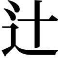

| 大阪人の「うまいこと言う」技術 (PHP新書) | |
| 福井栄一 | |
| PHP研究所 (2005) | |
大阪人の「うまいこと言う」技術
福井栄一
はじめに
仲間数人が久しぶりに顔を合わせ、料亭で会食。山海の珍味に舌鼓をうつ。互いの話が大いに弾み、楽しく和やかな時間が流れていく......。
もちろん、この世の中、ご馳走がタダということはあり得ないから、会費は払わなければならない。ただし、その払い方には、地域差があろう。
東京あたりでは、万事スマートにこなすのが身上なので、幹事があらかじめ会場の入り口で会費を徴収しておくことが多い。
京都ならば、「お座敷でお金の話は堪忍どすえ」というわけで、祇園のお茶屋よろしく、後日、忘れたころに請求書が送られてくるのだろう。
ところが、多くの大阪人にとっては、上記の東京式と京都式のどちらにも、心理的な抵抗感がある。
まず、東京方式については、「どんな料理を食べさせてくれるのか」「どんな酒をどのくらい飲ませてくれるのか」などがまったく分からないままに、先に会費だけを払わされることが不当に思われて、どうも納得が出来ないのである。物事をスマートに進めんがために、素朴な（しかし根源的な）疑問を抑え込んでしまえるほど、大阪人の自我はヤワではない。
かといって、京都方式も難儀である。
だいいち、今宵の数時間をここで過ごすのに、いかほどの費用を要するかを知らないままでは、後日の請求額が気がかりで、せっかくの料理も、ろくろく喉を通らないだろう。「店の女将とは、飲食費の請求書作成にあたって、お銚子の本数をごまかさない生き物である」という性善説に立つ大阪人は極めて少ない。
では、大阪の場合はどうか。大阪では、「いざ勘定」という段になると、少なからぬ人がゴネる。「仕事の関係で遅刻してきたから、会費相当分の料理を食べる間がなかった」とか「俺は、アンタらほど大酒を飲んでいないから、これでは完全に割り勘負けや」などと言って、お金を出し渋るのである。
ただし、こう聞いて、「大阪人はガメツイ」と結論づけて済ませてはいけない。問題は、この先なのである。
財布片手にごちゃごちゃ愚痴っている人を横目で見ながら、古き佳き時代の大阪人なら、こう呟いただろう。
「もう、アイツは次回から呼ばんとこ。懲りた。春の夕暮れで、かなわん」
なんのことを言っているのか、お分かりか。
もし、この台詞を真横で聞いていたアナタが、「いまの季節は夏やのに、春とはどういうこっちゃ」「もう午後十時を回ってるのに、なにが夕暮れや」などの疑問に苛まれ、無言のまま座っていたら......。「春の夕暮れもたしかに困ったもんやが、察しの悪いのも、それはそれで、かなわん」と判断され、払い渋っていた人のみならず、アナタにも、次回の会合の際のお声は、かからないと思われる。
種明かしをしよう。「春の夕暮れ」とは、ケチのことである。
「（春の日が）暮れそうで暮れない」と「（お金を）くれそうでくれない」とを掛けて、「春の夕暮れ」としゃれているのだ。
ふだんは大言壮語していても、いざとなると金を出し渋る。そんな難儀な人でも、一応は友人。その友人をつかまえて、露骨に「ドケチめ」では、ひど過ぎる。
しかし、「大の男が、この程度の金のことで、ごちゃごちゃ言うとは情けない」という思いはぬぐいきれないから、なにか言わないと、自分の気持ちのおさまりがつかない。
こうしたモヤモヤ感をすっきり解消するため、大阪人が苦心惨憺の末に編み出したのが、「春の夕暮れ」という「しゃれ言葉」なのだ。
人間関係において、ええ恰好はしない。合理性も追求する。そして、言いたいことは言う。それが多くの大阪人のモットーである。
ただし、「言いたいことを言う」にしても、その言い方がミソなのであって、しゃれ言葉を駆使すれば、「うまいこと言う」ことが可能になる。相手のご機嫌を損ねずに、本音を言えるのだ。時には、相手への苦言やクレームですら、ある種の賞賛と賛意をもって聞いてもらえる。本来的には耳の痛いことを言われているにもかかわらず、当の本人が「アンタ、うまいこと言うなあ」と、ポンと膝を打ったりするのである。大阪のしゃれ言葉は、魅力的な会話へのパスポートなのだ。
人とのコミュニケーションに日々悩まされる現代人に、しゃれ言葉という会話の特効薬を提供したい。それが本書の狙いであり、願いである。著者が「うまいこと言う」て、アナタを詐術にかけようというのではけっしてない。ご安心の上で、しゃれ言葉の楽園へと分け入っていただきたい。それでは、さっそく......。
○困ったとき○仏の椀
○問題外である○死んだ亀さん
○延々と待たされるとき○鍛冶屋の飯
○計画がいつの間にか流れてしまったとき○夜明けの幽霊
○際限がないとき○迷子の鳳凰
○評価してくれる人がいない○産婆のお産
○手出し出来ない○石垣のうなぎ
○文書が読みにくいとき○根性悪の姑
○聞こえにくいとき○猿の病気
○発言しないとき○瀬戸物の巾着
○とても飲みきれない......○武蔵野
○やることがないとき○欠けた硯
○呼んでも身内しか来ない場合○深草の団扇
○経験豊富なことを指して○爺の喧嘩
○口の減らない相手に○蛸の天ぷら
○言ったことを実行しない○うどん屋の釜
○やっぱり口だけで実行しない○鯰の子
○直言一本槍○竹屋の火事
○好きなように言えばいい○やもめの行水
○偉そうな態度を指して○献上の鯛
○おだてるコツは○酢屋の看板
○ほめたりけなしたり○井戸替えの釣瓶
○ご機嫌ばかりとる○宵越しの天ぷら
○実質以上に高く評価する○山伏の夕立
○無鉄砲な人を指して○蛙の行列
○一筋縄ではいかない人○金魚のおかず
○油断のならない人○お城の堀
○しつこい人○うなぎの天ぷら
○つまらない○黒犬のおいど
○やっぱりつまらない○新しい煙管
○落ち着かない人○在所の駕籠かき
○心構えが出来ていない人○馬場の柿の木
○頼りない人○新米の寿司屋
○やっぱり頼りない人○煮過ぎたうどん
○ボーッとしている人○八月の槍
○やっぱりボーッとしている人○幽霊の写真
○来ているのかどうか分からない○紗の羽織
○いつの間にかいなくなる人○燃え杭の身投げ
○ぞっこんな様子を指して○鼠六匹
○男女の仲がどうも怪しい○鰯煮た鍋
○親密な仲の男女○上町の井戸
○四六時中、イチャイチャしている男女○郵便の川はまり
○強く結ばれている男女○ちびた鋸
○仲睦まじい恋人たちを前に○上手な易者
○嫉妬する○京の大仏
○器量がよくない○田舎芝居
○お金があるゆえの悩みを指して○下手な将棋
○カネにうるさい○京細工
○やっぱりケチ○春の夕暮れ
○見るだけの冷やかし客には○夏の蛤
○高価すぎて買えない○親父の着物
○博打で負ける○竹の子博打
○飲み過ぎで財産をなくす○下手な大工
○金回りが悪い○赤子の行水
○やっぱり金回りが悪い○狐のやいと
○どうしても金回りが悪い○馬のやいと
○お金がない○無地の羽織
○やっぱりお金がない○近江八景
○勝ち進む様子を指して○時計の針
○すでにお見通し○牛の爪
○もっともな場合○いとさんの癇癪
○万事、心得ているとき○羽織の紐
○思案顔の人に○師走の蛙
○ご機嫌斜め○おでん屋のはんぺん
○雲行きが怪しいけれど......○貧乏な魚屋
第部 「しゃれ言葉」用例集
なにわっ子が長い年月の間、はぐくみ慈しみ続けてきた「しゃれ言葉」とは、どのようなものか。その正体を探っていくにあたって、一言述べておきたいことがある。
じつはしゃれ言葉については、『浪華しゃれことば』（前田勇著）、『大阪ことば事典』（牧村史陽編）、『大阪ことば辞典』（堀井令以知編）などの研究書が知られている。しかし、惜しむらくは、これらの先行業績がしゃれ言葉の意味だけを解説して、用例を挙げていないこと。あるいは、挙げていても、わずかの分量にとどまっていることである。
なにせ、現代人は忙しい。その現代人に対して、用例抜きで、しゃれ言葉とその意味だけを羅列するのは、良策とはいえない。
というのも、めいめいが頭の中で、しゃれ言葉を実生活の文脈に戻し入れて理解し、味わってくれるという保証がないからである。
とすると、このままでは、機知と諧謔と情愛の宝庫であるしゃれ言葉が、「宝の持ち腐れ」で終わる危険性がある。
しゃれ言葉と現代人の間に横たわるこうした懸隔を少しでも埋めるため、本書では、紹介するしゃれ言葉すべてに用例を付した。そして、不粋は承知で、なくもがなのコメントも記した。
挙げてあるたくさんの用例の中から、あなたが、たとえひとつでもふたつでもお気に入りのしゃれ言葉を見つけてくださり、本日以降の日常会話や商談の中で、さっそくそれを使ってくださったとしたら、本書の目的の多くは果たされたといえる。言葉は、実際の会話の中で使われてこそ、真の生命を得るからだ。
さあ、あなたも、しゃれ言葉の世界へ。
いままで言葉にしにくかった、あなたの微妙な感情や想いを、ピタリと言い当ててくれる絶妙の表現が、きっと見つかるはず......。
どないもなりまへんわ
○困ったとき○
仏の椀
【会話例】
「こないだの地震で、
大事にしてた壺やら食器やら、
棚から落ちてみんな割れてしもうた。
ホンマ、仏の椀や」
「残ったのは、金属で出来た椀だけか」
【意味】
かなわん（銅椀）。やりきれない。
【解説】
仏前に供える椀は、たいてい銅製なので、銅椀というわけ。木偏に「宛」と書いて「椀」、石偏に「宛」と書いて「碗」と、木も石も揃っているのに、金偏に「宛」という漢字にはついぞお目にかからないのが、なんとも不思議である。
「仏の椀」と並んで、「仏の御器」という言い回しも使われる。御器というのは尊い器という意味であるが、「合器」の転訛ともいわれている。合器とは、「合わせる」「合わさる」という字を含んでいることからも分かる通り、蓋つきの器のことである。ちなみに、世の中には、この御器を狙ってやって来る輩がいる。そうした不届き者は「御器かぶり」、または「御器ねぶり」と呼ばれるのだが、その呼称が転じて「ゴキブリ」になったらしい。仏法の威徳ではなく、御器に盛られた食物に惹かれて、どこからともなくゾロゾロと集まってくるのだから、さしもの仏サマも「縁無き衆生は度し難し」と肩をすくめておられることだろう。
こんな話がある。ある町に、「米を一口食べれば、どこの産かをたちどころに言い当ててみせよう」と豪語する男がいた。周囲の者が半信半疑で全国の米どころから米を取り寄せて、炊いて順に食べさせてみた。すると、男は「これは越後の米」「フムフム、これは近江米かな」「うん、この味は美濃米や」などと、触れ込み通り、どれもこれも見事に当ててみせる。一同は感心していたが、やがて誰かがちょっとばかり悪戯心を起こし、あちらこちらの米を混ぜて炊いて、男に喰わせた。「さあ、これがどこの米か分かるか？」と尋ねると、食べた男はしばらく考えて、「ウーム。これはきっと、大仏っつぁんの仏餉じゃな」。奈良の大仏さんのところへは、全国の信者から米の寄進があるだろう。ということは、お供えする仏椀に盛られたご飯は、きっと諸国の米のミックスだろう。だから、いま自分が食べさせられた、この不思議な味のご飯は、大仏っつぁんの仏餉に違いないというのが、かの男の推理であった。
さて、功なり名を遂げた仏サマなら、壇上に居ながらにして、信者が入れ替わり立ち替わり供物を届けてくれる。が、修行中の僧侶は鉢を持って家々を回る、いわゆる「托鉢」である。いまでも、京都あたりでは、門口で読経して喜捨を集めて回る托鉢僧をよく見かける。
ところが、上には上があるもので、卓越した法力の持ち主ともなると、戸別訪問は必要ないのである。鉢がひとりでに喜捨を集めてくれるのだ。そうした飛鉢伝説地は日本全国に何カ所かあるが、特に有名なのは、西国第二十六番札所の法華山一乗寺（兵庫県加西市）である。この寺の法道仙人の持ち物といえば、観音像と仏舎利と空の鉄鉢だけ。法道は托鉢には歩かず、必要があるときには、鉢を法力で飛ばして人々から喜捨を受けたという。また、鉢が官米を積んだ船に遭遇した際、「これは朝廷の米だから」と役人が喜捨を拒むと、突然、積荷の米俵がつぎつぎと躍り上がり、鉢に導かれるようにして列をなして、法道のいる法華山の方角へ飛び去ったらしい。「ぎょうさんあるんやから、少しくらい頒けてや」という鉢（法道）の気持ちも分からぬでもないが、職責上、「ハイ、どうぞ」というわけにもいかなかった役人の苦しい立場も理解出来る。彼がこののち、事件の責を負わされて左遷の憂き目に遭わなかったことを祈るばかりだ。鉢の代わりに人が飛ばされたら、しゃれにもなるまい。
○問題外である○
死んだ亀さん
【会話例】
「お客さん、この入れ歯、
いまやったら一五万円。
どうでっしゃろ？」
「阿呆かいな。
そんな値では、死んだ亀さん、
まったく話にならんわ。
もっとも、もう歯なしになっとるけど」
【意味】
はなし（放し・話）にならん。
【解説】
「死んだ亀さん」といっても、亀吉さんや亀次郎さんがお亡くなりになる話にあらず。文字通りの亀のことである。死んだ亀を四天王寺の放生会で池に放すわけにはいかないから、「話にならん」「論外だ」という意味になる。秋の彼岸に、功徳のため生類を放してやる行事が、放生会である。放生の対象となる生き物は、地域により異同が大きい。亀のほかには、鳥やうなぎなどがこの恩恵に浴す。ちなみに、放生会の歴史は古く、京都の石清水八幡宮の場合、貞観五（八六三）年に始まったという。以降、応仁の乱などによる中断を除き、江戸時代も連綿と続けられた。盛時には、僧侶・神官など千数百人が参列する壮大な行事だったが、明治元（一八六八）年の神仏判然令により廃絶された。「神仏習合の行事はまかりならん」とされたのである。僧侶・神官が同席した、古式に忠実な放生会が復活したのは、平成十六（二〇〇四）年、明治の廃絶からじつに百三十余年ぶりのことであった。
ところで、四天王寺と亀は縁が深い。石舞台の東側には、石造りの巨亀の口から清水が流れ出す亀井水がある。ご詠歌に曰く「ありがたや 法のはじめの 天王寺 亀井に浮かぶ 御仏の影」。亀井水を護る亀井堂は、昭和二十（一九四五）年の空襲で焼失したが、十年後に再建された。また、六時堂前の大池には多くの亀が棲みつき、いつしか亀池と呼ばれるようになった。天気のよい日には、水べりでのんびりと甲羅干しをする亀たちを見ることが出来る。
さて、世の中、放してもらえる幸運な亀がいるかと思うと、捕まえられて売り飛ばされるかわいそうな亀もいる。縁日の夜店で売られる小亀などは後者の典型である。縁日の境内をブラブラ歩く親子連れ。夜店で売っている小亀をめざとく見つけた子供が、さっそく親に「買ってくれ」とせがむ。「こういうところで売ってる亀はねえ、すぐに死んじゃうからダメ」という親の言い草を聞いて、店の親仁が口をはさむ。「そんなことないですよ、お客さん。昔から、鶴は千年、亀は万年っていうじゃありませんか。まあ、さすがに万年というのは言い過ぎかもしれないが、ウチで扱っている亀は、そんじょそこらで売っている亀とはわけが違いますよ。見かけはこんなに小さいが、丈夫な性質で、最低でも五年は生きますぜ」。ここまで言われたら、さすがに親もグラッとくる。おまけに親仁の講釈の間じゅう、子供は壊れたレコードのように「買って、買って」と繰り返しているから、根負けして、とうとう一匹、買ってやった。
さて、それから二日もしないうちに、バケツの中で飼っていた例の小亀は死んでしまった。子供はピーピー泣き叫ぶ。生き死には運命とはいえ、あまりにも短命だ。ひど過ぎる。だいいち、子供がかわいそうだ。「最低でも五年は生きる」という親仁の言葉が腹立たしくて、親はもう一度、縁日の会場へ足を運んだ。親仁の店はまだ同じところにあった。
「おい、親仁。二日ほど前にここで小亀を買った者だが、今朝見たら、もう死んでたぞ。最低でも五年は生きるんじゃないのか」と詰め寄ると、親仁は悪びれもせず、「そりゃあ、お客さん、運が悪かったねえ。きっとその亀は、今朝が六年目だったんだ」
○延々と待たされるとき○
鍛冶屋の飯
【会話例】
「『いますぐお持ちします』って言うて、
うどんの出前、いまごろ来たわ。
あんたとこ、ホンマ鍛冶屋の飯やな」
「お客さん、そらそうですわ。
ウチは手打ちですから」
【意味】
でけしだい（出来次第）。
【解説】
このしゃれ言葉では、納期の約束があてにならない業種の代表として、なぜか鍛冶屋さんが選ばれている。まったくお気の毒としかいいようがない。「鍛冶屋の飯」と一方的に非難されてはいるが、要は程度問題なのである。先方の「出来上がったら、当方からお客様のところまで、すぐお持ちします」というコメントの大部分が苦しまぎれの言いわけであるとしても、そこにかすかに誠意が感じられる分だけ、まだマシである。「延々と待たされる」「結論がいつ出るのか、サッパリ分からん」「誠意のカケラもない」という暗剣殺の総本山は、なんといってもお役所である。こんな狂歌がある。「すぐ三日 これを許可する 三カ月 調査となると 二年三年」
「鍛冶屋の飯」と聞くと、ひと仕事終えて汗びっしょりの鍛冶屋さんが、どんぶり飯をガサガサかきこむという光景をイメージしてしまう。これに対して、同じ「ガサガサかきこむ」にしても、ものがどんぶり飯ではなくて茶漬けになると、極楽トンボが素知らぬ顔して......という風情になる。
こんな話がある。ちょっと頼りない亭主が、台所で茶漬けを喰っていると、女房が銭湯へ行くと言って、妙にいそいそと出かけた。
ほぼ入れ替わりに、友人の男がやって来て、少しの間、お前の家の二階の部屋を貸してくれと言う。なんでも町内のある人妻との不倫にこの家の二階を使いたいのだと言う。「そんなもん、連れ込み宿があるやろ」と言うが、「今日は素寒貧（お金がないこと）で、それは無理なんや。すまん、頼むわ」と伏し拝む。しぶしぶ承知すると、男は「じゃあ、外で待っている女をいまから呼び入れるけど、同じ町内で顔がさすから、ふたりが二階へ上がる間だけ台所の電気を消させてくれ」と言う。ばかばかしい話だが、もうヤケである。亭主は男の望む通りにさせてやった。
しばらくすると、天井がギシギシ音を立てる。「おうおう、お盛んなことで......。それにしても、あの女の亭主は女房の浮気も知らんと、いまごろどこでなにをしとるんやろか。お気楽な奴っちゃ」と茶漬けを喰うていると、ことを済ませたふたりが、また電気を消して台所を通り抜け、玄関から出ていった。
しばらくして、女房がようやく銭湯から帰ってきた。留守中の顛末を話して聞かせると、「へえ、そんなことが......。それにしても、その女の亭主、なにも知らんと、いったいどうしとるんやろか」と笑うので、亭主は「そうやなあ。おそらくは『知らぬが仏』で、のんきに茶漬けでも喰うとるんとちゃうか」
○計画がいつの間にか流れてしまったとき○
夜明けの幽霊
【会話例】
「この前、映画、見に連れてってくれるって
言うてたのに、
すっかり夜明けの幽霊やんか」
「そらそうや。
ホラー映画やしなあ」
【意味】
立ち消えになる。
【解説】
俗に、「妖怪（化け物）は場所に憑き、幽霊は人に憑く」という。妖怪は、特定の峠とか橋とか川とか、ともかくも出現する場所が決まっているので、そこさえ注意して避けて通れば、べつだん害はない。しかし、幽霊は、恨む相手を目指して狙い撃ちで出てくるので、いったん目をつけられると、どこへ逃げ回っても、執拗に追いかけてくる。
多くの幽霊を読んでいて思うのだが、幽霊は女性が多い。特に若い女が多い。そして、たいていの場合、美人なのである。スタイルもよいのである。色黒であばた面で団子鼻で出っ歯の幽霊、というのは聞いたことがない。また、体重が二〇〇キロもあって、ダイエット飲料をすすりながら現れる幽霊、というのも、あまりなじみがない。
昔の人も、この法則にはとっくに気づいていたと見えて、次のような話が伝わっている。
あるとき、閻魔大王の前へ連れてこられた亡者の女。これから閻魔大王に裁きを申し渡されるのであるが、これが気の毒なくらいの醜女である。女は、涙ながらに閻魔大王に懇願する。「私を一日だけ、娑婆へ戻してください。幽霊になって化けて出て、生前、私に冷たくあたり、外に愛人までつくった、あの憎い亭主に祟ってやりたいのです。あいつの怖がる顔さえ見ることが出来たら、そのあと、地獄へ落とされて、どんなつらい責め苦に遭っても構いません」
ところが、「幽霊＝美女」の慣例を破るわけにはいかない閻魔大王。「そちの言い分も、分からぬでもないのじゃが。よりにもよって、幽霊になりたいとな。幽霊になるのもなあ、条件があってのう。つまりじゃなあ、ウーム......」と、本当のことを言いにくくて大弱り。
部下の鬼が気を利かせて、女の後ろへ回り、袖を引っ張りながら小声で、「おい、幽霊じゃなく、化け物で願え、化け物で願え」
ちなみに、幽霊は日光は苦手だという。なかには、こんな幽霊もいる。
先月女房に先立たれた男が、ひとりで昼飯の茶漬けをすすっていると、いきなり食卓に青白い顔をした女が現れた。びっくりしながらもよく見ると、なんと亡くなった妻の幽霊ではないか。
「なんだ、お前か。おどかすなよ。どうした？ 淋しくなって出てきたのか」。幽霊は恥ずかしそうに頷く。
夫はちょっと不思議そうに続ける。「お前なあ、俺に逢いに来てくれたのは嬉しいけど、いまは昼間だぞ。幽霊ってものは、真夜中に出るものと相場が決まっているんじゃないのか？」
幽霊は気色ばんで答える。「夜に出ろだなんて、あたしには無理よ、そんなこと」
「どうして？」
「だって、夜は暗くてなんだか怖いし......。それにだいいち、女のひとり歩きは危険だもの」
○際限がないとき○
迷子の鳳凰
【会話例】
「カナリア、ア、あ？ あ～くたびれた、
普通にしりとりしても
いつまでも終わらへん。迷子の鳳凰や」
「まあ、そうやけど、
鳳凰の尻は鳥ちゃうで」
【意味】
キリ（桐）がない。
【解説】
鳳凰は、古代中国で、聖王出現の瑞兆とされた想像上の鳥。麒麟、亀、竜とあわせて、四瑞と呼ばれる。もっとも、鳥とはいってもその身体は、前半身が麒麟、後半身は鹿、頸は蛇、尾は魚、背は亀、嘴は鶏に似るという動物学者・博物学者泣かせの合成獣。王様や皇帝に「おめでたい鳳凰の姿を絵に描いてみよ」と命じられた宮廷付きの絵師は、さぞかし四苦八苦したことだろう。鳳凰は梧桐に棲み、竹の実を喰うといわれる。だから、桐が見当たらなければ、「迷子の鳳凰」というわけ。
通常、わたしたちは「鳳凰」と一語で呼びならわすが、厳密にいうと、オスが鳳、メスが凰であるらしい。西洋でこれに類した鳥を探せば、「フェニックス」が思い当たる。アラビア起源の伝説上の生き物で、五百年に一度だけ現れるといわれている。フェニックスの出現サイクルは、五百年。かたや鳳凰のほうは、聖王の出現の度ごとだから、不定期のお出ましである。はたしてどちらの鳥の出現頻度が高いのか、その東西比較は興味深いところである。ちなみに日本では「鳳凰」と聞いて、十円硬貨の意匠にも使われている宇治平等院鳳凰堂を思い出す人が多いだろう。伽藍の外観が、翼を広げた鳳凰に擬せられて、この名がある。
こんな話がある。ある人が、客人を自邸へ招いて一晩、歓談した。翌日、その客人は、帰りがけに門口のところで振り向き、門に「鳳」と墨書して去っていった。その家の主人は、これが聖王のしるしである「鳳凰」の一字であるので、賛辞と解して大いに喜んでいた。数日後、このことを得意げに友人に話すと、友人は周囲を憚りながら、小声で教えてくれた。「怒らずに聞いてくれよ。俺とお前は古い仲だから、本当のことを教えてやるんだぜ。お前さん、その客人とやらに門に『鳳』と書かれて、『ほめてもらった』と喜んでいるが、そりゃあ、とんでもないまちがいだ。『鳳』という字をよく見てみなよ。『凡』という字に『鳥』って書くだろう。これは『凡鳥』ってことだ。つまりだなあ、お前さんはその客人に、『この家の主人は凡鳥（平凡な鳥）だ、これといって取り柄のない凡庸な男だ』と落第点をつけられたってわけさ」。門上に「鳳」と書かれてその真意を解せず、かえって「ありがとう。そんなことを書かれると、照れるなあ」などと言ってニヤついて見送る主人を見て、くだんの客人は「やはり、ワシの目に狂いはなかったわい」と頭を振り、嘆息していたに違いない。
ちなみに、鳳凰につきものの桐について、『枕草子』はこう記す。「桐の木の花、紫に咲きたるは、なほをかしきに、葉のひろごりざまぞ、うたてこちたけれど、異木どもとひとしう言ふべきにもあらず（桐の花が紫色に咲き出づるのは、なんとも風情がある。たしかに、無遠慮に広がったあの葉は恰好が悪いが、さりとて、他の樹木と同列には語れない木である）」。何事においても無条件な礼賛はせず、対象の属性を冷静に見極めているのが、清少納言らしい。
桐の花といえば、大正二（一九一三）年、当時二十八歳だった北原白秋が出した歌集が、その名も『桐の花』。「いつしかに 春の名残と なりにけり 昆布干場の たんぽぽの花」「君かへす 朝の舗石 さくさくと 雪よ林檎の 香のごとくふれ」など、名歌が目白押しである。
○評価してくれる人がいない○
産婆のお産
【会話例】
「あいつ、ええ歳して、
サンバ・カーニバルのオーディションに
出場か。産婆のお産もええとこや。
誰も採り上げてくれへんわ」
「サンバのおっさんでもアカンか、やっぱり」
【意味】
取り上げ手がない。採り上げてくれる人がいない。
【解説】
病院に入院せず、自宅か実家でお産をするのが一般的だった時分は、陣痛が始まると、家族の者が近所の産婆さんのところへ走っていって急を知らせたものだ。もちろん、産婆さんの資格試験があったわけではなく、地域共同体の中で自然発生的にそうした職能を果たす女性が登場したのである。必要は発明の産婆、ではなく母である。
近年では、「産婆」という言葉はまことに分が悪い。「婆」という語が実態に合わず、また多分に侮蔑的だというのである。そこで、「助産婦」という語が生まれたが、ほどなくこの語も槍玉にあげられた。男女共同参画社会において、出産の介助をおこなうのは女性に限らない。したがって「婦」はマズイというのである。そして現在では、「助産師」の呼称が普及しつつある。これだと性別に関係なく使える。助産師になるには、厚生労働省が実施する国家試験に合格しなければならない。
こうした言葉の変遷を促す男女平等の発想自体に異を唱えるつもりはないが、「産婆」という語がやみくもに駆逐されてしまうと困ることも、じつはある。
たとえば、哲学史の世界では、かのソクラテスが対話を通して相手に「無知の知」を促したということで、彼の営為を「魂の産婆術」と呼びならわしてきた。「産婆」という語を使ってきたのは、産婆さんが男か女か、若者か老人かということは度外視して（そもそも「産婆」と呼びながら、ソクラテスはれっきとした男性であった）、なにごとかが生み出されるのを助ける者というイメージを喚起したかったからに過ぎない。にもかかわらず、「産婆」の「婆」の字面を嫌悪するあまり、「産婆」の語をすべて機械的に「助産師」と替えてしまうのは困ったものである。だいいち「ソクラテスは魂の助産師」という評言では、どうもしまらない。
さて、妊婦の出産にあたって、産婆にはふたつの重要な仕事があった。ひとつは、いうまでもなく分娩の介助である。母体の安全をはかりながら、新生児を無事に分娩させるためには、熟達した医学的手腕が必要とされる。いまひとつは、出産が無事に終わるように、一種の産育儀礼を執りおこなうことである。
出産にあたって、このふたつの機能をひとりの産婆が同時に果たすとは限らなかったらしく、以前、日本のとある地域では、出産にはふたりの産婆が立ち会ったという。ひとりは実際に分娩を介助した。残りのひとりは、妊婦の枕元に座って、お産が無事に済むように独特の呪言を唱えたのだそうだ。これらの産婆は時と場合に応じて、その役割を交替することが可能だったのか、それともそれぞれは専業だったのかというあたりは、はなはだ興味深い問題である。
なお、かつてのヨーロッパの民衆が産婆に抱いたイメージも、同様の事情を反映して、じつに複雑だった。民衆は、産婆をその医学・薬学的な専門知識のゆえに尊敬したが、一方では、妖しげな薬や呪法に通暁したまじない師、女魔術師扱いして恐れた。悪名高き魔女狩りが猖獗を極めた際には、多くの産婆がまっさきに魔女として断罪され、処刑されたという。
○手出し出来ない○
石垣のうなぎ
【会話例】
「タマは、また魚くわえて
縁の下に隠れよった。
しばらくは石垣のうなぎやな」
「うなぎだけに、
匂いで釣るしかなさそうやな」
【意味】
手が出せない。
【解説】
石垣の石の間にうなぎが潜り込んだら、もう手を出せないというのが文字通りの意味。うなぎが入り込めるだけの隙間があるのだから、その石垣は野石積だろう。野石積とは、自然石を成形・加工せずに、そのまま積んで造る素朴な工法。手軽に築造出来る利点はあるが、強度不足なために急勾配に積み上げることが困難である。加えて、外敵が石の隙間に手や足をかけてよじ登るのも容易。したがって、堅牢第一の城郭の石垣としては、不適当である。
ところで、うなぎは夏バテに効くというが、本当だろうか。これには、ビタミン が関係している。筋肉や神経の働きを助けるビタミンは、水に溶けやすく、かつ熱によって失われやすい。このため、暑い夏、身体が脱水気味になると、どうしても不足しがちになる。このビタミンが不足すると、身体はだるく疲れやすくなり、いわゆる夏バテの自覚症状が出る。そこで、ビタミンを豊富に含むうなぎを食べれば、効果てきめんというわけだ。日本人はこうしたうなぎの効用に昔から気づいていたらしく、『万葉集』（巻十六・三八五三）には、大伴家持が痩せぎすの吉田石麻呂を揶揄した和歌が収められている。「石麻呂に 我もの申す 夏痩せに よしと言ふものぞ むなぎとりめせ」。ここでいう「むなぎ」がうなぎのことである。
が関係している。筋肉や神経の働きを助けるビタミンは、水に溶けやすく、かつ熱によって失われやすい。このため、暑い夏、身体が脱水気味になると、どうしても不足しがちになる。このビタミンが不足すると、身体はだるく疲れやすくなり、いわゆる夏バテの自覚症状が出る。そこで、ビタミンを豊富に含むうなぎを食べれば、効果てきめんというわけだ。日本人はこうしたうなぎの効用に昔から気づいていたらしく、『万葉集』（巻十六・三八五三）には、大伴家持が痩せぎすの吉田石麻呂を揶揄した和歌が収められている。「石麻呂に 我もの申す 夏痩せに よしと言ふものぞ むなぎとりめせ」。ここでいう「むなぎ」がうなぎのことである。
さて、うなぎという名称の由来については、面白い逸話が残っている。昔、長堀川沿いに「菱又」という料理屋があった。ある年のこと。どういうわけか長堀川がひどい不漁に見舞われた。これでは客に出す魚がない。菱又の主人がどうしたものかと恨めしげに川沿いをブラブラ歩いていて、ふっと見ると、川にはヌルマがうようよしている。この当時は、うなぎのことを「ヌルマ」と呼んでいたのである。しかも、「ヌルマを一口でも食べたら命がない」という妙な俗信のためにこれを捕らえる者がおらず、不漁の川にヌルマだけがはびこっていたのであった。このヌルマを見るうち、主人の中の料理人根性がムズムズし始めた。「どうせ料理する魚がないんやったら、いっそヌルマを使たらどうやろ？ とりあえず試しに自分で調理して喰うてみて、死んだらそれまでのこっちゃ」。さっそく持ち帰り、苦心惨憺、蒲焼きという方法を編み出して喰ってみたら、これがじつに旨い。しかも、命に別状はない。「よっしゃ、よっしゃ」と喜んでいた。
そうこうするうち、この菱又の座敷で、ヤクザの手打ちの儀式がおこなわれることになった。ところが、出す料理はといえば、あのヌルマの蒲焼きしかない。貞女で名高い菱又の女房は、「自分は、『ヌルマなんぞ喰わせやがって』とヤクザに切り殺されても仕方がない。でもせめて、夫の命だけは助けたい」と考え、自分で膳を座敷へ運んだ。ヌルマの蒲焼きを見たヤクザどもは、最初こそ「馬鹿にしとるんか」と激怒したが、匂いに誘われるようにしておそるおそる食べてみると、これが美味。やがては、お代わりする者まで現れる始末。「お内儀、こりゃあ、いける」「お内儀、こりゃあ旨いぜ」とみんなが舌鼓をうち、あんまり何度も何度も「お内儀」「お内儀」と言うものだから、それが訛って、料理の名前までいつの間にか「うなぎ」になってしまったのだという。
ちなみに、うなぎを蒲焼きにするにあたって、関西と関東で調理法が違っていることはよく知られている。関西では、腹を割き、蒸しをかけずに生のまま直火で焼く。関東では、背から割いてさっと焼き、一度蒸してから、タレをつけて焼く。どっちにしても、やっぱり美味しい。
○文書が読みにくいとき○
根性悪の姑
【会話例】
「おかん（お母さん）の字は細かいなあ。
なんて書いてあるんか分からへん。
根性悪の姑や」
「なに言うてんの。
あんたまだ独り者やんか。
嫁さん、はよもろてんか」
【意味】
読みにくい（嫁憎い）。
【解説】
姑と同居するお嫁さんが、ある日、悪筆で有名な知人から来た手紙を見て、「根性悪の姑やわあ」と呟く。それだけなら、ただの独り言である。しかし、かつてはやったマーフィーの法則ではないが、人生、最悪のタイミングで最悪のことが起こるものである。そのときに、そこへたまたま姑が通りかかってこの発言を聞いたとしたら......嫁姑戦争の勃発ないし再燃となる。このしゃれ言葉は、周囲をよく見回してから使う必要がある。
「読み」と「嫁」を通わせるのは正直いって少々苦しいが、にもかかわらずこの種の言い回しが伝えられてきたのは、ひとえに、人類普遍の（？）「姑と嫁はうまくいかない」という法則の威力のゆえだ。嫁と姑の不仲は、古今東西を問わず、当事者を含めた多くの人々を悩ませつづけている。
それにしても、漢字というのは、じつにうまく出来ている。「姑」は「古い女」と書き、「嫁」は「家の女」と書く。いままでずっとその家をとり仕切ってきた女性（姑）が、新しく若い女の出現で、突然に主役の座を奪われ、「古い女」とレッテルを貼られる。面白かろうはずがない。
一方、嫁は嫁で、押しも押されもせぬその「家の女」として敏腕を振るおうとするが、なにかにつけて守旧派の姑が口を出すので、反感を持つ。両者の衝突は不可避であろう。これに子供（孫）が絡むと、事態はいっそう険悪化する。
この春、小学校に上がったばかりのＫ君が泣きじゃくっている。可愛がっていた金魚が死んでしまったからだ。お母さんといっしょに庭に小さな穴を掘り、そこへ埋めてやる。「お母さん、金魚は死んだらどこへ行くの？」とＫ君は母親に尋ねる。「天国に行くのよ」と母親は教えてやる。翌日、母親が買い物へ出かけ、お祖母ちゃんとふたりで留守番中、Ｋ君が尋ねる。「お祖母ちゃん。お祖母ちゃんがもし死んだら、どこへ行くの？」。悪気はないのである。純粋なる好奇心がＫ君にその質問をさせたに過ぎない。しかし、お祖母ちゃんはそうは考えない。お祖母ちゃんはにこやかに、しかし目だけは笑わずに、Ｋ君の頭を撫でながら尋ねる。「どうしてそんなこと、訊くんだい？」。子供というのは移り気だから、Ｋ君はもう自分が質問したことすら忘れて、アイマイな返事をしただけで、テレビを見に隣室に行ってしまう。やがて、なにも知らない母親が買い物から帰ってくる。お祖母ちゃんは泣き叫ぶ。「アンタ、いつもいつも子供の前で、アタシが早く死んだらいいと言ってるんだろう。だから、孫があんなことを......」。新たな戦闘の開始である。
ちなみに、独身女性が結婚相手の男性に求める条件としては、世に「三高」が知られている。すなわち、「高身長・高学歴・高収入」のことだ。これらに加えて、「家付き、カー（車のこと）付き、ババア抜き」まで要求する人も多いというから、おそれいる。また、ジジイがおそらくババアに含まれていっしょに観念されているのは、男性の沽券がすでに地に墜ちていることを如実に物語っている。怖いことである。とはいえ、姑の側も負けてはいない。元気自慢のお婆さんに、ある人が長寿の秘訣を聞いたところ、彼女曰く「願わくば 嫁の死に水 とる気なり」。あの憎たらしい嫁よりも一日でも長生きしてやる、という執念が、健康の元だというのであった。
○聞こえにくいとき○
猿の病気
【会話例】
「あの芸人、声が小さいんかな？
なに言うとんのか、猿の病気やで」
「おかしいのはあんたや。
あれはパントマイムやんか」
【意味】
聞きづらい。
【解説】
「聞き」と、猿の鳴き声の擬音語たる「キキ」を掛ける。本項の猿は、なんの因果か、自身が病気で苦しんでいる。しかし、「さる」の音が「危難が去る」「災厄が去る」の「去る」に通じるというので、世間的には、猿が人間の病気や災厄を追い払ってくれるものと思われている。
さらに、鬼門除けの獣としての信仰も篤い。京都御所の北東角である、その名も「猿ケ」。鬼門除けのために、築地壁が欠け込みになっている。その軒下には、幣帛を担いだ猿の木像が祀られていて、北東の方角から都に悪しきものが入り込まないように、睨みをきかせてくれている。猿像は金網で囲まれているので、「鳩のフン除けか？」と早合点する観光客が多いが、さにあらず。この猿クン、あまりにも見事に彫られているためにいつしか命が宿り、夜になると軒下をゴソゴソと抜け出して、御所内をうろつき、食べ物をあさったりして、人間に迷惑をかけたらしい。そこで懲らしめのために、住処である軒下に金網が張られ、以降は夜のお散歩が出来なくなったのだという。座敷牢ならぬ軒下牢というわけ。
さて、この猿ケのはるか北東、左京区修学院関根坊町に鎮座するのは、赤山禅院。皇城守護の寺である。じつは、当寺の堂宇の屋根の上にも、鬼門除けの猿の像が祀られている。猿ケの猿像は木製だが、こちらの猿は陶器製。屋外で雨ざらしだから、木製では保たない。この猿も徘徊を戒められ、金網で囲われている。京都の猿は、よほど悪戯好きで落ち着きがないものと見える。総じておっとりしている（といわれている）京都人とは好対照である。
中世や近世の芸能で人気のモチーフに「猿回し」がある。正月ともなると、猿曳きがかわいい小猿を連れて門口へやって来て、芸を披露した。新年をことほぐ門付け芸である。狂言『靫猿』を見てみよう。大名は狩りの途中、猿曳きが連れている猿に目をつける。その毛並みのよい皮を剥いで、靫（矢を入れる筒状の道具）の材料にしようというのである。そこで、「その猿を譲れ」と猿曳きを脅迫して、強引に承知させた。自分の子供同様に育ててきた猿との別れ。猿曳きの悲しみは深い。両者の愁嘆に心動かされた大名は意して、猿をあきらめる。猿曳きは喜んで猿とともに舞う。猿に扮するのは子方である。狂言師の一家の少年が務めることが多い。狂言の芸道は、「猿（『靫猿』）に始まって狐（『釣狐』）に終わる」といわれるが、幼き狂言師にとってはこの猿の役が本格的な舞台デビューとなる。その折、父または祖父が猿曳きを務めると、猿を慈しむ猿曳きの姿に実際の家族関係が重なって、見る者に独特の感興を引き起こす。
こんな話がある。駕籠に猿を抱えた猿曳きが乗っていた。途中で小用を催してきたので、自分だけ降り、猿は乗せたまま駕籠を先に行かせた。すぐ戻ってくるだろうと駕籠かきもそのまま歩みを進めたが、意外に時間がかかっているようで、どんどん距離があいてしまう。すると、駕籠の中の猿が、猿曳き恋しさに「キャッ、キャッ」と鳴く。駕籠かきがうしろを振り返って、「もおし、お供の方、ご主人様がお呼びですわい」。たしかに、猿回しの芸では、主役はどう見ても猿のほうである。
○発言しないとき○
瀬戸物の巾着
【会話例】
「今日の会議のときの部長はなんや、あれ。
ふだんはうるさいくせに、肝心なときには
瀬戸物の巾着で、なにも言いおらん」
「ホンマ、お蔭でこっちは
開いた口がふさがらんわ」
【意味】
口を開かない。
【解説】
ある物や人が一世を風靡した結果、その物や人の名前が固有名詞から普通名詞へ変容する、というケースが歴史上、散見される。
「大師」という言葉がいい例である。今日、大師といえば、なぜかみんな弘法大師（空海）のことを思い出す。仏教史を振り返れば、大師と呼ばれる偉い坊さんがほかにもたくさんいるのに、である。たとえば、伝教大師（最澄）や元三大師（良源）などだ。
また、「黄門」とは中納言という役職の唐風の呼称であり、本来、特定の個人を指すわけではない。にもかかわらず、現代人にとって「黄門」とは、超長寿テレビ番組『水戸黄門』でおなじみの徳川光圀のことである。
同じように、「瀬戸物」も、本来は現在の愛知県瀬戸市周辺で作られる瀬戸焼を指したが、いまでは陶磁器の通称名になってしまっている。ある時期をさかいに、瀬戸産の陶磁器が急激に市場を席巻していった証左であろう。
ちなみに、大阪の瀬戸物業者の信仰を集めるのが、坐摩神社（大阪市中央区久太郎町）の境内にある陶器神社である。瀬戸物の灯籠などが目をひく。この界隈でおこなわれる瀬戸物祭りは、大阪の夏の風物詩である。
こんな話がある。ある日、居丈高な客が、瀬戸物屋の店先に現れた。「この徳利、これ、なんぼや」「はい、四〇〇文です」「四〇〇文？ えらい高いなあ。ちょっと、まからんか？」「お客さん、この値がギリギリの線でして......」「なんや、ケチくさい。アカン、お前みたいな奴では話にならん。あのなあ、この店の主人を呼べ、主人を」「へえ、あいにく、わたしが主人でございます」「ウソ言うな、こないだ寄ったときに『三〇〇文でも売りまっせ』と言うとった、物分かりのよいアイツがきっと主人やろ。アイツを呼べ」「いえいえ、そんな者はおりません。正真正銘、わたしがこの店の主人です」「いや、そんなことないはずや」。いくら言うて聞かせても分からん客に業を煮やした主人は、くだんの徳利を地面へ叩きつけ、「どや、こんな思いきったことが出来るんは、この世の中で、この店の主人だけやろ」
お客さんが茶碗や徳利をドシドシ割ってくれてこそ、瀬戸物屋は儲かる。瀬戸物屋自身が割るのは、どう考えても話があべこべである。
さて、次は「巾着」である。俗に「盗人にも三分の理」というが、通行人の懐中を狙う巾着切りには、昔は一種の職人気質があった。「力ずくで強奪するのではなく、気づかれぬように相手に接近して、あとは自身の手技の冴えだけに頼って金品を頂戴する。これはいわば、正々堂々たる（？）勝負なのだ」という奇妙な矜恃があった。落語『一文笛』で紹介されているスリの述懐が面白い。「人の寝てる所へそおっと忍び込んで、音をささんように盗んで帰るというもんでもなければ、刃物を突きつけて、脅かして金をとるのでもない。強盗なんてのは下の下や。スリっちゅうのは、技術者である。エンジニアである。とられる奴がまぬけで、とるほうに腕があるんや」。これにひきかえ、最近のクレジットカード詐欺やオレオレ詐欺（振り込め詐欺）はどうだろう。手法はたしかにスマートかもしれない。しかし、奇妙な言い方だが、犯罪における人間味が極端に薄らいでしまった感がある。犯罪も世につれ、ということか。
○とても飲みきれない......○
武蔵野
【会話例】
「さあさあ、野球拳で負けた罰として、
この武蔵野で一杯飲むんや」
「いや、社長さん、
ウチ、もうすっかり酔ってしまいましたさかい、
せめて京都盆地ぐらいで堪忍しておくれやす」
【意味】
飲み尽くせない（野〈を〉見尽くせない）ほど大量の酒の入る盃。
【解説】
古くから殷賑を極めた上方とはうって変わって、戦国期の武蔵野は、見渡す限りの野原。そこに入植した（させられた？）徳川家康が、短期間に、あれだけの城下町を築き上げるとは、さしもの太閤さんも予想出来なかったとみえる。江戸時代の大坂の人口が約四〇万人であったのに、盛時の江戸の人口は一〇〇万人を超えていた。江戸は、ロンドン（約九〇万人）やパリ（約六〇万人）を上回る世界一の大都市に成長したのであった。
ところで、武蔵野という盃は大量の酒が入るというのがウリであるが、酒席では「べく盃」という趣向もある。「天狗」「ひょっとこ」「おかめ」の三種類の盃と専用の独楽を使う座敷遊びである。独楽を回す。そうして、止まった独楽の延長線上にいる人が、出た面に描かれた盃で、酒を飲むのである。「おかめ」盃なら、普通の盃なので問題はない。残りのふたつが、この遊びの眼目である。「天狗」盃は、その名の通り長い鼻が突き出ているので、注がれた酒を飲み干すまでは、盃を卓へ置けない。また、「ひょっとこ」盃は、おなじみの、あの突き出した口に小さな穴が開けてある。だから、その穴を指でふさぎながら酒を注いでもらう。ということは、この盃もまた、中身を全部飲み干さないと卓へ戻せないというわけ。とはいえ、三つの盃とも中へ入る酒の量はたかだかしれているので、酒が弱い人や女性であっても、無理なく楽しめる。武蔵野を豪快に飲み干して満座のヤンヤの喝采を浴びるか、誰にどの盃が当たるか分からない「べく盃」のドキドキ感を楽しむか。お座敷での遊びにかける人間の創造力には、果てしがない。
ところで、紫草という植物の根は古来染料として用いられてきたが、武蔵野地方に生える紫草で染め上げられた紫色は、特に「江戸紫」と呼ばれた。江戸時代、幕府は、明るい紫色の着用を大寺院の僧侶など身分の高い者に限って認め、一般庶民には禁じていた（ちなみに、高僧の紫衣着用の許可権限を、江戸幕府が朝廷から剥奪した象徴的な出来事が、寛永四〈一六二七〉年の紫衣事件である）。ところが、「着ちゃダメ」と言われるといっそう着たくなるのが人情である。「紫は着たし、命は惜しし」、さてどうしたものか。
この膠着状態を打開してくれたのが、江戸紫であった。武蔵野産の紫草に媒染剤を加えて、独特の鈍い紫色を生み出すことに成功した。紫色に対する渇望を癒してくれたので、江戸庶民はこの江戸紫を熱烈に愛したのである。どんな色かもうひとつピンと来なければ、歌舞伎『助六由縁江戸桜』を思い出していただければよい。あそこに登場する江戸っ子のヒーロー、花川戸助六が締めている鉢巻、あの色が江戸紫である。
なお、江戸紫を染める際、好んで用いられたのが、井の頭池の良質の湧き水である。井の頭の弁財天の石段の両脇には、江戸の紫根問屋らが慶応元（一八六五）年に寄進した石灯籠が一対、残っている。もちろん、自分たちの商売を支えてくれる良水に感謝しての寄進であって殊勝な限りだが、同時に、当時の紫根業者らの経済力が相当のものであったという証左としても、興味深い。
○やることがないとき○
欠けた硯
【会話例】
「あんた、せっかくパチンコ屋に来て、
もう帰るんかいな」
「だって、軍資金はもう全部
使い果たしてしもて、
ここにおっても欠けた硯なんや」
【意味】
する（磨る）ことがない。
【解説】
不景気が続き、会社は社員のクビを切りたくてウズウズしているから、社員食堂でご飯を食べながら「俺の部署は今日も、欠けた硯や」とうっかり口走って、上司か人事部員の耳に入ろうものなら、一巻の終わりである。まこと、硯の取り扱いには注意を要する。
硯は、筆・墨・紙と並んで、文房四宝のひとつである。「墨磨り」がつづまって、「すずり」という語になったらしい。最近の人はずぼらなので、たいていは墨汁を使って済ませているが、本来は字を書く人が、心を鎮め静かに硯で墨を磨るのが、書道の基本である。硯は文殊菩薩の眼ともいわれ、粗略に扱ったり手入れを怠ると凶事を招くという俗信もある。リストラ候補のオジサンでなくとも、みんな昔から硯を大切にしてきたのである。
ちなみに、文房四宝のうち、特に筆と墨のふたつを名物にするのが、奈良の町。俗に奈良名物は「奈良墨、奈良筆、奈良晒、春日灯籠、町の早起き」といわれる。古くから都が置かれ、文化や経済の中心地であったから、朝廷の必需品である筆や墨、人々の生活用品である晒の生産が盛んなのは、頷ける。また、春日大社に信者が寄進した大小無数の灯籠が、他所から来た人の目に印象的なのも、不思議ではない。しかし、町の早起きが名物とは、どういうわけであろうか。これには、鹿が関係している。
奈良では、鹿は春日大社の神獣と考えられ、大事に保護されてきた。なにせ、春日大社の祭神は、常陸国の鹿島神宮から白鹿に乗ってやって来たといわれているのだ。だから、故意であれ過失であれ、鹿を傷つけるのは重罪。まして殺したりすると、犯人はその鹿の遺骸とともに、竪穴に押し込められ、上から石を放り込まれて生き埋めにされた。これが、悪名高き石子詰の刑である。大事に扱うべき物が壺や掛け軸なら、敬して遠ざけておけば、壊したりする心配はない。ところが、鹿は生き物だから、自分の意思で動き回る。しかも、生身の身体なので、病気や老衰で行き倒れたり、路傍で死んだりする。これが厄介なのである。
たとえば、朝起きたとき、家の前で一頭の鹿が死んでいたとしよう。
いくら自然死だと言い張っても、その家の者に嫌疑がかかることは必定である。悪くすれば、あの恐ろしい石子詰の刑が待っている。遺骸をこのままには出来ない。驚いてキョロキョロとあたりを見回す。早朝だから、まだ通行人はいない。かといって、意外に重い鹿の遺骸を担いで、いまからどこかへ捨てに行くのは危険過ぎる。途中で誰かに見られたら万事休すだ。幸い、頓馬な隣人はまだ寝ている。そこで、当家の家人は、他人に見つかる前に、鹿の遺骸を隣家の前へ引き摺っていき、そこへ置いて去る。これで少なくともわが家は安泰である。こういう状況下なら、誰だって同じようにするのではないか。誰でも、こうした隣人のエゴイズムの被害者になり得るのである。こうして、町のみんなが警戒して、隣家よりは早起きして、道の掃除と称し、毎朝自邸の前をチェックするようになった。早起きが町の名物になるメカニズムは、かくもエゲツナイ。
○呼んでも身内しか来ない場合○
深草の団扇
【会話例】
「今日はさよならコンサートやし、
ファンがいっぱい来てるやろ。
客席の入りは、どうや？」
「この緞帳の隙間から覗いてみい。
深草の団扇や。
ま、来てくれるだけ有り難いけど、
『扇げば尊し』やなあ」
【意味】
うちわ（団扇・内輪）ばっかり。
【解説】
京都・深草の里の名物、深草団扇。近世、この地は竹藪が多く、地元の人は藪蚊で難儀していたという。この蚊を追い払うために、瑞光寺の元政上人が奈良団扇をもとにして考案したのが、深草団扇の発祥だといわれている。
手で叩きつぶしたり、殺虫剤で駆除したりすると、仏教で禁じられている「殺生」になるが、団扇で扇いで払うならば問題ない。しかも、作るための材料は、地元に掃いて捨てるほどある竹なのだから、一石二鳥である。お上人はなかなかのアイディアマンであったとみえる。
江戸期には一世を風靡した深草団扇であったが、残念ながら明治末期にいったんは廃れた。しかし、そこは地力のある京都のこと。関係者の尽力でつい最近、見事に復活して多くの人に喜ばれている。一説によると、香川県丸亀市の名産である丸亀団扇も、その製法は深草から伝えられたらしい。
丸亀団扇の最大のヒット作は、男竹の丸柄で、丸に金の字が大書された、金毘羅渋団扇である。大胆な意匠でいちど目にしたら忘れられない。天保期（一八三〇～一八四三年）には金毘羅詣の狂熱はピークに達し、丸亀港は参拝客で溢れかえった。彼らが、参拝の記念にと、丸亀団扇を争うように買い求めたのである。地元にとっては、まこと金毘羅さまさまのご利益であった。
こうした伝統を背景に、現在でも丸亀は日本一の団扇どころである。
「伊予竹に 土佐紙貼りて あわ（阿波）ぐれば 讚岐団扇で 至極（四国）涼しい」
竹や紙など近隣国の特産品を材料として使い、製造コストを低く抑えられたのも、丸亀団扇の強みであった。
ところで、団扇を涼をとるだけのものと考えるのは早計である。平状に紙が貼られ、「なにか描いてください」といわんばかりの構造になっているわけだから、そこには花鳥風月など、ありとあらゆるモチーフが登場した。団扇は、一種のメディアであったといえる。となると、「せっかくのスペースに風雅な図柄を描いて済ますだけでは惜しい」「商品名や宣伝文句などを書いたら立派なＰＲツールになるじゃないか」と考える人が出てくるのは時間の問題。事実、すでに大正時代には、薬品メーカー、履物や清酒の小売店などが広告用の団扇を何万本、何十万本単位で大量発注して、得意先へ配ったりした。
もちろん図柄は手書きではなく印刷だが、骨の部分は相変わらず竹製であった。それでいて、これだけ大きな社会的需要に対応出来ていたのだから、当時の団扇業界の生産能力・技術が相当高かったことがうかがえる。竹不足が深刻化して、骨の部分がポリプロピレンで出来た団扇が普及していくのは、昭和三十年代以降のことであった。最近、地域の盆踊り大会会場で配られたり、消費者金融会社に雇われたアルバイトが街頭で通行人に手渡したりしている団扇は、ほとんどがこのポリプロピレン製である。
ちなみに、別に団扇の材料にされるのでもないのに、世の中には「ウチワノキ」という名の樹木が存在する。モクセイ科の落葉低木で、白く可憐な花が咲く。名前の由来は、果実の形状が団扇に似ているからだそうだ。
口八丁、手八丁でっせ
○経験豊富なことを指して○
爺の喧嘩
【会話例】
「今度のサッカーの試合相手は、
優勝候補の筆頭。
強豪との戦いを勝ち抜いてきとる。
爺の喧嘩やし、ますます気を抜けんで」
「ホンマ、踏んだり蹴ったりやなあ」
【意味】
場（婆）を踏む。
【解説】
「場」を大阪式に「ばあ」と伸ばして発音するから、「婆」の語に通じる。
超高齢社会ということもあり、最近よく「お前百まで、わしゃ九十九まで」という言い回しを耳にする。地方自治体主催の敬老パーティーなどでは、市長あたりも開会のスピーチなどで、よく引用している。お爺さんがお婆さんに向かって「お前百まで......」と言うのを目にすると、なにも知らない世間の人々は「嗚呼、素晴らしきかな、夫婦愛」と感動して目頭を熱くする。しかし、この間、「あたしゃ、この言い草は絶対許せないねえ」と憤慨するお婆さんに出会った。「どうしてですか？」と尋ねると、彼女はこう答えてくれた。「だってさあ、いままでさんざん苦労させられたグウタラ亭主に、『オマエさんは百まで生きて、九十九で死ぬワシを介護してくれ。それからなら、いつ死んでくれてもええぞ』と言われるようなもんじゃないか。そこまで馬鹿にされて、誰が嬉しいもんかね」
そういえば、こんな話もある。鶴の息子さんと亀の娘さんは、明日めでたく祝言をあげることになっていた。ところが、その前夜、亀の娘さんは電気もついていない暗い部屋で、ひとりシクシクと泣いている。母親が心配して「なんで泣くんだい？」と尋ねるが、娘はなにも言わず、ただただ泣くばかり。
母親がしばらく考えて、「ああ、分かった。あのお婿さん、アタシやお父さんの前では殊勝にしてるけど、お前とふたりきりになると急に横柄になって、ひょっとしてお前に暴力を振るったりするんじゃないのかい？ それで、明日の祝言がいやになって泣いてるんだね。なにも暴力亭主のところへ嫁に行くことはないよ。祝言はおよしよ」
娘は「そんなことないわ。あの人は優しい人なんだから。アタシに一度だって手を上げたことなんか、ないわよ」と反論する。
「そうなのかい......。じゃあ、どうしてこの子はこんなに泣いてるんだろう」と、またもや考えをめぐらした母親は、膝をうって「今度こそ分かったよ。向こうのお母さんだね、原因は。あのお母さん、あんなに穏やかそうに見えて、裏へ回ると、お前の太ももをギュッとつねったりするんじゃないのかい。そうなんだね、きっと。ああ、分かったよ。お前が泣くのも無理はない。祝言をあげる前から嫁をいびるような鬼ババのところへなんか、わざわざ嫁入りしなくてもいいさ。明日の祝言なんか、やめちまいな。お父さんにはアタシからちゃんと説明するから安心おし」
すると、娘は「違うわよ。向こうのお父さんもお母さんも、素敵な人よ。アタシをいじめたりなんか、しないわよ」と言う。
「じゃあ、どうして？」と訊くと、娘は「だって、お母さん、考えてもみてよ。最初の千年は、ふたり仲睦まじく幸せでも、あとの九千年はどうするのよ。アタシはずっと後家暮らしじゃないの」
○口の減らない相手に○
蛸の天ぷら
【会話例】
「お前、こんな酒の席になると、
いちいち俺の言うことにからみやがって。
蛸の天ぷらは、もうええ加減にしてくれ」
「そうか、ほな注文は、
烏賊の姿揚げにするか。
俺も下足のほうが好きなんや」
【意味】
揚げ足ばかりとる。
【解説】
烏賊の足のことは、寿司屋などでは下足と呼ぶが、蛸の足にはたして異称はあるのか。
たとえば、電気コンセントに補助器具を差し込んでソケット数を増やし、あちらこちらへ配線することを、俗に「蛸足配線」という。この場合、ひねりも言い換えもなにもなく、ただシンプルに「蛸足」と呼んで済まされている。わざわざご丁寧に「下足」と言い換えてもらっている烏賊に比べ、蛸の呼称に関してだけ、手抜き（足抜き？）されているような気がして、どうも釈然としない。また、蛸が気の毒でもある。
じつは、もうひとつ他に、気になることがある。蛸の最大の特徴である、あの例の八本の代物は、はたして足なのだろうか、手なのだろうか。
こういう話がある。病気に罹った蛸が一匹、海岸の波打ち際で寝込んでいる。茹でられると赤い蛸だが、こういうときには蛸でも青い顔をしているのだろう。この恰好の獲物を見つけたのが海岸をぶらついていた一匹の野良猫。相手が弱っているのを見透かした野良猫は、音もなく忍び寄っては蛸に襲いかかり、その手を一本ずつ喰いちぎっていく。そして、それをくわえたままひとまず岩の上へ登り、そこでゆっくりと食べるのである。食べ終わると、岩を降りて、またぞろ蛸の手を失敬していく。もちろん、蛸はその都度、反撃するのだが、なにせ病身でいつもの力が出ず、猫のするがままになっている。そうこうするうちに七本まで手を喰われ、残りはあと一本だけになってしまった。さすがに最後の一本まで喰われてしまってはあとあと困るし、なにより蛸の面目が立たないので、蛸は残った体力すべてをその手に集めて、猫の来襲に備える。猫が手に喰らいついてきたら、すばやく相手の身体に絡みついて、そのまま海中へ引きずり込んで復讐を果たそうという計略である。
ところが、肝心の猫はというと、岩の上から蛸を遠巻きに見るだけで、待てど暮らせどいっこうに近づいてこない。作戦を気取られたか。それとも、それまでに七本食べて、もう満腹になったのか。いずれにせよ、こっちが岩の上まで攻めていく体力はないのだから、向こうから来てくれないと話にならない。じれた蛸は、喰いちぎられた傷口の痛みも手伝って捨て鉢になり、とうとう、こう叫んで猫を挑発した。
「おい、どうした、どうした。あと一本、残ってるぞ。もう喰いに来んのか。怖気づいたんか」
聞いた猫がニヤニヤしながら言うには、
「フン。こっちはなあ、お前の考えなんぞ、ちゃんとお見通しや。その手は喰わんわい」
この話は、蛸が八本の「手」の持ち主だからこそ、成り立つ。これが八本の「足」なら、面白くもなんともない。この話の諧謔味を尊重して、「手」説を採ると、前述の「蛸足配線」は「蛸手配線」と言い換えねばならなくなる。電気という偉大な発明に敬意を表して「足」説に与すると、出来の良い小咄をひとつ失うことになる。さて、どうしよう......。
思えば、この種の執拗な追究こそ、「蛸の天ぷら」なのか。
○言ったことを実行しない○
うどん屋の釜
【会話例】
「アンタ、ホンマにうどん屋の釜やなあ。
『すぐ帰ってくる』って言うて、
全然戻って来うへんやんか」
「そらそうや。
うどんだけに、出かけた処は、
ソバやあらへん」
【意味】
ゆう（言う・湯）ばっかり。口先ばかりで、誠意がない。
【解説】
「湯」を「ゆ」と言わず、「ゆう」と伸ばす大阪流の発音なればこそ成立するしゃれ。釜が蕎麦屋の釜ではなく、うどん屋の釜であるのも、うどん党が圧倒的な大阪ならでは。「あんたはうどん屋の釜やから」と相手に言われて、釜の中で熱湯がグラグラと煮立っている情景を思い浮かべ、「ひょっとして、この人は、俺のことを熱血漢だとほめてくれているのか」などと勘違いすると、その後の会話は目も当てられない事態となる。
こんな話がある。物知りの隠居と長屋の源さんがしゃべっている。隠居「源さん、この世の中のもんはなあ、なんでも五行っちゅうもんから成り立っとるんじゃ」。源「なんですのん、五行って？」。隠居「ええか、五行とはなあ、木、火、土、金、水の五つのことや」。源「はあはあ、そういうもんですか」。隠居「たとえば、お前さんが毎日、喰うてるご飯、あれかて、じつは五行から成っとるんじゃて」。源「どういうことです？」。隠居「まあ、考えてみい。まず米を『水』でとぐじゃろ。薪を燃やして炊くから、『木』と『火』や。へっついさん（竈）は『土』から出来とる。お釜は『金』や。どうや、五行がちゃんと揃たある」。源「へええ、ほんまや。たいしたもんですなあ。ほたら訊きますけどなあ、昨日、大家さん処へ泥棒が入ったそうな。あの泥棒っちゅうのはどうですのん？ あれも、いま言うた五行とやらで、あんじょういけますか？」。隠居「ああ、そんなん、べつにむずかしいことやないで。まずやなあ、泥棒の『泥』は、『土』と『水』を混ぜて出来とるわな。泥棒の『棒』は、つまりは『木』のことや」。源「ほんなら、『火』は？」。隠居「最近の泥棒は始末が悪うて、盗みばかりやのうて、火もつけおるやろ。だから、『火』やがな」。源「へえへえ、たしかに。これで、四つ済みましたな。あれ？ せやけど、ちょっと待ってや。ほたら、『金』は？」。隠居「あほやなあ。その金がないさかいに、泥棒するんやないか」
ちなみに、うどんの麺も煮え湯もなんにも入っていない空の釜が、ひとりでに鳴動する現象を、「釜鳴り」という。「釜が鳴るのは、戦乱や地震など凶事の前触れだ」とみんなが恐れおののく地域があるかと思うと、「釜が鳴るのは吉兆。いっこうに鳴らなかったり、それまで鳴っていた釜の音がぴたりと止むのは凶兆」と厳密な場合分けをして沈着冷静に受け止める地域があったりして、「ところ変われば、品ならぬ『釜鳴り』変わる」といった様相を呈している。
岡山県の吉備津神社の「釜鳴り神事」は、吉凶禍福を占う特殊神事として世に名高い。上田秋成の『雨月物語』所収の「吉備津の釜」では、占いをたてるも釜が鳴らず、吉備津の神に祝福されていないのが明らかな縁談を無理に進めたために神罰てきめん、関係者はやがて恐ろしい悲劇に見舞われる。
一方、釜は釜でも「塩釜」にゆかりが深いのは、宮城県塩釜市の塩竈神社。ご祭神の塩土老翁神は海の神様で、その昔、地元民に製塩法を授けてくださったという。そのときに使ったとされる神釜が、いまでも遺されている。境外末社の御釜社にいたっては、塩釜そのものがご神体である。
○やっぱり口だけで実行しない○
鯰の子
【会話例】
「いつもえらそうなことばっかり言いやがって。
鯰の子とは、アイツのこっちゃ」
「自信（地震）だけは一人前や」
【意味】
口ばっかり。言うだけで実行に移さない。誠意がない。
【解説】
カバだってジンベイザメだって、口は大きい。しかし、ここでは、大口の生物の代表選手として、ナマズが登場している。ナマズは幼生期は意外に体が小さいので、その時分はよけいに大口に見える。ナマズは、漢字ではもともと「鮎」と書く。ところが、日本では「鮎」の字はアユ（サケ科の小魚）を指す。そして、ナマズには国字たる「鯰」の字が当てられている。
さて、安政二（一八五五）年十月二日、江戸湾近辺を震源地とする直下型大地震が江戸の町を襲った。推定マグニチュード六・九という大地震である。死者は四〇〇〇人とも五〇〇〇人ともいわれ、倒壊した家屋は一万四〇〇〇戸以上、市内三八カ所から出火し、さらには津波に見舞われた町もあった。なんの前触れもなく突然に家・財産のすべてを失い、生活を破壊された幾多の人々は、これが天災だと頭では分かっていても、惨状を前にしてこう問わざるを得なかった。「なぜわたしたちがこんな目に？」「どうしていまごろ地震が？」。そうした悲痛な問いに応えるかのように、江戸の町をこんな噂がかけめぐった。今回の地震は、地中に棲むという地震鯰が引き起こしたというのである。ただ、これだけでは、どうして地震が十月に起きたのかが説明出来ない。いままでだって、地震鯰はずっと江戸の町の下にいただろうからである。
ところが今回の噂は、こうした疑問にも答えを用意していた。たしかに地震鯰は、平素から地中深くに棲んでいる。そして、地震を起こしてやろうと四六時中狙っている。その野望を果たせないでいるのは、もったいなくもかしこくも、かの鹿島大明神が「要石」なる巨石で、この地震鯰の首根っこ（鯰の首がどこなのかはこの際、問うまい）を押さえつけてくださっているからである。ところが、十月だけは事情が違った。十月は、別名を神無月という。この月には、出雲で八百万の神々の寄り合いがあるというので、日本じゅうの神サマたちはいったん持ち場を離れ、出雲へ集結するのである。神サマが一時的にその土地を不在にする月なので、神無月なのである。鹿島大明神といえども、この例外ではない。出雲まで出張しないといけない。その間、例の地震鯰はどうするか。放っておくと暴れ出すに決まっている。そこで、鹿島大明神は、出雲へ赴くにあたり、心やすい恵比寿っさんたちに留守を頼んだ。「この地震鯰、なにをしおるや分からん難儀な奴ですから、あんじょう見張っといておくれやす」というわけだ。しかし、留守番はしょせん留守番。やはり本人のようにはいかない。地震鯰は鹿島大明神が出雲へ出向いた隙をつき、恵比寿っさんたちの目を盗んで大暴れして、今回の地震を引き起こしたというのである。
ちなみに、地震直後から、江戸では「鹿島大明神」「要石」「地震鯰」の三点セットをモチーフとする木版画「鯰絵」が、爆発的な流行を見た。鯰絵は、当初は、地震の原因となった（と噂されている）鯰を戯画化した他愛のない単純な絵であったが、幕末という時代の不穏な空気を反映してか、次第に大地震という文脈を離れ、鯰にかこつけて当時の政情を揶揄したり、民衆の世直し願望を率直に表現するメディアへと変質していった。放置しておいては危険である。鯰絵のキナ臭さを看取した幕府の反応は、素早かった。町奉行所は、地震の翌月には鯰絵の一斉取締りを開始、数百枚の版木が没収され、数十名の版元が捕縛されたという。
○直言一本槍○
竹屋の火事
【会話例】
「まあまあ、
そうポンポン言いなって。
ホンマ、竹屋の火事やなあ」
「そう言うあんたは、
ホンマ、すぐ人の話に水さすなあ」
【意味】
ポンポン言う。歯に衣着せず相手に直言する。
【解説】
竹は、節で仕切られた中空部分が多いので、焼けると、火の中ではぜて、ポンポンと音がする。東南アジアでは、竹筒を炊飯に利用する地域がかなりある。竹筒の空洞部分に米と水を入れて火にくべるだけだから簡便だし、なにより竹の香りが中の飯に移って、美味しいらしい。日本では、淡竹の竹筒に入れて燗をした竹酒が知られている。ただし、酒に竹の香りが移って味わい深いのは、火にくべた一回目だけ。竹筒は、もったいないが一回限りの使い捨てにしないといけない。それを知らず、同じ竹筒を使い廻して、それでも「旨い、旨い」と悦に入っている人は、本当に酒の味が分かっているのではなく、竹筒で飲んでいるという雰囲気に酔っているだけなのである。
さて、竹屋さんが火事になると、その家人にはお気の毒だが、少なくとも「竹屋の火事」というしゃれ言葉が生まれる。では、竹藪が焼けるとどうなるか。竹藪焼けた。ひらがなで書くと「たけやぶやけた」。つまりは回文である。回文とは、上から読んでも下から読んでも同じ文または語のこと。前述の「竹藪焼けた」や「ダンスが済んだ」などは、学校の教科書にも載った古典的な名作である。最初は「祖父の意地」「いかにも苦い」「磨かぬ鏡」など短くて単純なものでも喜ばれたが、次第に世の中の要求水準が上がってきて、五・七・五の俳句、五・七・五・七・七の短歌の形式を踏まえた回文が無数に作られるようになった。俳句形式では「孫抱かば 太鼓羽子板 博多独楽」「草の名は 知らずめずらし 花の咲く」「酒の名は 伊丹呑みたい 花の今朝」など、短歌形式では「若草の 名は知らず見る 友どちと 戻る身すらし 花の咲く川」「桜木の もとにみなはや 今朝も来も 酒や花見に 友の気楽さ」「白雪は 名へつつめども 小野山や 野を求めつつ 経なば消ゆらし」など枚挙に暇がない。ここでは、ひらがなの書き下し文をいちいち書き添えることはしないが、疑り深い（失礼、探求心旺盛な）御方は、ご自分で紙に書いてみられるとよい。どれもちゃんと回文になっている。
「だから、どうした」と言わないでほしい。そういう趣向の言葉あそびなのである。もちろん、あそびだからといって、いい加減で済ましてよいということではない。現にいまでも、回文作家という職業がちゃんとある。彼らは一年三百六十五日、ウンウンとうなりながら回文をひねり出し、回文の本まで出版しておられる。
ところで、竹といえば、虎である。虎のトレードマークは体じゅうに見られる黄と黒の縞模様だ。あれだけを見ると、異様に派手で目立つから、「なんで、よりにもよって、敵に見つかりやすい、あんな模様なんだ？」「いやいや、虎くらい強くなると、ジャングルには天敵らしい天敵がいないから、これでも大丈夫なんや」と気楽な虎談義をしている人を見かけるが、それは人間サマの勝手な想像に過ぎない。竹に限らず、樹木の鬱蒼と生い茂った森林に入ると、体じゅうのあの色柄がちょうど保護色になって、敵にも、自分が狙う獲物からも、見つかりにくいのである。自然の造化の妙であろう。軍隊の迷彩服が町中では目を引くのに、野外戦では目立ちにくいのも同じ理由である。なんにせよ、酒グセが悪いという自覚のある人は、「大トラ（酒乱）のアンタには、これがお似合いや」と言って、竹竿を振り立てた奥さんや恋人に追いかけ回されないように、十分に留意されたい。
○好きなように言えばいい○
やもめの行水
【会話例】
「奈良とか京都とか、古い町のほうが、
大阪より雅やから、
そっちに引っ越したいやて？
やもめの行水や。勝手に言うとれ」
「まあ、どっちかというと、
独り暮らしやし、住むんやったら宇治やろなあ」
【意味】
勝手に言うとれ（湯取れ）。好きなようにほざくがいい。
【解説】
「やもめ」という語には本来、「未婚女性」「後家」「未婚男性」「妻に死別した夫」の四つの意味があるが、このしゃれ言葉の場合、三番目の「未婚男性」と解するのがよかろう。隣家の色っぽい姐さんが行水の湯を借りに来たのなら、こっちもなんだかドキドキソワソワする。別にいっしょに行水するわけでもないのに、である。ところが、訪ねてきたのがむさ苦しいやもめ男なら、「ええい、お前なんか、行水でもなんでも勝手にしたらええ」「湯でもなんでも好きなだけ持っていったらええから、早く帰りやがれ」ということになる。
ちなみに、「逃げしなに 覚えていろは 負けた奴」という川柳がある。ここに詠まれているのは、敗者が勝者へ負け惜しみを言いながら逃げるさまである。
一方、「やもめの行水」のほうは、負けてなお不平不満を垂れる奴に向かって、勝者側から投げつける言葉である。
さて、男やもめというのは、「男やもめに蛆がわく」「屁をひって おかしくもなし 独り者」などとさんざんの言われようである。しかし、相手が女性となると、「女やもめに花が咲く」などと、男性陣は極めて好意的である。
さらに、前述の二種類の「女やもめ」のうち、昔から、男たちのあらぬ妄想をかきたててやまないのは、なんといっても「後家」である。
こんな話がある。男が数人集まると、ほどなく必ずや始まるのが艶ばなし。『源氏物語』の「雨夜の品定め」ほど優雅ではないが、「女は若いほうがいいに決まっている」「俺は年増の芸者のほうが好みだ」「いやいや、尼さんの秘めた色気も捨てがたい」などと、モテない面々がめいめい勝手なことを言い合っていた。そのうち、ひとりが「なんだかんだと言っても、やっぱり女は後家に限る」と言い出すと、みんなも同意し、「そうだ、そうだ。後家がよい、後家だ、後家だ」の大合唱となった。これを聞いていた気楽トンボが、身もだえしながら、「そうだな、後家がいちばんだよなあ。ああ、ウチの嬶アも、早く後家にしたい」
ところで、十年ほど前、大阪府高石市などで発見されて日本じゅうをパニックに巻き込んだ生き物といえば、その名も「セアカゴケグモ」である。体長二センチくらいの小さなクモで、雌は背中に赤い縦縞があるので「セアカ」なわけだが、どうして「ゴケ（後家）」なのか。それは、このクモの雌が、交尾のあとに雄を食べてしまうことがあるから。つまり、みずから夫に手をくだして、後家になってしまうのだ。英語名も、widow spider（後家グモ）という。ということは、雌のこうした習性は広く世界的に知られているということである。以上の特徴を踏まえて漢字で書けば、「背赤後家蜘蛛」ということになる。いまだに「背赤苔グモ（背中に赤い苔の生えているクモ）」だと勘違いしている人がいるのでご注意。
さて、当時、このクモの発見でみんなが大騒ぎしたのは、このクモには毒性があるからであった。咬まれると、神経毒が全身に回り、咬まれた人はしびれ、腹痛、発汗などの症状に見舞われる。とはいえ、健康な大人なら、咬まれてもさすがに死ぬことはないのに、クモ全般に対する人々のマイナスイメージ、嫌悪感も手伝って、発見以降、各地でヒステリックともいえる大規模な駆除作戦が展開された。
○偉そうな態度を指して○
献上の鯛
【会話例】
「昨日、新社長がふんぞり返って
演説しとったわ。
献上の鯛丸出しやったで」
「そう言うたら、
みんな白い目で見とったわ」
【意味】
エラ張（ぶ）る。偉そうにする。
【解説】
お偉いさんに献上する鯛は、大ぶりで尾がピンとはね、エラも張った立派なものと相場が決まっている。「めでたい」の音が「目出鯛」に通じることから、正月のお飾りにも、睨み鯛は欠かせない。
しかし、こうした嘉称好字の風習はしばしば誤解される。験をかついだ当て字を所与の情報として、実物を想定してしまうからである。それが証拠に、ある魚屋さんの初売りの看板には、カタツムリよろしく両目がにゅっと飛び出た鯛......。この珍妙な絵を魚類学者が見たら、その先生も鯛に負けないくらい目を剥くだろう。
ともあれ、「縁起物」といわれる食べ物はたいてい、この種のめでたい当て字や言い換えがおこなわれる。俗に「夜の昆布は見逃すな」といわれるのは、「夜（よる）＋昆布（こんぶ）」つまり「よろこんぶ」の音が、「喜ぶ」に通じるからである。「鰹」は「勝男」に通じるから武士に好まれ、「するめ」は「寿留女」の字が当てられて、祝儀の場に登場する。いってしまえばそれだけの他愛ないものであるが、常に除災招福を切実な願いとしている庶民には、こうした発想でも十分にアピールしたのである。
さて、俗説のレベルでは「鯛は『めでたい』の『たい』に通じる」と涼しい顔で説明していれば済む。ただ、「鯛」の語源をまじめに探求していくと、これがなかなか一筋縄ではいかないらしく、議論百出である。一説には、「たい」とは、「たいらうお」の略ではないかといわれる。『延喜式』には、鯛は「平魚」と記されている。たしかに、鰤やふぐなどに比べると、鯛は扁平形をした魚である。ちなみに、鯛本人が聞いたら嫌な顔をするだろうが、鯛が魚の王者たる地位に就いたのは、おおむね江戸時代からだそうだ。室町時代まで、日本で最高位の魚といえば、鯉であったという。「黄河上流の竜門という急流を見事登りきった鯉は、竜になる」という中国の故事は、「登竜門」の話として日本でも人口に膾炙して、掛け軸や鏝絵などの恰好の題材とされた。それに、食文化の発信基地である京の都が、地理的に見て、海の魚には縁遠かったことも大きい。京童の食膳に上がる魚といえば、どうしても川魚が主となる。そして、川魚を前提に考えると、鮎や鮒などの諸魚をおさえて鯉が筆頭に挙げられる。鯉が一時期、魚の王として君臨していた所以である。
こんな話がある。なにごとも験を気にする男がいた。この男、元旦はご機嫌である。三元といって、年・月・日の三つの元が揃う縁起のいい日だからだ。家族を座敷に集めて、さっそく祝膳を囲む。鯛に鮑に海老に昆布に赤飯に......とおめでた尽くしの料理が並ぶ。大人たちはお屠蘇も手伝って、いい気分。子供たちは、いつにないご馳走を逃してなるものかと、目を白黒させながらほおばっている。みんながあれだけあった料理をあらかた平らげてしまい、満腹感で恍惚としていると、子供のひとりがなにを思ったか、つっと立ち上がり、父親の食べ残した焼鯛の骨を庭先の飼い犬に投げ与えながら、「ほれほれ、これはととさまの骨ぞ、喰らえ」。これを見たもうひとりが、母親の食べ残した鯛の吸い物の骨をつまんで投げ与え、「ほうら、これはのう、ははさまの骨じゃ。うまいぞ。喰らえ喰らえ」
○おだてるコツは○
酢屋の看板
【会話例】
「明日は、得意先の社長とゴルフやねん。
まあ、酢屋の看板を通しといたら
大丈夫や」
「そらホンマ、
うまさが引き立つやろな」
【意味】
じょうず、じょうず（上手・上酢）。
【解説】
人間の味覚は、甘味・辛味・苦味・酸味・鹹味に分類される。このうち、酸味を代表するのが酢である。食酢が普及していなかったころは、梅の塩漬けからとれる梅酢で料理の味つけをしていた。「いい塩梅だ」などと言うときの「塩梅」という語は、ここから来ている。
ところで、台所の棚の奥でホコリをかぶっている清酒の一升瓶を取り出し、おそるおそる味見をしてみると酸っぱいことがある。酒が変質して酢になっているのである。このことからも分かる通り、人間は酒の醸造の過程で、酢についてもさまざまな知識を会得していたのだろう。だから、古くから酒どころとして知られる灘や伏見が同時に酢の名産地でもあるのは、少しも不思議ではない。
酢には多くの種類がある。酒酢は清酒、米酢は白米、ビネガーは果実などを原料にしている。ちなみに、上方の「粋」という語は「酸し」に由来するといわれるが、この酸味は、いったいどの酢の味に近いのだろう。
さて、「酢屋の看板」である。自分の店の商品を悪く言う商人はいないから、酢屋なら「ウチでは上等の酢しか扱ってまへん」とばかりに、看板には「上酢」と書くだろう。それが転じて「上手」。
だから、「酢屋の看板」すなわち「上手、上手」と相手に言われても、素直に喜ばないほうがよい。相手が心底、感心しているとは限らないからである。ニヤついた顔で、「お上手、お上手」などと言いながら、気乗りのしない拍手をする......どうも、そういうニュアンスが否めない。
さて、現在、酢は純粋に調味料として使われるほか、一種の健康食品とも目されている。「カラダによい」として愛飲する人も多い。江戸時代には、痩せ薬と信じられていたらしく、太り過ぎを気にする女性が、痩身効果を願って飲んだ。
ちなみに、「酢屋の看板」の「看板」のほうであるが、文献上で確認されている最古の看板は、天長十（八三三）年成立の『令義解（りようのぎげ）』巻九に登場する。ここに、「凡市毎肆立標題行名（およそ市は肆ごとに標を立て行名を題せ）」とある。肆とは店のこと、行名とは扱っている商品名のことである。そして、標というのが、おそらくは看板であると考えられている。ただし、当時の識字率はかなり低かっただろうから、こまごまと字を書いても大半の人には読めない。したがって、看板といっても、単に商品の実物ないし、その大型模型をぶら提げて客寄せにしていただけかもしれない。
看板は、設置される場所や形状などにより、さまざまな分類が可能である。
屋根看板、掛看板、衝立看板、障子看板、置看板、行灯看板などがある。また、看板と聞くと、板に商品名や屋号を書いたものを想起しがちであるが、提灯や暖簾や幟の類も、考えようによっては、立派に看板の一種である。日本語は、欧米の言語と違い、平仮名・片仮名・漢字を駆使出来て、しかも、縦書き、横書きが自由自在だから、看板のヴァリエーションもじつに豊かである。とはいえ、明治までの日本の屋外看板は、建物の庇と直角の縦看板がほとんどであったことは注意を要する。往来を徒歩で通行する人には縦書きのほうが認知されやすいことを、昔の人は経験的に知っていたからだ。
○ほめたりけなしたり○
井戸替えの釣瓶
【会話例】
「黒田さんのご祝儀袋の表書きは
達筆やねえ。そやけど
表書きが裏から透けて見えるほど、
中身は少ないわ」
「井戸替えの釣瓶みたいに、
上げたり下げたり。忙しいこっちゃ」
【意味】
上げたり下げたり。
【解説】
井戸替えといっても、従来の井戸を廃して、別の井戸に切り替えるわけではない。一年に一度、たいていはお盆に、いつも使っている井戸の井戸底を浚えるのである。むろん、衛生面での必要性があったからだろう。ご近所の有志が引っ張って支える綱づたいに、若い者が底まで下り、清掃作業に勤しむ。長屋で共用の井戸だから、子供がイタズラで放り込んだ草履の片割れや、おかみさんが過って落としたかんざしなど、思わぬものが出てきて、一同が爆笑の渦に包まれることもあったろう。
こんな話がある。幇間の一八は芸者のお梅にぞっこん。お梅は「今夜、夜中にアタシの部屋へ来て。あんた、酒を飲むとすぐに約束をすっぽかすから、今日ばかりは飲んじゃダメよ」。ところが、そんな日に限って贔屓の客に呼ばれ、つい深酒をして、二階の座敷で寝入ってしまった。
しばらくして、はっと目を覚まし、お梅との約束を思い出すが、お梅の部屋へ行くのに廊下を通ると、他の部屋の者たちに気づかれる。そこで、明かり取りの窓から帯を垂らし、それに掴まって下へ降りた。ところが、時刻はすでにもう朝方である。下で朝ご飯を食べていた人が、降りてきた一八を見て、「なにしてんだ、お前は？ 寝ぼけやがって」。一八は「こりゃあ面目ねえ。井戸替えの夢を見まして......」。ちなみに、京都府船井郡園部町竹井には井戸替という地名が残っている。
上水道の普及もあって、町中の井戸は激減した。井戸が減ったということは、主婦たちの井戸端会議が開催されにくくなったことを意味する。いくら電話や電子メールがあるとはいっても、やはりとっておきのネタは直接、相手の顔や反応を見ながら披露したいのが人情である。しかし、井戸端という恰好のコミュニケーション・スポットはすでに失われてしまっている。さて、どうしたものか。町を見渡す。目印になるものといったら、電柱くらいであるが、犬の小便ではないので、まさかお互いが電柱と見ると根元へすり寄って話をするわけにもいかない。仕方がないので、オバチャンたちは、ドライバーのクラクションや怒号をものともせず、往来の真ん中で立ち話をしている。
ある夏の日。うだるような暑さの中、ふたりの主婦が道で立ち話に夢中になっている。スーパーの帰りと見えて、両手にはいくつもの袋を提げている。近所の人は「こんな炎天下、なにをしゃべっとんねん」と呆れながら横を通り過ぎる。
一時間ほどして、用事を済ませた同じ人がさっきの場所にさしかかると、驚いたことにあのふたりが汗だくになりながら、まだしゃべっている。買い物袋の中のアイス・キャンディーが暑さで溶けたらしく、袋からはしずくがしたたっている。
さすがに見かねて、おせっかいとは知りながら、声をかけた。「あの～。余計なことかも分かりまへんが、おたくら、どうせやったら、日蔭でしゃべりはったら？ 立ってはるとこはカンカン照りですやろ？ ほら、あと一メートルほど横へ寄ったら、マンションの建物の蔭で涼しいでっせ」。言われた主婦は「そんなん、アタシらかて言われんでも分かってます。しゃべりはじめたときはなあ、ここが蔭やったんや」
○ご機嫌ばかりとる○
宵越しの天ぷら
【会話例】
「いつも来うへん会長が、
昨日、突然やって来たさかい、
偉いさん、みんな急にへいこらして、
宵越しの天ぷらやったで」
「役員の入れ替えでもやるんやろか。
なんか臭うで」
【意味】
あげっぱなし（上げっ放し・揚げっ放し）。おだて通し。
【解説】
「揚げっ放し」と聞いて、何物かに取り憑かれたように夜通し天ぷらを揚げ続ける姿を想像してしまうと、意味が取りにくい。この場合、「揚げたままにしておく」と解したい。しかし、さぞかし臭うだろう。天ぷらには、「天麩羅」という漢字が当てられるが、これには珍説がある。まず、天麩羅という用字の考案者は、江戸後期の戯作者・山東京伝なのだそうな。
ある日、大坂から江戸へ流れてきた利助という男が、京伝のところへ泣きついてきた。大坂方面ではやっていた魚肉の油揚げを江戸で売り出そうと思うのだが、気の利いた商品名が思い浮かばないというのである。京伝はしばらく考えると、「天麩羅と名づけるがよかろう」と答えたという。利助が理由を尋ねると、京伝はこう説明してくれた。
まず、「天」は、「天竺浪人」の「天」である。次に「麩」という字を使ったのは、くだんの料理が小麦粉と縁が深いからだ。そして最後の「羅」だが、これは小麦粉を衣として薄くつけるからだ、と。補足しておくと、「天竺浪人」とは、住所不定の浮浪人のことである。他所から逐電してきた浪人だから、本来は「逐電浪人」と呼ばれてしかるべきなのだが、「逐電」という語を憚って、これを隠語的にひっくり返すと、「でんちく」→「天竺」になるのである（そうした倒置現象は、たとえば「場所代」を「ショバ代」と言ったりするのと同工異曲である）。次に、「麩」というのは、小麦粉に含まれる麩質（グルテン）から作られるから、小麦粉とは切っても切れない関係がある。そして、「羅」とはうすぎぬの織物のことで、「薄い」ものの代名詞である。
後世の誰かがこじつけで考えたのだろうが、まことに奇想天外な発想。まあ、このくらい人を食った説でないと一般には広がらないのだが......。ポルトガル語のTemporas（調味）の音に漢字を当てたとの説もある。
ところで、天ぷらに限らず、調理には火がつきものである。料理屋の「お品書き」を見れば一目瞭然だ。「焼きもの」「蒸しもの」「揚げもの」「煮もの」など、みんな火と縁がある。考えてみれば、たとえばそうめんだって、まずそうめんを鍋でゆがかないと出来ないし、デザートのプリンだってオーブンで蒸し焼きにしてから冷蔵庫で冷やす。火は欠かせないのだ。食の王国である中国へ行くと、調理法の分類は、もっと多彩にして精緻になる。「焼く」場合、火であぶるなら「」、油で炒めたら「炒」である。「揚げる」場合、多量の油で揚げるなら「炸」、少量の油なら「煎」である。また、「煮る」にしても、醤油で煮込むのは「紅焼」、炭火などで煮込むのは「燉」と、きちんと区別されている。
さて、調理法の用字はともかく、こうして厨房では、ほとんど常に火が燃えているわけだから、いちばん怖いのは火事である。このため、たいていの家では、厨房の柱に、火防せのお札が貼ってある。火防せの神を祀る神社としては、東では、静岡県周智郡の秋葉山（標高八八五メートル）をご神体とする秋葉神社、西では、京都府京都市右京区嵯峨愛宕町の愛宕山（標高九二四メートル）の山頂に鎮座する愛宕神社、この二社が双璧である。
○実質以上に高く評価する○
山伏の夕立
【会話例】
「あんなうるさい部長にも
かわいがられるなんて、
仕事の出来る人はさすが、違うねえ」
「山伏の夕立も
たいがいにしといてや。
カミナリ落ちんように
猫被ってるだけやで」
【意味】
かいかぶる（貝被る・買いかぶる）。
【解説】
にわか雨が降ってきたから、山伏が持っていたホラ貝を被って雨をしのぐ、というのは、あくまでしゃれ言葉の修辞上のお話である。実際の山伏にとって、ホラ貝は一種の法器であるから大切に扱う。けっして日除けや雨除けに用いたりはしない。ちょうど虚無僧が、やはり法器である尺八を平素から粗末に扱わないのと同じことである。彼らは、山野に起き伏（臥）して厳しい修行に励むゆえ、「山伏（臥）」と呼ばれる。日本古来の山岳信仰・自然信仰に、天台宗・真言宗の密教思想、さらには陰陽道や道教などが習合して、日本独特の信仰・修法体系が生み出された。これを修験道という。山伏は、修験道の行者なのである。修験道の根本道場としては、羽黒山、吉野山、大峰山、熊野三山などが有名である。彼らの出で立ちは、というと、歌舞伎『勧進帳』の武蔵坊弁慶の姿を思い出していただくと分かりやすい。袈裟・鈴懸を身にまとい、額には兜巾、手には数珠と金剛杖を持ち、笈を背負っている。見るからに厳めしい。
平安時代には、超人的な通力を有すると大いに崇敬された山伏だが、時代が下るにしたがって、庶民の揶揄の対象にもなった。たとえば、狂言『蟹山伏』には、そうした庶民の山伏観がおおらかに表現されている。蟹の精に出くわした山伏一行。従者が蟹の精に耳をはさまれて難渋しているので、主人の山伏が祈祷で引き離そうとする。しかし、いっこうに効果がない。そればかりか、ついには山伏自身も蟹に耳をはさまれてしまう。当時の観客が「なあんだ。山伏が自慢の法力でみごと蟹を退治するのかと思ったのに、ウラをかかれた」という思いでこの演目を楽しんでいたとは、考えにくい。「なんだか頼りなさそうな山伏が出てきたぞ、大丈夫かなあ」と思いながら見ていると、「ほうら、思った通りだ。やっぱりコイツじゃダメだ」という展開になる。そうした予定調和的な面白さがこの演目の魅力なのではないか、と思う。
山伏といえば、こんな話がある。永禄十一（一五六八）年に織田信長が各地の関所を廃するまで、旅人にとって関所というのは、役人にあれこれ詮議されて、痛くもない腹をさぐられる難儀なスポットであった。そこで、関所をスンナリ通してもらうために、わざわざ諸国行脚の山伏に扮する者も少なからずいた。ある旅の一行が、偽山伏となって関所へ向かっていたが、関所の向こう側の道から別の山伏の一行が来るのを見て、あわてていったん脇道へそれ、山伏の装束を脱いで、ふつうの身なりに着替えて本街道へ戻った。もちろん、これでは関所の通過に少々手間取るだろうが、本物の山伏一行とちょうど関所で鉢合わせして、先方に「こやつらは偽者じゃ」と騒がれでもしたら、それこそえらいことになる。なんとも間が悪いことだが、仕方がない。ところが、着替えて本街道へ戻ってみると、さきほど関の向こうに見えていた、あの山伏一行の姿がない。一方、こちらは、さきほど関の反対側にいた山伏一行。こちらに向かってくる山伏たちの姿を見るや、脇道へそれていた。「あっちは本当の山伏だろう。俺たちの正体がばれちゃあマズイから、こりゃあ、急いで着替えないと......」
ホンマ難儀な人やなあ
○無鉄砲な人を指して○
蛙の行列
【会話例】
「あの人に逆らうやなんて！
アンタ、蛙の行列やなあ。
この先、どうなっても知らんで」
「これまではさておき、
いまでは私もそれなりに成長して、
手も足も出るようになったんですわ」
【意味】
向こう見ず。
【解説】
蛙の目のつき方からして、後ろ足二本で立ち上がって行列を組んだら、前は見えまい。だから、「向こう見ず」である。
それにつけても、日本人は蛙好きである。書家の小野道風は、柳の枝に飛びつこうと懸命な蛙の姿を見て発奮し、ついには書道の奥義を究めた。鳥羽僧正の『鳥獣戯画』には、相撲に興じる蛙たちが、活き活きとした筆致で描かれている。小林一茶には、「痩蛙 負けるな一茶 是に有」の句がある。
また、『枕草子』には、こうある。
「火櫃に煙の立ちければ、『かれはなにぞと、見よ』と、おほせられければ、見て、帰り参りて、
わたつ海の おきにこがるる 物見れば あまの釣して かへるなりけり
と奏しけるこそ、をかしけれ。蛙の飛び入りて焼くるなりけり」
あるとき、火櫃に煙が立っていたので、帝が「あれはなにか見てこい」と言われた。そこで、従者が確認して戻ってきて、古歌をうまく引用して、「あれは蛙が火櫃に飛び込んで、焼けているのです」と当意即妙に答えた。それがまことに見事であった、というのである。清少納言の書きぶりからすると、あくまで宮中の椿事というニュアンスだが、研究者の中には、貴族の誰かが蛙を焼いてひそかに食べようとしていたのではないか、と言う人もいる。豪華な衣装に身を包んだ平安貴族が、焼きたての蛙をふうふうと吹きながらむさぼり喰うさまは、一種、異様な光景だろう。
蛙を喰う人をゲテモノ喰いだと責めてはいけない。日本でも、大正七（一九一八）年には、アメリカから食用のウシガエルが試験的に輸入され、農村を中心に国策として養蛙事業が推し進められた時期があった。「貴重な蛋白源だから、精を出して食べなはれ」というわけだが、日本人の食文化とはマッチせず、蛙料理は結局普及せず、今日に至っている。
蛙といえば、こんな話がある。ある日、浪花の蛙が京見物を思い立ち、艱難辛苦、ようやくのことで、浪花と京の境の天王山までやって来た。一方、京からは、浪花見物をしたいという物好きな蛙が、やはり苦労の末に天王山までたどり着いた。峠でバッタリ出会った二匹。「これだけしんどい思いをして、お互い、道のりはまだ半ばじゃ」と嘆くうちに、名案を思いついた。見晴らしのよいこの峠で、お互いが前足で支えあい、後ろ足二本で立てば、実際に足を運ばずとも居ながらにして、目的地を見物出来るという寸法である。さっそく、試してみる。浪花蛙曰く、「なんじゃ。名高き京といえども、故郷の浪花とちっとも変わらん」。京蛙曰く、「ほんに。浪花の町は、京とそっくりどすなあ。わざわざ見物に行くまでもないわ」。二匹は互いに挨拶をして、もと来た道を帰っていった。
かりに蛙が後ろ足で立つと、目が後ろ向きになって、前が見えない。二匹は、目的地の京や浪花を見ているつもりで、じつは自分がいま後にしてきた故郷を見ていただけなのだ。ちなみに、遊女は折り紙で作った蛙の背に針を刺して、恋しい男の来訪を待つまじないとした。
焼かれたり刺されたり、蛙も災難である。
○一筋縄ではいかない人○
金魚のおかず
【会話例】
「あの女将、ええ女やけど、
変な気は起こしたらあかんで。
ありゃあ、金魚のおかずや。
前に亭主三人追い出しとるさかい」
「たしかに、あとの祭りになったら、
すくい切れんわ」
【意味】
煮ても焼いても喰えん。
【解説】
「金魚のおかず」といっても、金魚の三食の献立を心配しているのではない。「金魚をおかずとして喰おうにも......」という喩えだ。ただ、あくまで人間サマを基準にした話。猫ならば、煮も焼きもせず、かといって刺身にするまでもなく、生で丸ごとペロリである。ちなみに、金魚の中でも、子供たちに特に人気の出目金は、明治期に中国から伝来した品種だそうな。したがって、テレビや映画の時代劇の中で、大名や御用商人が屋敷で飼っている金魚の群れが映ったとして、その中に出目金が混じっていたらイエローカードである。
さて、金魚はエネルギー効率がよい生き物だからか、飼い主が旅行などで二、三日間、家を空けてぜんぜん餌をやれなくても、平気で生きているらしい。にもかかわらず、旅行から急いで帰って金魚鉢を覗くと、哀れ金魚たちが白い腹を見せてプカプカ浮いていたりする。なぜだろうか。じつは、その原因は飼い主の優しさの発露にあるのだ。詳しく説明しよう。
旅行に行く前夜、飼い主は金魚鉢の中の物言わぬ金魚たちをジッと眺め、言いしれぬ罪悪感に苛まれる。自分が楽しくレジャーに出かけている間、この子たち（感覚としては、もはや自分の子供扱いである）はいっさい餌を与えられず、おなかを空かせたまま数日間を過ごさなければならない。
飼い主は「留守の間、餌をあげられなくなるけど、許してね。その代わり、今日はたくさん食べてね」などと言いながら、罪滅ぼしのつもりで、いつもの数倍の量の餌を金魚鉢の中へ注ぎ込んだりする。これがいけない。
中の金魚は、とりあえず餌が大量に与えられるものだから、はりきってバクバク食べる。そして、ついつい過食気味になり、内臓諸器官に大きな負担がかかる。さらに、食べ残した餌が、数日の間に金魚鉢の中で腐敗し、水が汚れる。すると、金魚は病気に罹りやすくなる。こうした事情で、飼い主がよかれと思ってなした行為が、結果として愛しい金魚たちの寿命を縮める、という皮肉が起きるのである。
ところで、金魚だって生身の生き物だから、飼い主が餌のやり過ぎに注意していても、病気になることがある。中でも変わった病気が「転覆病」というやつである。これは、季節の変わり目に、金魚が突然ひっくり返ったまま（転覆したまま）元に戻らなくなり、腹を上にして水面を漂い続けるという奇病である。
当然、飼い主からするとその不気味な光景に言葉を失うわけであるが、当の金魚はというと、ひっくり返っていること以外はいたって普通で、昏睡状態にあるわけでもなく、どこか特定の部位が痛むというのでもなさそうなのである。そして、よく観察してみると、いつもの通り、のんきに餌を食べたりしている。その異様な体勢のままで数カ月過ごしたという症例も報告されている。困ったことに、現段階では、病気の原因は不明であって、画期的な治療法も見つかっていないそうだ。世の中に、金魚好きの船長さんというのがいたとして、彼のかわいがっている金魚が万一、航海中に船室の金魚鉢において転覆病に罹患したとしたら......。験が悪いとは、まさにこのことをいうのだろう。
ところで、ふだんはおとなしい金魚だが、時にやりきれなくなるのか、暴れることがある。そんなとき、過って鉢や水槽の壁に激突して、その拍子に口の関節が外れ、口が閉まらなくなるケースがあるそうだ。こうなると、金魚お得意の「お口パクパク」が出来ず、傍から見ていて、じつに哀れな姿となる。
こういう場合、どうするか。その筋のガイドブックを読むと、驚くべきことが書いてある。くだんの金魚を水槽から取り出し、下唇というか下の顎というか、ともかく口の下あたりを、グイと前のほうへ引っ張ってやれというのだ。なにやら整骨医になった気分だが、素人がおっかなびっくりやったとしても、これでけっこう治るそうだ。ただし、この荒療治の前に注意事項がひとつある。それは、金魚の口中に異物が残っていないかをチェックすることだ。砂や小石が入ったまま前述の「エイヤッ！」をやってしまうと悲劇である。やられた当の金魚は地獄の苦しみであろうし、それを見た仲間も「開いた口がふさがらない」。
○油断のならない人○
お城の堀
【会話例】
「大坂屋のご隠居、
いつ逢うても愛想ええけど、
だまされたらあかんでえ。
ああ見えても、あの人、
なかなかにお城の堀やさかい」
「そのうち言いがかりつけて埋められるで」
【意味】
底が知れない。腹の底で何を考えているのか、分かったものではない。
【解説】
お城とは、いわずとしれた大坂城のこと。太閤さんが心血を注いでこしらえさせた大坂城は、堅牢な石垣、要所要所に配された櫓、そしてなにより、巨大な外堀、内堀に護られていたため、大坂冬の陣（慶長十九〈一六一四〉年十月）において、東軍の猛攻に遭ってもビクともしなかった。淀君は東軍の苦戦ぶりを天守閣から眺めて高笑いしていたことだろう。そして、太閤殿下のご遺徳にいまさらながらに感謝していたことだろう。
さて、武力でのゴリ押しは現段階では無理、と見てとった徳川家康は、同年十二月にはすばやく和議に持ち込んだ。そして、そのどさくさに紛れて、城攻めの最大の障害である外堀、それからなんと内堀までも、涼しい顔で埋めてしまった。これだけでも図々しいのに、家康は豊臣家に対して、当主・秀頼の転封まで要求したから、当然ながら豊臣方は「家康憎し」と態度を硬化させ、東西両軍の間でふたたび戦闘が開始された。元和元（一六一五）年の大坂夏の陣である。
しかし、天下に聞こえた豪壮無類の巨城・大坂城も、堀を埋められては丸裸も同然。もはや寄せ手の猛攻を防ぎようがない。豊臣方はそれまでの籠城作戦を放棄して、城外へと討って出ざるを得なかった。これでは、徳川家康の思うつぼである。豊臣方の智将・真田幸村らが超人的な奮戦ぶりを見せたが、しょせんは多勢に無勢、わずか数日間の戦闘で大坂城は落城した。豊臣秀頼と淀君は自害した（享年は秀頼二十三、淀君四十九）。
こうして豊臣家は滅亡した。太閤さんの築城以来、わずかに三十余年しか経っていなかった。「露と落ち 露と消えにし わが身かな 難波のことは 夢のまた夢」という秀吉の辞世は、半世紀も経たぬ間に、豊臣家への挽歌ともなってしまったのであった。
思えば、なんのかんのと難癖をつけ、大坂城の堀を埋めさせた徳川家康こそ、「お城の堀」と評すべき天下一の狸オヤジであった。なにわっ子の家康ギライはここらあたりに端を発しているのだろう。ちなみに、この憎っくき狸オヤジが豊臣攻めの際、槍の名手・後藤又兵衛に手傷を負わされ、堺の南宗寺で没したという俗伝がある。東軍側は士気の低下と政治情勢の混乱を憂慮して、その死をひた隠しにしたというのである。歴史の教科書では、家康は元和二（一六一六）年に七十五歳で死去したとあるから、もしも俗伝が真実だとすると、徳川方は約一年間は影武者でも使って世間の目をごまかしていたことになる。これを聞いて「ほんまかいな」という人も多かろう。しかし、南宗寺には、ご丁寧に「徳川家康墓」という石碑まである。なにわっ子のしゃれた意趣返しなのか、はたまた驚天動地の真実なのかは、よく分からない。
さて、昭和三十年代、大阪城周辺では都市開発が進み、いくつもの高層ビルがニョキニョキと建った。そのビルがせっせと地下水を汲み上げるものだから、大阪城の堀の一部が干上がってしまった。一見すると「困った、困った」という事態だが、そこは、転んでもただでは起きぬ大阪人のこと。この際、干上がってむき出しになった堀や石垣の下端部を調査してみようということになって、大勢の研究者がおっかなびっくり堀の下のほうまで降りて、石垣の石に残る刻印を調べたり、ボーリング調査をおこなったりして、多くの貴重な知見を得たという。
○しつこい人○
うなぎの天ぷら
【会話例】
「あの人、他人の悪口言い出すと、
うなぎの天ぷらみたいに、ひつこいし
好かんわ」
「あげ（上げ・揚げ）が
足らん（ほめ足りない）のかな」
【意味】
しつこい。くどい。
【解説】
大阪流に言うと、「しつこい」ではなく、「ひつこい」。イラチ（せっかち）の多い大阪では、ネチネチ、くどくどは、嫌われる。アイスクリームの天ぷらを考え出した人も偉いが、蒲焼きでおなじみのうなぎを「いっちょ、これを揚げてみるか」と思い立った人もすごい。
天ぷらといえば、徳川家康が天ぷらを食べて命を縮めたという俗伝がある。元和二（一六一六）年一月、朱印船貿易で巨利を得た豪商・茶屋四郎次郎の勧めで鯛の天ぷらを食した家康は、同日の夜中から猛烈な腹痛に襲われて昏倒、そのまま寝たきりとなり、四月にこの世を去った。こう聞くと「鯛が腐っていたのか」「揚げた榧の油がいたんでいたのか」と勘ぐってしまうが、家康の実際の死因は以前から患っていた胃ガンであったといわれている。
ちなみに、榧はイチイ科の常緑高木で、材は硬いために碁盤や将棋盤に使われ、葉は駆虫剤になり、実は食用でここから油も採った。どこをとっても人間の役に立つ、有り難い樹木である。そういえば、天下の美女・小野小町から「百夜の通い」を課せられた深草少将が、毎夜たしかに通ってきた証として小町邸の門前に置いて帰ったのも、この榧の実であったらしい。深草少将は、百夜目、小町邸へ急ぐ途上にまさかの急死、小野小町の手元の実が一〇〇個になることは、残念ながら、なかった。
ともあれ、不思議なのは、天ぷらを勧めた茶屋四郎次郎についてはなにも伝わっていないこと。食中毒説が本当なら、「痴れ者め。そちのせいで、家康公は......」とばかりに、打ち首獄門か釜ゆでの憂き目に遭っても、おかしくないと思うのだが、どうだろう。そういえば、石川五右衛門も処せられた釜ゆでの刑では、熱湯ではなく油で煮立てられる（揚げられる？）こともあったという。かりに茶屋四郎次郎が釜の中で油で揚げられていたら、「四郎次郎よ、お前もか」と、とんだ因果応報が出来上がるところであった。
ところで、江戸城内では、天ぷらはタブーであった。家康の死因とは関係がない。天ぷら油が原因でボヤになったことがあったからである。現代になり、ガスコンロの機種改良や温度検知器などが発達したにもかかわらず、天ぷら油による火事は依然として多い。ライターの火を近づけたり、コンロの火が引火したりしなくても、熱し続けた天ぷら油というのは、意外に早く自然発火するものである。たとえコンロを弱火にしていても、二十分ほど加熱しただけで、火がつくらしい。いちばんの予防法は、調理の間じゅう鍋のそばから離れないこと、これに尽きる。
が、一見、簡単そうなこの原則が案外と守られていない。人生なにが起きるか予測がつかない。たとえば、天ぷらを揚げている最中に電話がかかってくる。火を消してから出ればよいものを、「どうせ、すぐに終わるから」と、ついそのまま電話に出て、思わぬ長話。台所に戻ると、コンロのあたりは火の海である。ほかにも、玄関に集金人が来る、隣の部屋で子供が泣く、テレビ番組に夢中になってしまうなど、天ぷらを揚げている最中につい鍋のそばを離れたくなる誘惑は、じつに多いのである。万一、火が出たらどうするか。消火には濡れたバスタオルやシーツを被せるのがいちばんだとよくいわれるが、これには注意が必要だ。気が動転して被せそこない、鍋がひっくり返ったら、熱い油で大やけどを負う危険性がある。こうなると、家康ならずとも、天ぷらも命がけだ。
○つまらない○
黒犬のおいど
【会話例】
「去年話題になった映画の続編、
さっそく見たで。
あれは黒犬のおいどやな」
「やっぱり、
ワン（）しかあかんか」
【意味】
面白うない（尾も白うない）。
【解説】
「おいど」とは、臀部、すなわちお尻のこと。いどころ（居所）がつづまって「いど」となり、それに丁寧語の「お」が冠されて「おいど」になった。上方は、この種の女房言葉の宝庫である。「おさつ」（お薩摩芋）、「お弁」（お弁当）、「おたま」（お玉子）、「おざぶ」（お座布団）、「おひや」（お冷水）などなど。「豆」にいたっては、頭に「お」をつけた上に、「さん」づけまでして、「お豆さん」と呼ぶ。しかし、不思議なことに、「飴」には「お」をつけず、「飴ちゃん」。「さん」ならぬ「ちゃん」づけなのが、ご愛嬌である。
食べ物の呼称でもこの芸の細かさ。ならば、人間サマの尊称ともなるとさぞや、と思い、水商売のお姉さんにそのあたりを訊いてみたことがある。
「毎晩、いろいろな肩書きの偉いサンが店に来るから、話しかけるのも大変でしょう？ 肩書きをまちがえると気を悪くするお客さんが多いでしょうし......」
ところが、意外なことに、「たいして苦労はない」のだそうだ。ベテランのお姉さん曰く、「頭は悪そうだけど裕福そうな人は『社長』、頭は良さそうだがお金はなさそうという人は『先生』、こう呼んでおけばまず大丈夫。呼ばれた相手はニコニコしてるわよ」。ということは、教養と財産の両方から見放されたように見える（あるいは事実そういうことになっている）オジサンは、声も掛けてもらえないということか......。世の中は、不公平である。
さて、犬は犬でも白犬は、昔から神様のお遣いと崇められたり、大名やお姫様のおそば近くに飼われたりと、下にも置かぬ扱いを受けて幸せである。これに引き替え、黒犬（や赤犬）は、特に落語やお芝居の中では、棒を持った悪ガキどもに追いかけ回されたり、幕府の野犬狩りの犠牲になったりと、損な役回りが多く、かわいそうだ。犬の世の中も、やはり不公平である。
こんな話がある。ちょっと頼りない男が兵庫の町を歩いていると、いきなり大きな黒犬が横手から飛び出してきて、どういうわけか男のすねにしたたかに咬みついた。悲鳴をあげつつなんとか振り払った。まったく運が悪いとしかいいようがない。どうしようもない無念さを抱えたまま、痛む脚をひきずって尼崎までやって来た。ふと見ると、道端に黒犬がうずくまっている。とっさに兵庫での一件が思い起こされ、無性に腹が立って黒犬を思いきり蹴飛ばすと、鳴き声を聞いたこの犬の主人と仲間数人がすっ飛んできて、「コイツ、他人の大事な犬に、なにをしやがる」と袋叩きにされた。男は、「どうか堪忍してください。兵庫での恨みを晴らそうと思いまして、つい......」。尼崎の黒犬クンは、ただ黒犬というだけで、とんだとばっちりである。
こんな話もある。犬嫌いの男が、「犬を怖がらなくて済む、なにかいい方法はないものでしょうか」と和尚に尋ねると、「手のひらに指で大きく『虎』と書いて、吠えている犬に見せたら大丈夫」と教えてくれた。数日後、道を歩いていて、黒犬に吠えかけられた。いままでならすぐに逃げ出すところだが、今回は和尚に教えてもらった秘策がある。言われた通り、指で手のひらに「虎」と書いて「どうだ」と手を突き出すと、黒犬はその手をいきなりガブッ。男は医者に治療してもらったその足で和尚のところへ行き、「どうなってるんや？」と詰め寄ると、和尚は「ははん、その黒犬は無筆だったにちがいない」。黒犬はその教養までが疑われている。
○やっぱりつまらない○
新しい煙管
【会話例】
「あの有名な坊さんの説法、
どうやった？」
「あかん、新しい煙管やったわ。
ワシはやっぱり
カミ（神・紙）のほうがええわ」
【意味】
つまらん（詰まらない）。
【解説】
煙管は、雁首と羅宇と吸口からなる。羅宇とは、雁首と吸口をつなぐ竹の部分。ラオス産の竹で作られたところから命名されたというが、どうも出来過ぎた話だ。この中にヤニが詰まると使い物にならないので、かつては羅宇を交換する「羅宇仕替え屋」という行商人が、町を流して歩いた。
こんな話がある。ある日の夕方、さる大名の姫君が、お部屋で一服吸いつけながら、何気なく、屋敷の外に目をやった。時は秋。空には一群の雁が飛んでいた。そばにいた乳母に、「ほれ見や。雁が飛びおるわ」と言うと、乳母が「畏れながら姫様。あれは雁とは申しませぬ。雁と申すのでございます」と諭す。姫君は「おお、そうか、雁と申すのか。よう教えてたもうた。余の者が言いにくいことでも、思い切って言うてくれる、さすがは乳母じゃ」と、素直に礼を述べた。しばらくして、姫様が吸口の灰を落とそうと、手元の火鉢の端にコンと煙管を打ちつけると、どういうわけか、煙管の先がボロッともげて、灰の中へと転がり落ちた。これを見た姫君曰く、「あれあれ、乳母よ。見てみや。ほれ、この通り、雁首が落ちたわ」。乳母の赤らんだ顔が目に浮かぶようである。
ちなみに、森鴎外が、大正四（一九一五）年に籾山書店から刊行した作品に『雁』がある。高利貸末造の妾であるお玉と医学生の岡田とのはかない恋を描いた中篇だが、この作品名は「かり」ではなく、「がん」と読む。
世の中には、羅宇仕替え屋がほぞを噛みそうな煙管もあった。羅宇竹のない煙管、すなわち雁首・羅宇・吸口が銀の一体成形になっている銀煙管である。銀製だから当然、高価な代物で、だいたいは大金持ちの若旦那が別注して、座敷で遊女どもに見せびらかすように大仰に取り出し、くわえたものである。なにかの拍子に若旦那が「ほれ、祝儀や」と銀煙管を下げ渡そうものなら、貰った幇間は小躍りしただろう。質屋で金に換えたら、相当な小遣いになったからである。
色里の遊女は客商売。嫌な客にも愛想笑いで応対し、酌もせねばならないが、彼女たちも人の子。商売抜きで「いやん、この人、ごっついええ男やわあ」と思う客には、好んで「吸い付け煙草」を差し出した。煙管に刻み煙草を詰めて吸い付け、吸口の紅をくちんと懐紙でぬぐって、「はい、どうぞ」と婉然と差し出すのである。差し出す相手は、座敷で差し向かいのお気に入りの客ばかりではない。張見世に出ているときは、道行く好ましげな男に、格子越しに煙管を差し出した。歌舞伎『助六由縁江戸桜』で、助六が「煙管の雨が降るようだ」と洩らすのは、べつに彼がヘビースモーカーだからでも、吉原じゅうから野次られて煙管を投げつけられているからでもない。彼があまりに色男なので、花魁連中が差し出す吸い付けの煙管がそこかしこから押し寄せてくるからである。彼の手にする蛇の目傘は、煙管の雨をしのぐためのものであった。
○落ち着かない人○
在所の駕籠かき
【会話例】
「あの新入りのホステス、
遅刻はするわ、敬語つかわれへんわで、
ホンマ学生気分でやっとるみたいや。
まだまだ在所の駕籠かきやし、
しばらくは大事な客は任せられんなあ」
「そやけど、客酔わすんだけはうまいで」
【意味】
腰が据わらない。
【解説】
ふだん、駕籠かき稼業とは無縁の田舎の農民などが、なにかの拍子に臨時に駆り出されて駕籠を担ぐと、慣れないから、当然腰が据わらず、駕籠はフラフラ、ヨタヨタ。乗った客は災難である。
元禄十四（一七〇一）年、赤穂の殿様・浅野内匠頭が、江戸城内の松の廊下で、礼式指導役の吉良上野介に刃傷に及んだ。国許へこの急を知らせる早駕籠に乗ったのは、早水藤左衛門と萱野三平のふたり。不眠不休で約四日間、乗りづめだった彼らは、駕籠の激しい揺れで内臓が損傷しないように、腹や腰に布や紐をきつく巻きつけていたという。三平たちの駕籠は、三平の生家（大阪府箕面市萱野）の近くを通ったが、偶然にもこのとき、葬列とすれちがった。なんと三平の母の葬列であった。お家の大事と先を急ぐ三平は、駕籠を降りることもままならず、涙ながらに駕籠の中から合掌したという。
こんな話がある。ある宿屋に風来坊の旅の絵師が逗留した。数日後、亭主が宿賃を貰いに行くと、「すまんがカネはないぞ。代わりに、この絵を描いて置いていく」と言って、部屋の無地の襖の上に墨で、飛び回る数羽の雀を見事に描き上げると、プイッと姿を消してしまった。驚いたことに、この絵の雀は、朝になると襖を抜け出して辺りを飛び回り、夕刻になるともとの通り襖の中へ入る。これが評判を呼び、近郷近在から「泊めてくれ。朝まで待って、例の襖絵から雀が飛び出すのを見たいんじゃ」という物好きがわんさか押し寄せ、宿屋は大繁盛。「こりゃあ、あのときに貰いそこねた宿賃の何十倍、何百倍も儲かったわい」と主人はほくそ笑んでいた。
数カ月後、別の老絵師がふらりとやって来て、この襖絵を見るなり、おごそかに亭主に言った。「ご亭主よ。この絵をこのままにしておいてはいかん。これでは、絵の中の雀がずっと飛んでおらねばならず、羽交いを休めるときがない。ほうっておくと、雀は早晩、死ぬぞ」。そう言うと、亭主が止める間もなく、筆・墨を取り出し、鳥籠と止まり木を襖絵にサラサラと描き足して、悠然と立ち去ってしまった。
この噂を聞いて、急ぎ駆けつけたのが、最初に雀を描いたくだんの絵師。襖絵を見て、「この筆さばきは、まさしくお父上じゃ。息子の不孝をお赦しください」とがっくりとうなだれて、はらはらと落涙する。亭主が「なぜに不孝なのじゃ？ お前さんとて、けっこううまく描けているじゃないか」と聞くと、絵師曰く、「現在、親にかご（駕籠・籠）をかかせた」
江戸時代、駕籠かき人足というのは、食いつめた者の最後の職業という位置づけだった。通行人を見ては「へえ駕籠、へえ駕籠」と声をかけるので、「屁で死んだ亡者みたいだ」とそしられもした。しかし、落語『莨の火』に登場する旦那さんは、自暴自棄になっている駕籠かきをこう言って励ます。「『箱根山 駕籠に乗る人 担ぐ人 そのまた草鞋を つくる人』とか言いましてなあ、人間、分に相応して苦しみもあれば楽しみもあるもんじゃ。あんた方がそうして元気に働いている姿を見て、『ワシもあのように達者に働けたらなあ』と思い苦しんでいる御方も、世の中にはなんぼでもおるじゃろ。年寄りの足弱を助けておのれの暮らしを立てる、尊い稼業やないかいな。稼業大事、お励みなされや」
○心構えが出来ていない人○
馬場の柿の木
【会話例】
「あの社長、交際費をケチりよる。
それで仕事だけはくれやて、
馬場の柿の木もいいとこや」
「ホンマ、渋い人やなあ」
【意味】
なっとらん。
【解説】
大阪城の大手前の広場が、馬場である。地元市民や観光客の憩いのスペースとして親しまれているから、ともかく人出が多い。そこに生える柿の木が一所懸命に実をつけても、その実が十分に熟すまで、みんなが待ってくれるはずがない。通りすがった人は、食欲に駆られ、さらには「旅の恥はかき捨て」的な解放感も手伝って、柿の実を見つけるを幸いに、つぎつぎに枝からむしり取っていくので、柿の木はいつも丸裸で、熟した実がつくのは無理というわけ。
こうした柿の木の「なっとらん」と、ある人が不心得者であって話にならない、という意味の「なっとらん」との音を通わせて、このしゃれ言葉が成立しているのだが、大事な実をそっくり奪い去られる柿の木からすれば、そうした仕打ちを平気でするような心ない人間こそ「なっとらん」、と言いたいに違いない。
さて、ＮＨＫ大阪放送局は、平成十三（二〇〇一）年に現在の大阪市中央区大手前の放送会館へ建替移転するまでは、近隣の馬場町にあった。番組の司会者がコールサインのＪＯＢＫを紹介するにあたって、「『ジャパン オオサカ バンバチョウノ カド』だから、略してＪＯＢＫなんです」としゃれて、視聴者を笑わせていたのが、いまとなっては懐かしい思い出である。
ＪＯＢＫの仮放送開始は、大正十四（一九二五）年六月一日であった。当時の局舎はまだ仮設であって、高麗橋の三越呉服店大阪支店の屋上に設けられていた。屋上に建てられたくらいだから、プレハブ住宅に毛の生えたようなものだったのかもしれない。このときの記念すべき初放送が、坐摩神社の神官の祝詞から始まったというのは面白い。当時の坐摩さんのご威光がうかがい知れるというものだ。ちなみに、当日の番組の棹尾を飾ったのは、キタの花街の芸妓衆による素囃子『勧進帳』だったそうな。おごそかに幕を開けて、華やかに閉めくくる。担当者の番組編成の妙である。
では、本放送はというと、翌年の十二月一日であった。このときの局舎は、高麗橋から天王寺区上本町九丁目へ移っていた。前述の馬場町への移転は、昭和十一（一九三六）年であった。なお、コールサインであるＪＯＢＫの由来が馬場町の角云々、というのは、もちろん関係者のこしらえたジョークである。
○頼りない人○
新米の寿司屋
【会話例】
「アンタ、
お隣さんに、もっとちゃんと
町内会の決まり守るように言わんかいな。
アンタの今日の態度、新米の寿司屋やんか」
「そやかて、向こうは東京の人や。
お互い手でも握って
うまくやるほうがええやろ」
【意味】
押しがきかない。頼りない。
【解説】
深読みし過ぎて、今年収穫したばかりの文字通りの「新米」と思わないようにしてほしい。ここでは、まだなりたてで、経験の浅い寿司屋という意味である。いまでこそ、寿司といえば、江戸前の「握り寿司」が主流だが、上方では「押し寿司」が基本である。木型に酢飯を詰め、その上に魚の切り身や卵焼など、さまざまな食材を載せて、職人がギュッと体重をかけて押し固める。ところが、新米の寿司職人は、その際の力加減が分からずにおっかなびっくりで取り掛かるから、結果として上からの押しが足らず、お客さんがいざ食べようとすると、バラバラと崩れてしまうような、情けない押し寿司が出来上がる。
さて、もともと「鮓」（「寿司」は当て字）の語は、「酸し」に由来する。魚と飯を桶などに漬け込むと発酵作用で酸味が出るから、こう呼ばれたのだろう。いわゆる馴鮓である。こうした鮓の歴史は古く、すでに養老二（七一八）年の『賦役令』に、「鮓」の語が登場する。なお、この種の鮓の漬け込みにあたっては、材料を単に桶へ放り込んで終わりではなく、当然、重しを載せて上から圧縮したであろう。したがって、前述の大阪の「押し寿司」は、この馴鮓の伝統の延長線上に位置するといえる。古代の鮓に近い形をとどめているのが、新幹線の駅や車内で駅弁として売られている、おなじみの「雀ずし」である。鮓状に漬け込みをした琵琶湖産の鮒の身に飯を詰めたふっくらした姿が雀に似ている、というので、この名がある。また、江戸初期には、摂津国福島もこうした雀ずしを名物にしていたという。「其味も よしや難波の 雀ずし のどのあたりを 飛ぶようにあれ」という歌が残っているくらいだから、当時は相当の人気商品だったのだろう。
『醒睡笑』には、こうある。
「信長公、洛中に御普請の時、余国よりも都へ方角近き故、江 州の衆 、殊更苦労あれば、
なまなれの 鮓にも似たる 近江衆 石を重しと 持たぬ日もなし」
信長による洛中の普請には、近江の石工たちが大量に動員された。他国よりも都に近かったからである。そうした近江衆の苦労と近江名物の馴鮓とが、「石」というキーワードを媒介にしながら、うまく歌われている。
ちなみに、いま売られている雀ずしの類はともかくとして、昔の馴鮓は相当に臭かった。人々が「馴鮓」と聞いてまっさきに想起したのは、鼻をつくあのにおいであった。
またしても『醒睡笑』を見ると、こんな話が載っている。昔、力はさほど強くないが技に長けた相撲好きの男がいた。一方、技はそれほどでもないが力はやたら強いという、これまた相撲好きの坊主がいた。何度か対戦したが、男は技をかける前に先に坊主に力で押さえ込まれてしまって、ちっとも勝てない。あんまりくやしいから、帰るときに見物衆に向かって「いままでいろんな坊主にお手合わせ願ったが、こいつほど鮓臭い坊主に逢うたためしがない」と叫んだという。体臭のきつさの例として馴鮓を挙げているわけだが、そこには「生臭坊主」という、おなじみの侮蔑的なニュアンスも込められている。
○やっぱり頼りない人○
煮過ぎたうどん
【会話例】
「あー、抑えのピッチャーが、
また最終回に点取られよった。
これで同点や。
アイツは先発でも抑えでも使えへん。
煮過ぎたうどんみたいな奴っちゃ」
「道理で。今日も試合時間が延びるわけや」
【意味】
箸にも棒にもかからない。
【解説】
昭和の初めごろまでは、たいていの人が小麦粉を指して、「うどん粉」と呼んでいた。うどん粉とは、厳密には中力粉のことをいう。グルテンという蛋白質の含有量が、強力粉と薄力粉のちょうど中間くらいなので、中力粉である。うどん独特のあの粘弾性は、このグルテンのお蔭なのである。もっとも、煮加減をいちいち斟酌しない、ずぼらな消費者が増えたためか、最近では「煮くずれしない」を売り物にしたカタカナ名の新食材がつぎつぎと開発・販売され、鍋料理の中身も昔とはかなり変わってきた。
さて、いまや大阪の代表的な料理のひとつであるうどんだが、その起源となると、必ずしも明確ではない。一説には、奈良時代に中国から伝来した「温飩」という食べ物から派生したともいわれる。温飩とは、小麦粉で作った団子の中に餡を詰めて、それを鍋で煮て食べる、一種のお菓子である。
この球状の温飩がいつしか麺状になり、中の餡がなくなり、また呼称については、用字は「饂飩」、読み方は「うんとん」→「うどん」と変化して、ようやくのこと現在おなじみの、あのうどんになったのだという。麺の中に餡が入ったうどんにはさすがにお目にかかったことがないが、世の中には、甘い餡とは違ったあんのかかった「あんかけうどん」があり、ほかにも「きつね」「天ぷら」「鴨なんばん」などなど、麺の上にさまざまな食材が載ったうどんが供されて、わたしたちの視覚と味覚を満足させてくれる。そうした見た目の楽しさ、カラフルさは、うどんがまだお菓子だった時代に、どこか通じている気がしてならない。
ちなみに、昔の温飩が比較的、原形を保ちながらいまに伝わったのが、ワンタンだそうな。創業以来、うどん一筋という老舗の親仁に、「おたくのご自慢のこのうどん、じつはワンタンと親戚らしいですなあ」と教えてあげたら、彼はいったいどんな顔をするだろうか。「煮すぎたうどんみたいなお前の言うことを、誰が信用するかいな」と笑われるのがオチかもしれない。
さて、鍋の熱湯で煮過ぎると風味が損なわれて美味しくなくなるというのは、うどんに限らない。獣肉や魚肉でも同じことである。大阪の冬の味覚にふぐ料理がある。ふぐは美味このうえない魚である。ただ、気をつけなければいけないのが、肝に含まれる毒。大人でもコロッとあの世行きである。調理は専門家に任せたほうがよい。ともあれ、「ふぐは喰いたし、命は惜しし」というやつで、人間はこの悩ましき魚の味に魅了され続けてきた。
数あるふぐ料理の中で、特に人気のメニューといえば、「てっちり」である。不思議な名前であるが、どういう謂われで命名されたのか。まず、「てっちり」の「ちり」は、縮緬の「ちり」だという。熱湯に入れた魚肉が蛋白質の熱変性作用でちりちりと白く小さく縮む。そのさまを縮緬に見立てたのだろう。では「てつ」はというと、これが「鉄砲」の「てつ」である。ふぐが鉄砲とはこれいかに。たまたまふぐの毒にあたると死ぬ。また、鉄砲玉に当たるとやはり人間は死ぬ。そこで、「たまにあたると死ぬ」というしゃれである。ちなみに、不謹慎な話題で恐縮だが、もしも人間が熱湯で茹で殺された場合、遺体は茹でダコのように真っ赤になるのか、それとも、てっちりのふぐ肉のように白くなるのか。関係者によると、その種の事件の現場検証の記録などを見る限り、どうも後者らしい。
○ボーッとしている人○
八月の槍
【会話例】
「ウチの子、同級生にも
『八月の槍や』って言われてるしなあ。
寄り道せんとお遣い先まで
行ってるやろか」
「槍なんやったら、ちゃんとまっすぐ
ついてるやろ」
【意味】
ぼんやり（盆槍）している。
【解説】
旧暦下では「七月の槍」であるが、新暦下では「八月の槍」。旧暦は、新暦よりも一カ月半ほど繰り上がっている。このあたりの事情を飲み込んでおかないと、文芸作品を味わったり日本史の森に分け入ったりするときに、季節感覚の点で、思わぬまちがいを犯すことがある。
たとえば、元和元（一六一五）年四月の戦乱は、「大坂夏の陣」と呼ばれるが、現代人からすると、「なんで四月なのに、夏の陣？」と思える。しかし、新暦でいえば六月ごろの出来事だから、戦っていた両軍の兵卒たちは大坂の酷暑に閉口したに違いない。また、元禄十五（一七〇二）年十二月十四日は、赤穂義士たちが吉良邸に討ち入った日だが、この日、江戸は記録的な大雪だった。「師走に関東で大雪が降った」と聞くと異常気象のようだが、さにあらず。新暦では一月末の時期だから、大雪も当たり前というわけ。
さて、鎌倉時代末期から合戦に用いられるようになったという槍であるが、槍術家として名高いのは、十六世紀末ごろ活躍した、興福寺の僧・宝蔵院胤栄である。剣法とともに槍の修行にも余念のなかった胤栄は、ある日、猿沢池の水面に映る月を突いて鎌槍（十文字槍）を創案、ついに宝蔵院流槍術を創始するに至った。墓は、奈良市白毫寺町にある。
なお、宝蔵院は興福寺の子院であったが、明治期の廃仏毀釈で破却された。現在の奈良国立博物館傍らの跡地には、「宝蔵院流槍術顕彰碑」が建てられている。
こんな話がある。ある寺に、絵の巧みな禅僧がいた。宮中にも出入りする高僧なのにけっして偉ぶらない気さくな人柄で、近隣の村人にも親しまれていた。祝言をあげたふたりにはわざわざ七福神図をしたためて贈ってやったり、村の寺子屋の子供たちに似顔絵を描いてやったりしていた。
ところが、ある日、こうした僧の善意につけこもうという図々しい者が寺へやって来た。「御坊は絵がお得意だと伺いました」と切り出す。「いやいや、拙僧の腕など、たかだかしれておりますわい」と僧。「お願いすれば、たいていのものは描いていただけますかな」「はあ、上手下手は別にして、そこらにあるものならば、なんとか大丈夫でしょう。ご希望はなんでしょうな？ かわいがっておられる犬、猫の類ですかな。それとも、ご家族のどなたかを？」「いえ、そうではありません。じつは、笛や太鼓の音を描いていただこうと思いまして」と意地悪そうな笑みを浮かべて言う。僧は「はてさて、こやつ。わしをからかいに来おったな」と内心ムッとしたが顔には出さず、「それならお安い御用」と紙と硯箱を取り出した。
半信半疑の男を尻目に、紙になにやらサラサラと描く。見れば、太陽に向かって槍がにゅっと突き出た、じつに奇妙な図である。「これが笛、太鼓の音ですか？」「さようさよう。笛は『ひやり、ひやり』と吹きますじゃろ？ 日に槍を描いて、『ひやり、ひやり（日槍、日槍）』ですな」「はあ、なるほど、笛の音のほうはこれで得心しました。しかし......」と、男はくい下がった。「では、太鼓の音はどうなります？ 描いていただいたのは、この絵ひとつきりですが......」。僧は笑って答えた。「これは太鼓の音でもあるんですぞ。太鼓というものは『てんつく、てんつく』と鳴りますな。槍でお日様を突いているので、『天突く、天突く』じゃ」
○やっぱりボーッとしている人○
幽霊の写真
【会話例】
「道歩いとったら、
アイツ、ボーッと立っとったさかい、
ぶつかってしもた。
ホンマ幽霊の写真みたいな奴っちゃ」
「それはよそ見してた
キミ（君・気味）が悪いで」
【意味】
ボンヤリしている。いかにも頼りない。
【解説】
「写真を撮られると、写真機に魂を抜かれる」といって人々がカメラの前に立つのを恐れていた時代が遠く過ぎ去ると、今度は「魂や幽霊が、写真に写ってる！」というテレビ特番が組まれるという困った時代がやって来た。集合写真を見て「誰や、コイツ？ 幽霊の写真みたいに、しょぼくれた顔して端のほうに写っとるわ。ほら、この男や」と指差すと、「どれどれ？」と覗き込んだ相手が、青い顔してブルブル震えながら、「こ、これ、ホンマの幽霊や」というような話も、ときどき耳にする。
さて、世の中の心霊写真が不思議なのは、写っている人間たちには見えていない幽霊が、ちゃんとカメラのレンズには写ること。ところが、このカメラ以外にも、幽霊の姿を見逃さない眼というのがある。それは、幽霊のお仲間さんたち、つまり鬼、妖怪、もののけの類である。
こんな話がある。地獄の閻魔大王が大病に罹って、危篤状態に陥っている。地獄じゅうの医者が集められて手を尽くすが、症状はいっこうによくならない。一同が相談した結果、いまは非常事態であるから地獄のプライドはこの際、脇へ置いておいて、人間世界の医者の力を借りよう、ということで話がまとまった。さっそく、閻魔大王の右腕である赤鬼が娑婆へ派遣されることになった。
ところが、である。ひとつ大きな問題があった。ひとくちに娑婆の医者というが、あまりにも数が多い。その中でどいつを連れてくればよいのか、選別の基準が不明なのである。なにせ閻魔大王の命がかかっているから、藪医者は絶対にダメ、ということは当然である。しかし、どうやって、腕のよい医者を見分けたらよいのか......。
みんなが頭を抱えていると、ややあって、長老格の青鬼が口を開いた。「そうだ、いい考えがあるぞ。とりあえず、候補の医者の玄関まで行くのだ。で、あたりを見回してみて、門口に患者の幽霊が立っていないのが、名医の証拠だ」「なるほど、なるほど」と一同は膝をうった。娑婆に来た赤鬼は、さっそく言われた通り、各地の医者の玄関口を見て回ってみた。しかし、どこもかしこも幽霊だらけ。こんなヘボ医者どもは、とてもじゃないが地獄へは連れていけない。どうしようかと思いながら、ふと見ると、ある医者の玄関先だけは、幽霊がひとりも見あたらない。「ややっ、ありがたや。これぞ名医の家に違いないわい」と喜んで扉に近づくと、貼り紙が一枚してある。見ると「本日より開業」とあった。
○来ているのかどうか分からない○
紗の羽織
【会話例】
「え？ アイツ、今日の会議に来とったか？
一言も発言せえへんかったんで、
紗の羽織で気付かんかったわ」
「いやいや、一応はあの部屋に
おった（織った）でえ」
【意味】
きて（着て・来て）いるのかいないのか、分からない。
【解説】
紗とは絹織物の一種で、織り目が粗く、薄くて軽く、着た感触も見た目も、いかにも涼やかである。夏用の羽織に仕立てるほか、蚊帳の素材にも使われる。質実剛健の基準でしか衣服を選べない一般庶民からすると、なにかの拍子に紗の羽織を借りて、おそるおそるはおってみても、なんだか着心地が頼りなくて不安なのである。その哀しい性が、このしゃれ言葉を支えている。
さて、上方落語屈指の大ネタ『百年目』では、女郎買いにうつつを抜かす喜助どんに、お店では堅物で通っている番頭が次のような小言を言っている。
「わたしゃ、この歳になるまで、お茶屋のハシゴ段、向こう向いて上がったことのない朴念仁ですけどな、南地というたら何して遊ぶところか、だいたいは心得ているつもりです。恥ずかしいが、甲斐性なしのわたしは、そういう味を知らん。芸者という紗は夏着るものか、冬着るものか。太鼓持ちという餅は焼いて喰うたら旨いのか、煮て喰うたら旨いのか、ひと切れも味おうたことがおまへんねん」
むろん、紗は夏に着るということを前提にして、「しゃ」という音を「芸者」の「しゃ」に通わせて、強烈なあてこすりに仕立てているのである。言われたほうは、頭をかくほかあるまい。
この番頭が典型であるが、人間というものは、他人に意見するとなると、ふだんは思いもつかないような気の利いた言い回しや説得的なレトリックが口をついて出てくる。じつに不思議だ。人に説教を垂れる遺伝子が頭の中にビルト・インされているのであろうか。ともあれ、朴念仁を自称するこの番頭が、裏へ回るとじつは筋金入りの遊び人だった、というのが、この落語のミソ。続きはぜひ、生の高座でお楽しみいただきたい。
ちなみに、薄く織った絹布を総称して「羅」といい、別名を「うすぎぬ」「うすもの」という。したがって、ここでいう「紗」は、「羅」の一種といえる。庶民感覚では、「絽」というのも、ほぼ同義と目されている。高浜虚子の句「うすものに すはまの紋の うすうすと」が思い出される。暑い日本の夏の装いは、こうでなくてはならない。
ところで、羽織といえばこんな話がある。放蕩三昧で勘当の憂き目に遭っていた道楽息子。ふてくされて遊里でゴロゴロしているところへ、友人が「お前さんの実家の近くが火事だ」と知らせてきた。急を聞いて、さしもの遊び人も心が動いた。こうしてはおれない。飛んで帰って、身の危険をもかえりみず、煤まみれになりながら家財道具を運び出したり、あたふたする家人を叱咤激励して陣頭指揮を執るなど、それまでのぐうたら息子と同一人物とは思えない獅子奮迅の働き。この姿に感動した両親は、その場で勘当を解いてやった。
すると息子は、家人に「すまないけど、羽織と袴を出しておくれ。ちょっと出かけてくる」。「こんな火事騒ぎのときに、羽織、袴なんぞで、いったいどこへ行くつもりだ。まさか、また色里へ......」と父親が不審がって訊くと、息子曰く「まさか。火もとの家へお礼を言いに行くのさ。お蔭さまで帰参がかないましたってね」
○いつの間にかいなくなる人○
燃え杭の身投げ
【会話例】
「あれ、アイツ、
授業の出席取るときまではおったのに、
どこ行ったんやろ。さてはまた、
お得意の燃え杭の身投げやな。
きっといまごろは、喫茶店かどっかで、
茶でもシバイとる（飲んでいる）で」
「ま、授業聞いてないんやし、
試験は落ちるで」
【意味】
しゅっと消える。いつの間にか、その場から姿を消している。
【解説】
江戸時代は、男女を問わず泳げない人が結構いたので、堀川への身投げは安易かつ効果的な自殺の方法であった。いまから身投げをしようとする人が、成功率を上げるためか、道端の石を拾っては泣きながら着物の袂へ入れる光景は、お芝居でおなじみである。ただ、見ていていつも不思議なのは、そうして石を拾ったり、世間への恨み言をひとり呟いて悲嘆に暮れたりしているときには、付近に人影はなく、当人がいざ飛び込もうとするちょうどそのときに限って、主人公がそこへ通りかかることである。おまけに、その人の自殺の原因となっている借金にちょうど見合うだけのお金を主人公がちゃんと所持しているのも、不思議である。「アンタ、相手が身投げしようとするタイミングを物陰から見計らっとったんとちゃうか」と突っ込みたくなる観客は多かろう。
ちなみに、主人公が身投げ者を背後から羽交い締めにしながら言って聞かせる台詞もだいたい決まっている。有名なのは、いかにも説教臭いが、「人間、死んで花実が咲くものか」である。かりにこのとき、主人公が、この説教調を野暮だと思って、「死んで花実が咲くならば」と七五調で呼びかけ、言われたほうも言われたほうで、ぱっと振り返って、「寺の墓場は花盛り」とこれまた七五調で返したら、これはもう説得というより、掛け合いの漫才である。
さて、身投げであろうと首吊りであろうと、ともかく男女の心中は江戸時代、天下の大罪であり、厳しい処断が待っていた。男女双方が死んだ場合、その心中者の死骸は寺の墓地へは埋葬されず、そのまま取り捨てられた。双方ともに未遂で終わったら、三日の間、市中に晒され、人別帳から抹消されて非人身分に落とされた。また、どちらか一方が生き残った場合には、もうひとりを殺した下手人として処刑されたのである。
心中といえば、こんな話がある。ある大店の若旦那がふとしたことからある廓の女郎と深い仲になった。夫婦になりたいと親に申し出ると、「どうしても、そんな女といっしょになりたいのなら、勘当じゃ」と怒鳴られて、家を追い出されてしまった。仕方なく女郎のところへ行き、事情を話すと、女郎は「じゃあ、以前誓紙に書いた通り、あたしといっしょに死んどくれ」と泣きながらしがみついてくる。若旦那は親から勘当された時点で女郎への想いなんぞ消し飛び、「えらいこっちゃ」と自分の心配ばかりしているのだが、女の手前、あとへは引き下がれず、その場では「いっしょに死のう」と言うほかなかった。
さて、夜が更けてからふたりは裏山へ行き、枝ぶりのよい樹木を見つけてここで首を吊ろうと決めた。まず、若旦那が、首が本当に絞まってしまわないように工夫をした縄を首にかけ、「では、まずは俺から......」と、踏み台を蹴って、くだんの木の枝に首を吊ってしまった。疑われないように、さんざん苦しんだあげくに絶命したかのような芝居もした。このありさまを見た女郎は急に死ぬのが怖くなり、若旦那をそのままにして、草履を履き、その場をそっと立ち去ろうとする。すると、死んだふりをしていた若旦那が薄目を開けて、「おいおい、そりゃあ、俺の草履だぜ」
しょせんこの世は男と女やで
○ぞっこんな様子を指して○
鼠六匹
【会話例】
「あの娘、なんで赤い顔してんの？」
「いますれ違ったあの男の人に、
どうやら鼠六匹らしいで。
まあ、聞きかじりの話やけどな」
【意味】
むちゅう（六チュウ・夢中）。
【解説】
狐は「コン」、牛は「モウ」、猫は「ニャン」、犬は「ワン」、そして鼠は「チュウ」......。鳴き声が短く単純で、文字にしやすい動物は、しゃれ言葉の常連、いやお得意様である。農民にとっては、鼠は、大事な穀物を荒らすいまいましい害獣である。だからこそ、この害獣を喰ってくれる狐を「お稲荷さん」として崇め 奉 るのである。一方、都会に住む人々は、溝や下水管などに巣くうドブネズミからは目をそらして、かわいいハツカネズミにばかりご執心で、「鼠って言ったって、ほらご覧、存外、憎めないやつじゃないか」と嘯いている。日本人が鼠についていかなるイメージを持っているか、一元的に語るのは難しい。
ところで、伝説的な名工・左甚五郎には、鼠にまつわる逸話が多い。こんな話がある。甚五郎の名声を快く思わぬ彫師が、彼に挑戦状を叩きつけた。互いに鼠の彫り物を作り、どちらが真に迫った出来か、世人の判定を仰ごうというのだ。周囲の目もあり、甚五郎としても、この挑戦を受けないわけにはいかなかった。さて、数日後。両人が作品を持ち寄った。甚五郎の技の冴えはいつもながらであったが、挑戦者の鼠も、本人が偉そうに言っていただけのことはあって、じつに見事な出来であった。みんなで相談したが、どうしても甲乙つけ難い。やがて、「こうなったら最後の手段だ。鼠の大好きな猫に判定してもらおう。本物とまちがえて、猫が飛びついたほうの鼠を作った者が勝ち」ということになった。そこで、ふたつの作品を猫の前に置いた。猫は迷わず甚五郎の鼠をくわえて逃げ去った。甚五郎の勝ちと決まった。挑戦者はうなだれて去っていった。あとで親しい友人が「猫もだまされた見事な出来栄え。あれだけのものを作る秘訣は、いったいなんだ？ 友達の俺にだけは教えてくれ」と訊くと、甚五郎は周囲を憚り、小声で「なあに、あれは鰹節で作ったのさ」
もうひとつ。甚五郎の作った木鼠は、見事な出来ゆえにひとりでに動き出してそこらを走り回ると大評判。妬んだ仲間が、木彫りの虎を作って、鼠の前に据えた。くだんの鼠は虎の像の前で、すくんだようにジッとしている。甚五郎が見るに、虎の像はさしたる出来ではない。いつまでも身を縮めている鼠に「お前、こんな不出来な虎が怖いのかい？」と呆れて尋ねると、鼠が拍子抜けした顔で、「なんだ、こりゃあ虎かい。俺はてっきり、猫かと思った」
懲りずにもうひとつ。ある男が、鎧一式を質に入れた。後日、金の工面がついて鎧を請け出すと、具足の一部に鼠に喰われた跡がある。「全額弁償しろとは言わないが、利息で払った分くらいは返してほしい」と質屋に掛け合った。しかし、質屋は知らんぷり、あげくの果てに一匹の鼠の死骸を男の鼻先にぶら下げて、「ほれ、この通り。あなたの具足を傷つけた科人は、当方にて成敗しました。なんなら遺骸をお引き渡しいたしましょうか」とせせら笑う。男は、腹に据えかねて、とうとう奉行所に訴えた。事情を聞いたお奉行さん。「具足をかじった鼠は、盗人も同然である。その盗人がけしからぬのは申すまでもないが、そやつをいままで家屋敷にかくまい、あまつさえ悪事が露見するに及んで口を封じたそのほうの罪もとうてい許しがたい」と宣うて、質屋の家屋敷と財産を没収し、くだんの男にくれてやった。
○男女の仲がどうも怪しい○
鰯煮た鍋
【会話例】
「岩西君と田辺さん、
鰯煮た鍋やと思わんか？」
「そうやなあ、
グツグツいうてそうやなあ。
ともかくアツアツやで」
【意味】
どうもにおう。臭い仲である。
【解説】
俗諺の世界では、鰯はさんざんの扱いを受けている。最初からそうなることが分かっているのに、わざわざ鍋で煮られて、あげく「臭い」と謗られ、つまらないものの代表にまつりあげられて「鰯の頭も信心から」と蔑まれる。また、「鰯網で鯨を捕る」というのは、予想外の収穫・成果を上げることを意味し、ここでも鰯は、鯨に比べて格段に見劣りのする生き物の好例とされている。ただ、面白いことに、世の中には「鰯鯨」という名の鯨がいる。体長は二〇メートルを超えるものもあり、春先に鰯の群れを追うようにして日本近海に現れるから、こう名づけられたらしい。ということは、鰯を追いかけてきた鰯鯨が偶然に鰯網にかかる、という事態もあり得ないことではない。前述の「鰯網で鯨を捕る」という言い回しは、案外、実際の出来事をもとにしているのかもしれない。
さて、このようにさんざんの扱いを受けている鰯だが、近世初期の大坂の農業には、この魚はなくてはならぬものであった。というのも、鰯を干し固めた「干鰯」は金肥、すなわちわざわざお金を出してまで買い求める高級肥料だったからである。そのころの大坂の近郊農業は、綿花や菜種などの換金作物が重きをなしていた。この種の作物は、たしかに収益性は高いのだが、ひとたび栽培すると農土の消耗が激しい。それを補う肥料として、干鰯が使われたのである。近隣に九十九里浜など好漁地を擁していたので、当初は江戸・深川や東浦賀あたりが、干鰯の集散地として栄えた。干鰯は大坂や紀州あたりへ飛ぶように売れたのである。
しかし、この干鰯に強力なライバルが現れた。鰊である。大坂の農民たちは、近世の中期以降、従来の干鰯に代わって北海の鰊を魚肥として用いるようになった。北前船の往還が本格化して、蝦夷地の鰊が大量に大坂へもたらされるようになったのである。以後は、鰊が魚肥の市場を席巻した。
ちなみに、三島由紀夫原作の歌舞伎に『鰯売恋曳網』がある。昭和二十九（一九五四）年に東京の歌舞伎座で初演された。鰯売りの猿源氏は、東洞院の遊女蛍火を見初めるが、彼女は貴人の座敷にしか伺候しない。そこで、東国のさる大名になりすまして廓にのりこみ、めでたく蛍火とのご対面となった。同席していたほかの遊女たちに戦語りをせがまれた際、苦しまぎれに日ごろ売っている魚の名づくしでごまかすなど、さんざん苦労してようやく蛍火と水入らずになるが、酔って彼女の膝枕で休むうち、寝言でふだんの鰯の売り声を口にして、正体がばれてしまう。ところが、この売り声を聞いて、別の意味で蛍火は驚いた。じつは彼女は紀州・丹鶴城の姫君なのだが、ある日、風に乗って聞こえてきた鰯の売り声に恋をしてしまい、声の主を求めて都まで来て、遊女に売られていたのである。その鰯売りこそ、猿源氏その人であった。やがて姫君の行方を追っていた家臣が現れて、城へ連れ帰ろうとするが、蛍火は姫君の身分を捨て、恋いこがれた猿源氏との生活を選ぶ。明日からは夫婦晴れての鰯売りという次第。華麗にして理知的な作風で知られる三島にしては珍しいおおらかな作品である。猿源氏と蛍火のふたり、鰯がとりもつ縁かいな。
○親密な仲の男女○
上町の井戸
【会話例】
「同期の清水君が会社を辞めたら、
数日後に、同じ課の魚住さんも
退社したんやて。あのふたり、
上町の井戸とは聞いてたけど、
そこまでとは知らんかったなあ」
「俺らに内緒にしてたなんて、
ホンマ水臭いわ」
【意味】
深い仲。
【解説】
大阪の背骨ともいうべき上町台地。縄文時代までさかのぼると、いまの大阪市域は、ほとんど海の底。梅田も難波も天保山も、まだ影も形もなかった。わずかに上町台地だけが南から北へ突堤のように海に突き出て、なにわの海と河内湾とを隔てていたのである。その台地に井戸を掘るとなると、「相当深く掘らんと、地下水脈までたどり着けんでえ」というわけ。男女間の恋情の深さと井戸の深さ。論理的にはなんの関係もない両者を結びつける発想の突飛さ、面白さを素直に味わいたい。
さて、平安中期から江戸初期まで盛んだった熊野詣。聖地へと急ぐ参詣者の列は途切れることがなかったので、「蟻の熊野詣」という言葉まで生まれた。京都から熊野を目指す者は、まず伏見まで出て三十石船に乗り、淀川を下って大坂の八軒家の浜に上陸する。ここからは陸路である。上町台地沿いに南下し、堺方面へ抜けて、泉州をやり過ごし、やがて紀州路に入った。あとは紀伊半島を海沿いに進んで熊野三社を目指した。信仰は個人の自由とはいえ、国の最高権力者である天皇や上皇がいそいそと熊野詣へ出かけている数週間、数カ月は、京都は主を欠き、政務・公務は滞ったまま。それでも国が保ったのだから驚きである。京都のお留守番部隊がよほど優秀だったのか、時代が総じてのどかだったからか。
熊野街道沿いには、旅人が疲れた足を休め、あわせて、まだ見ぬ聖地への信仰心を奮い立たせるための遥拝所（王子社）が、各地に作られていた。俗にいう、熊野九十九王子である。ただ、実際に九十九カ所あったのか、数が多いという意味で象徴的に「九十九王子」と名づけたのかという点については、諸説ある。また、せっかく整備されながら、戦乱で荒廃したり、のちの熊野詣の衰微とともに自然消滅してしまった王子も多かった。大坂に設けられた王子もほとんどが、そうした苛酷な運命を免れ得なかった。しかし、その中で唯一、旧地にそのまま現存しているのが阿倍王子で、現在もそこに阿倍王子神社（大阪市阿倍野区阿倍野元町）が鎮座し、昔に変わらず多くの善男善女の崇敬を集めている。ちなみに、この阿倍王子は二番目の王子にあたる。第一王子は、八軒家浜の近くにあった渡辺王子である。なお、遥拝所（王子）と呼ぶほどおおげさなものではないが、四天王寺には、「熊野神宮遥拝石」というのがいまでもある。
さて、次は井戸である。井戸は、井戸端会議の会場になったり、しゃれ言葉で色恋になぞらえられたりするばかりでなく、しばしば怨恨が凝縮するスポットとして文芸に登場する。思えば、『番町皿屋敷』（岡本綺堂作）のお菊さんが吊るし斬りにされて投げ込まれ、のちに皿の数をチェックするべく出現するのが井戸。ホラー映画『リング』（中田秀夫監督）の貞子が放り込まれ、恨みを晴らすべく這い上がってくるのも井戸である。また、江戸川乱歩の名篇『芋虫』に登場する古井戸も、忘れ難い。「今までよりは、やや烈しい葉擦れの音がしたかと思うと、からだ全体が、さかとんぼを打って、ズルズルと地面の中へ、引き入れられるように、見えなくなってしまった。そして、遥かの地の底から、トボンと、鈍い水音が聞こえてきた」。なにが古井戸へトボンと落ち込んだのか。気になって仕方がない御方は、ぜひとも原作を読まれたい。
○四六時中、イチャイチャしている男女○
郵便の川はまり
【会話例】
「お隣の新婚さん、
また、手をつないで歩いとるわ。
ホンマ、郵便の川はまりやで」
「まあ、
水入らずやわなあ」
【意味】
状（常）べったり。常にべったりといっしょにいること。
【解説】
郵便物（書状）の束が突風にあおられるなどして川や池に落ち、水に濡れてしまうと、お互いにべったりとくっついて、ちょっとやそっとでは離れてくれない。その様子を、四六時中離れずに乳繰り合っている男女になぞらえている。いや、「男女」と決めつけると、不見識だと非難されるかもしれない。最近では、男同士、女同士のカップルも増えているから。
思うに、少しばかり水に濡れたくらいなら、郵便物の蒙る受難としては、まだまだかわいいものだろう。あれは何年前のことであったか。配達業務に嫌気がさしてヤケになった郵便局員が、配達途上の郵便物を多数、山中に投棄したという不祥事が新聞で報じられていた。ほかにも、「配達途中で火をつけて燃やした」とか「郵便物が袋に入ったまま郵便局の倉庫の片隅で何年も忘れ去られていた」とか、唖然とするような事件も耳にした記憶がある。
ところで、いまでこそ誰でもかれでも気軽に郵便を出せるけれども、昔はそうはいかなかった。統治に伴う実際上の必要性に迫られて、中央政府の公文書を街道の宿駅などをリレーして目的地まで届ける仕組みはかろうじて整備されていた。しかし、「拝啓 お袋さま お元気ですか」とか「綾ちゃん、俺、お前のこと好きや」などといった一般庶民の私信は、そうした配達システムからは排除されていたのである。だから、みんな苦労した。
まず、手紙を書くこと自体が大変である。識字率が低かった時代には無筆の人が多かったので、よく落語やお芝居に出てくるように、恋文の代筆ということも珍しいことではなかった。そして、なんとか手紙が書き上がっても、その次がまた問題である。すなわち、どうやって相手まで届けるか、である。近いところならば、子供にでも小遣いをやって「ちょっと、これを届けてきてんか」で済む。しかし、遠国の家族や恋人宛の手紙となるとそうはいかない。たとえば、ご近所の人がちょうどその方面へ赴くというようなときに「えらいお手数ですが、なにとぞ宜しうお願いします」と頭を下げて言付けるよりほかなかっただろう。商用文や近況報告や恋文やらを遠方の人へ気軽に（もちろん規定の料金を払わねばならないが）届けられるようになったのは、十七世紀の後半以降、江戸・京都・大坂間を往還する町飛脚が登場してからのことである。明治四（一八七一）年、前島密の建議で始まった近代的な郵便制度も、まずはこの三都に優先的に適用された。いわば郵便のモデル地区とされたのである。郵便局の前身である駅逓司郵便役所は、東京・日本橋、京都・姉小路車屋町、大阪・淀屋橋に置かれた。
ちなみに、大阪の郵便の要ともいうべき大阪中央郵便局は、現在、大阪市北区梅田に位置している。窓口には一日に平均一万人の利用者が押し寄せ、一日の取扱郵便物数は約三〇〇万通、貯金・保険などの受払金額は一日約四八億円ということである。平成十九（二〇〇七）年の郵政民営化を睨んで、建物の建替・高層化の計画が進んでいるという。
○強く結ばれている男女○
ちびた鋸
【会話例】
「浮気がもとで、
別れると騒いでいた例のふたり、
最近、よりを戻して、
またいっしょに暮らしてるらしいわ」
「まあ、あれこそ、
ちびた鋸というやっちゃな。
そやけど、あの男、女に目がないし、
またそのうち浮気するで」
【意味】
切っても切れない。
【解説】
「目のない鋸」とも言う。いずれにしても、聞いた刹那に頭に浮かぶ即物的なイメージと、艶っぽい含意とのギャップが、このしゃれ言葉の身上である。なにせ、大声で話すのが憚 られる話題だから、この種の隠語的表現が準備されていると、みんなが助かる。これも、大阪の言語文化の奥深さのお蔭である。
さて、上方落語『道具屋』には、とんでもない鋸が登場する。夜店の古道具屋の佐兵衛さんの店にある売り物のひとつで、火事場の焼け跡から拾ってきた、いかにも怪しげな代物である。いくらなんでも、そのまま店頭に並べたのでは売れそうにないから、とりあえずサビは落として、切れ味よさげに見えるように油を塗って、焦げた柄は仕方がないから、新しく付け替えた。佐兵衛さんは、今日、自分の代わりに店を出す甥っ子に言う。「こんなもんでも、賑やかし。まあ、並べといたら、どこぞのアホが買うていく、てなもんじゃ」。こんな鋸を、事情も知らずに買わされる客は、まったくたまったものではない。
もちろん佐兵衛さんは、甥と見込んで、こうした職業上の秘密を教えたわけだが、この甥が佐兵衛さんの期待に応え、本来、一文の値打ちもない鋸を見事高値で売りさばいて意気揚々と帰宅してきたら、落語にならない。ご想像の通り、この甥がちょっとおめでたい奴なのである。この男がおっかなびっくり店開きをすると、客が来て例の鋸を手に取り、しげしげ眺めて「この鋸、焼きが生やな」などと生意気なことを言う。甥はすかさず反論する。「そんなことおまへんで、お客さん。それは十分に焼いてあるはずや」「どういうこっちゃ？」「だって、それ、火事場で拾てきたもんでっせ」「なんやてえ？」「ウチのおやっさんが言うとった。まずサビ落として、油塗って、ほんで焦げた柄は新しいのんに付け替えて、と。こんなもんでも賑やかし、置いといたら、どこぞのアホが買いおるやろ、てなあ。どや、アンタ、買うか？」
さて、鋸には、意外にたくさんの種類がある。わたしたちが日曜大工で使う、片刃ないし両刃のおなじみの鋸のほかに、敷居の溝を切る畔引きのこ、曲線に切り抜く回し引きのこ、鉄パイプなどを切るための弦掛けのこなど、聞いただけでは形状が想像しにくい鋸も多い。なお、製材用の大型の鋸は、その名を大鋸という。この大鋸で丸太を切ったときに出る切り屑が、「おがくず」である。
ところで、江戸時代の刑罰の一種に、「鋸挽き」というのがあった。封建制度下では「主殺し」は天下の大罪であったので、その下手人は見せしめの意味も込めて、首だけを出して身体は土中に埋められ、傍らには竹鋸が置かれて、望む者には、その鋸で首を挽かせた。鋸の形をしていて、一応、歯らしきものはあっても、なにせ竹製である。切れ味は悪いから、挽かれたほうはさぞかし痛かったに違いない。罪人はそうして三日間、晒しものにされ、そののちに磔の刑に処せられた。
○仲睦まじい恋人たちを前に○
上手な易者
【会話例】
「こないだの披露宴、
花嫁・花婿は
幸せカップルで、
お似合いやったなあ。
高砂の席のそばに座らされた私なんか、
上手な易者やったよ」
「そう（相）言うてやったら
照れるやろなあ」
【意味】
あてられ（当てられ）通し。
【解説】
街中で、人目も憚らずイチャイチャする若い恋人たちに、周囲の者が「あてられる」ということは、昔もあったと思う。いつの世でも「恋は盲目」なのであって、恋するふたりには、周囲のことなど眼中にないからである。ところが、最近のように、車道のド真ん中で固く抱擁してクラクションを鳴らされても身じろぎもしないカップルや、大混雑のエレベータの中で、やおら接吻に及ぶカップルなど、難儀な恋人たちがこうも増えてくると、周りも従来のように「上手な易者や」と微笑んでばかりもいられない。もともとやっかみも少々あるから、つい「お前ら、ええ加減にしとけよ」と注意して、幸せいっぱいのふたりにはものすごい形相で睨まれ、周囲の人たちからは熱烈な賞賛のまなざしを向けられたりする。
易者といえば、こんな変わった話がある。ある男が薬屋を開業した。しかし、根がいい加減な性格で、医学・薬学の素養も最初から怪しいものだから、はやるはずもなく、店では閑古鳥が鳴いている。それでも数カ月はなんとか我慢したが、ある日、とうとう堪らなくなって、近所の易者のところへ駆け込み、「どうしたら、ウチの店がはやるようになるでしょうか。どうか教えてください」と泣きついた。
ところが、この易者が、じつは薬屋にもましてダメ男。相談しに来た薬屋に、「ワシのところも、占い客が全然来なくて困っとる。お前さんが久しぶりのお客じゃ」とこぼす始末。薬屋は呆れたが、そこはご近所同士、しかも同病相憐れむというやつ。ふたりは妙に意気投合した。あれこれとない知恵を絞ったふたりは、とりあえず、今後来店した貴重な（物好きな？）客を相互に融通し合うことにした。
ある日、易者のところに珍しく相談客がやって来た。大事な牛がいなくなったので、行方を占ってくれというのである。もとより、ヘボ易者に牛の居場所が分かるはずもない。しかし、「分かりません」と言うわけにもいかないから、易者は占うふりをして、かねての打ち合わせ通り「向こうの薬屋へ行ってみろ」と勧めた。客は半信半疑で言われた薬屋へ行き、事情を話す。すると、薬屋は「帰ってこの下剤を飲んで寝ろ」と言う。
もはや半分ヤケになっている客がよく分からないまま言う通りにすると、夜中、シクシクと下腹が痛くなり、何度も何度も裏庭の便所へ駆け込む羽目に陥った。これであせったのが、隣家の男である。じつはこいつがくだんの牛を盗み、自分の屋敷の裏庭に隠していたのだ。男は、人目につきにくい夜中に牛を他所へ移す腹づもりだったのだが、牛の首縄を引っ張って裏口からいざ連れ出そうとするたびに、不思議なことに、持ち主の裏庭の便所のあたりでガタガタと物音がする。さては気づかれたかと牛をいったん連れ戻し、静かになったのを見計らって出発しようとすると、またガタガタ。こんなことを繰り返しているうちに、とうとう朝になってしまった。明るくなって牛がここにいることがバレたら一巻の終わりである。男は仕方なく、牛を放してやった。牛は習性で飼い主の家へ戻る。持ち主は大喜び。
この一件が評判を呼び、その後は薬屋も易者もおおいに繁昌したという。
○嫉妬する○
京の大仏
【会話例】
「社長さん、また、今日子ちゃん指名して、
あんなイチャイチャしてからに......。
ああ、もう、腹立つわあ」
「ひとりで勝手に京の大仏
決め込んでても無駄やでえ。
向こうさんは、どっちにしろ
遊びやろうし。
まあ、カミ（神・上）さんでも
拝んでみたら？」
【意味】
やける（焼ける・妬ける）。
【解説】
豊臣家造営の京都方広寺の大仏は、寛政十（一七九八）年の落雷で大仏殿の殿舎もろとも灰燼に帰した。京 童の受けたショックは大きく、次のような俗謡が生まれた。「京の京の大仏さんは、天火で焼けてな、三十三間堂が焼け残った、ありゃドンドンドン、こりゃドンドンドン」
思えば、京の大仏に限らず、奈良の大仏もご受難続きである。まず、斉衡二（八五五）年に地震で頭部が損壊。修理に六年もかかった。次に、治承四（一一八〇）年には、平重衡の焼き討ちで首が落ち、大仏殿は焼け落ちた。再造の大仏の開眼は五年後、大仏殿の再建はさらに遅れて建久六（一一九五）年であった。この際の復興にあたっては、浄土宗の僧・俊乗坊重源が大活躍した。造東大寺勧進職に任じられた彼は、勧進状を発して全国の僧や山伏に檄を飛ばした。ちなみに、義経一行が加賀国安宅関において、関を護る富樫左衛門らの目をあざむくべくわざわざ山伏姿に身をやつしたのは、東大寺勧進の山伏という触れ込みならば、陸奥へ赴こうとしても疑われまいと考えたからである。歌舞伎『勧進帳』の「勧進」とは、重源が旗振りをしていた東大寺の勧進である。さらに、永禄十（一五六七）年には、松永久秀の軍勢に放火され、大仏殿は焼失し、大仏の頭部は損壊した。戦乱の世が続いたこともあって復興は遅れに遅れ、開眼なったのはなんと元禄五（一六九二）年のことであったし、大仏殿の再建は、宝永六（一七〇九）年まで待たなければならなかった。わたしたちが現在目にしている大仏殿はこれである。
それにしても、大仏とは因果な仏である。仏像は、もともと崇敬や礼拝の対象として製作されたはずである。なのに大仏は、そのあまりの大きさゆえに、かえって拝まれることが少ない。その前に佇んだ人がやることは、たいてい決まっている。まずはポカンと大口を開けて見上げ、次に「なんと大きな鼻の穴や」とか「立ち上がったら、何メートルの背丈なんやろか」とか勝手なことを言いながら、ジロジロと好奇の目でねめまわすように観察するのだ。そして、多くの人は合掌することもなく、そのままゾロゾロと立ち去っていく。「大仏は 見上げられても 拝まれず」という川柳のいう通りである。ちなみに、参考までに奈良の大仏の各部位の大きさを挙げておこう。座高約一五メートル、耳長約二・五メートル、目の幅約一メートル、口の幅約一・三メートル、手のひら約一・五メートル......。これらの数字を事前に頭に入れておけば、実物に対峙した際、心安らかに礼拝に集中出来るはずである。
ところで、地唄に『大仏』という曲がある。「大仏の妹背は京と奈良坂や この手柏のふた面 窓から窓の垣間見に ささやく声もこだまして 聞いていよとも 耳塚に なんの遠慮も太柱 互いに手に手 のばし合わして抱きしめて 穴を忍び路くぐらばくぐれ 鳥はものかは釣鐘さえも つかぬ夜明けてまたふとん着て 寝たる姿や東山」。奈良と京の大仏を男女に見立て、その馴れ初めから深い仲になるまでを歌ったシャレた曲である。
○器量がよくない○
田舎芝居
【会話例】
「お見合いの相手のお嬢さん、
どうやった？」
「気立てはええんやけどなあ。
せやけど、顔のほうは、正直言うて、
田舎芝居やったわ。
あれでは、たしかになかなか、
お声もかからんやろなあ」
【意味】
鼻筋が通っていない（花道がない）。
【解説】
田舎芝居というのは、掘っ立て小屋同然の粗末な芝居小屋で上演される。そんな小屋に花道はない。大劇場の舞台機構のひとつである「花道」と、「鼻道」すなわち鼻筋とを掛けている。要は、相手の鼻が低いと言いたいのである。しかし、容姿にかかわることだからあからさまには言わず、「田舎芝居」と言い抜けるところが、「しゃれ言葉」というものの優しさであり、美学である。
前述の会話例をもう一度見られたい。お見合い相手の印象を尋ねられた男は、「性格○、顔×」という身も蓋もない言い方を避けている。たとえひょんなことで相手のお嬢さんが後ろで立ち聞きしていたとしても、彼女が傷つかない言い回しを使っているのである。この点からすると、この男、なかなかに思いやりのあるナイスガイである。
さて、歌舞伎の小屋では、元文元（一七三六）年ごろから、花道が常設化したといわれる。花道は、客席を貫いて舞台まで続くが、これは俳優が舞台まで歩いていく単なる通路ではない。演目や場面によって、ここが往来になったり、御殿の廊下になったり、川になったりもする。変幻自在なのである。しかも、揚幕から登場した花形役者が、スタスタと歩いてすぐに相手役の待つ舞台までたどり着くことは、まずないといってよい。たいていの場合、花道の七三のところで立ちどまり、思い入れたっぷりの演技や舞踊などを披露して、満場の拍手喝采を浴びる。これぞ「出端」の芸である。
花道を通ることで、役者はいわば客席を割って登場するから、当然、客席との距離は近い。観客は、いままで遠いあこがれの存在だった役者が心理的にも物理的にも急に身近に感じられて（実際、彼は手を伸ばせば届く距離にいるのである）、嬉しくてたまらない。芝居見物の醍醐味である。出てくるときに、すでにこれだけの大騒ぎである。役者が花道から引き揚げるというときにも、ただでは済まない。七三のところで、やおら立ちどまり、居ずまいをただしたり、涙ながらに独りごちたり、残してきた者たちに言葉をかけたりと、いやもう、めまぐるしく、忙しい限りである。これがいわゆる「引っ込み」の芸である。
歌舞伎『勧進帳』において、超人的な働きにより主君・義経の安宅関通過を果たした弁慶は、花道で「飛六法」を踏みながら、揚幕の向こうへ躍り込む。弁慶役者への掛け声。割れんばかりの拍手。場内を包む深い感動。あれも「引っ込み」の芸の一種である。
ところで、花道の七三には床に四角い切れ込みがあり、この部分がエレベーターのように上下して、役者が登退場する。これを「すっぽん」という。下からセリ上がってきたとき、役者の頭が徐々に現れ出でる様子が、すっぽんの首に似ているからだといわれるが、命名にあたって多種多様な亀たちの中でなぜすっぽん君に白羽の矢が立ったのかは不明である。なんの演目にせよ、ここから登場するヤツには要注意である。すっぽんから登場するのは、常人ならざる曲者と決まっているからである。たとえば、妖怪、亡霊、妖術使いなどである。彼らの暗躍により、劇中世界に悪がはびこり、奇想天外な事件がつぎつぎと起こる。お芝居を面白くしてくれるのは、じつは彼らなのである。
金の切れ目が縁の切れ目ですわ
○お金があるゆえの悩みを指して○
下手な将棋
【会話例】
「隣の成田さん家、遺産相続で、
親戚連中がもめてるらしいわ。
まるで下手な将棋というやつやなあ」
「そらあ、みんなで話し合いしても
詰まらんやろなあ」
【意味】
金銀持って苦しむ。
【解説】
山形県天童市は将棋の駒の一大産地である。幕末には、生活が苦しくなってきた武士の内職としておおいに奨励されたらしい。将棋の駒は、押し駒、書き駒、彫り駒の三種に大別される。まず、押し駒は別名、スタンプ駒と呼ばれ、駒木地に「王将」「金将」などの文字をペッタンペッタンとスタンプで押すだけの簡易な方法で作られる。なにせ安価なので昭和初期にはけっこう喜ばれたが、消費者がだんだん贅沢になり目が肥えてくると、「なんぼなんでも、これではちょっと......」と敬遠されるようになった。
書き駒は駒木地に漆で文字を書く。楷書体と草書体の二様があるが、現在は前者が圧倒的になっており、伝統の草書体の衰退を嘆く声が地元では多い。ちなみに、表面が黒、裏面が赤の駒を「源平駒」という。彫り駒は大正期に始まった製法で、駒木地に字を彫り、その字の窪みに漆を入れ込む。駒面を平らに仕上げるものと字の部分の漆が盛り上がったものがあり、当然、後者のほうが高価である。
いまや将棋というと、駒は王将・金将・銀将・飛車・角行・桂馬・香車・歩兵の八種類、盤は九×九の升目と相場が決まっているが、江戸時代の将棋書に記された「大局将棋」はそうした常識をくつがえす。大局将棋は、互いに四〇二枚（種類は二〇〇種類を超える）の駒で対戦する。これらを三六×三六の升目の盤上で操るのである。これを見る限り、大広間にデーンと巨大な盤を据え、このさき一週間ほどはなんの用事も心配事もないという状態で臨まないと、終局まではたどり着けないのではないかと思われる。なにより対戦相手を見つけるのがひと苦労だろう。
さて、せっかく金将や銀将という強力な駒を握っていても、ヘボ棋士は手駒の使い方、活かし方が分からずに、かえって気苦労が増える。将棋は、チェスと違って、獲った相手の駒を自分の駒として使えるので、そのぶん奥が深いのである。
このしゃれ言葉が示唆する「金銀財宝を山ほど抱えていることによる悩み」がいかなるものか、一度でよいから体験してみたいものだ。すでに財産を山と築いている連中は、盗難の危険性や預金の利率低下を挙げて「アタシらもそれなりの苦労がありまんねん」とぼやくが、それらは一般庶民の生活苦に比べたら、じつに取るに足らない。ただ、「働けど働けど、わが暮らし楽にならず」とじっと手を見ているだけでは、庶民はあまりにも浮かばれない。そうなると、残るは神頼みである。
具体例としては、室町時代ごろから盛んになった七福神信仰が挙げられる。七福神とは、恵比寿神、布袋尊、福禄寿、寿老人、大黒天、毘沙門天、弁財天の七神のことで、福徳と富をもたらしてくれる神々として、善男善女に崇敬されてきた。おめでた尽くしの宝船に乗った多士済々のこの七人組、じつは日本・中国・インドの神様の混成部隊である。恵比寿神は日本、布袋尊・福禄寿・寿老人は中国、大黒天・毘沙門天・弁財天はインド出身である。神様の世界の国際化は、意外に早くから進んでいたのだ。ちなみに、大阪七福神は、今宮戎神社（恵比寿神）（浪速区恵比寿西）、四天王寺布袋堂（布袋尊）（天王寺区四天王寺）、長久寺（福禄寿）（中央区谷町）、三光神社（寿老人）（天王寺区玉造本町）、大国主神社（大黒天）（浪速区敷津西）、大乗房（宝満寺）（毘沙門天）（浪速区日本橋）、法案寺（弁財天）（中央区島之内）である。
○カネにうるさい○
京細工
【会話例】
「金田さんも呼ぼか」
「アイツはやめとけ。
こないだもいっしょに飲みに行って、
いざ勘定となったら、
京細工まるだし。
嫌気がさしたわ。
あれは筋金入りやで」
【意味】
カネにこまかい。始末屋。
【解説】
王城の地では、手工業や細工ものが発達する。人口が多く、経済力を背景にして文化も異様な爛熟を呈するので、工芸百般、多種多様な高度なニーズを充足しないといけないからだ。織物、蒔絵、櫛笄、刺繍、陶磁器、漆器、武具・刀剣、仏具、人形などなど、京細工は驚異的な精緻さと仕上がりの優美さで、いまもって人々を魅了する。
細工で思い出されるのが、江戸前期の名工・左甚五郎である。播磨国明石の生まれらしい。京都・知恩院の御影堂正面の軒裏には、「左甚五郎の忘れ傘」が顔を覗かせている。建物のあまりにも完璧な仕上がりにかえって恐れおののいた甚五郎が、一種の魔除けの意味で、傘をわざとここに置いたのだといわれる。
別の謂われもある。伽藍の建造で住処を逐われた白狐が、仇をなそうと子供に化け、知恩院第三二代霊巌上人の説教を聴く雨中の群衆に紛れ込んだ。が、尊い仏法に心動かされて改心し、上人に正体を明かして、姿をくらまそうとする。その際、ズブ濡れの狐を哀れんだ上人が傘を貸してやると、翌日、傘が高い軒裏に差し込まれていたという。「あれだけ高い場所へは常人は登れない。きっと狐が傘を返しに来たのだろう」と人々は噂しあった。
くだんの傘は、長い年月の間に風化して、いまはほとんど骨ばかりのありさま。この傘と、生涯異性と交わらずに死んだという小野小町とが掛け合わされて、「小野小町と知恩院の傘は ささず濡らさず骨になる」という都々逸も生まれた。
一所懸命に細工に精出したあげく、「こまかい」「ケチ」の代名詞にされては、京の職人が気の毒。ケチは京ばかりでなく大阪にもいるという逸話を紹介しておこう。
ある夜、大阪の社長さんばかり十数人が集まる勉強会に招かれて講演したＦ氏。打ち上げは高級料亭でおこなわれ、Ｆ氏もなにわの味に舌鼓をうった。会がお開きになり、皆が帰る段になると、幹事がレジから電卓を借り、なにやらコチョコチョと計算して、「では、みなさん、本日の会計はおひとり様九八三五円ということで......」との宣言。酒が飲めないＦ氏は「完全な割り負けや」と内心、舌打ちしたが、それ以上に驚かされたのは、裕福な社長さんばかりの会合なのに一円単位の割り勘、というミスマッチである。
レジの女の子のひきつった笑顔をものともせず、十数人のオヤジたちはズラリと一列に並び、順番に一万円札を出しては、彼女からきっちり一六五円ずつのお釣りを貰う。あとからレジに並んだ別のグループの人たちは、呆れた顔でじっと待っている。
さて、最後はＦ氏の番である。「今日は講演の講師として来てるので、メンバーの誰かがおごってくれはっても、罰は当たらんはず。いや、それは甘い考えか。まあ、ここで払うの払わんのとゴジャゴジャ言うたら、あとで『アイツは京細工や』とそしられる」と覚悟を決め、思い切って財布から万札を抜き出すと、幹事が「ああ、センセイ。これは気づきませんで......」。助かったとばかりにＦ氏が振り向くと、幹事曰く、「端数の細かい小銭は、会の予算から出しておきますので、センセイは九〇〇〇円、払っといてください」
○やっぱりケチ○
春の夕暮れ
【会話例】
「旅費のことやけど、
叔父さんに頼んでみたら？」
「あかん、あかん。あの人はなあ、
ふだんは太っ腹なこと言うとっても、
いざとなったら、春の夕暮れや。
たとえ五〇〇円でも一〇〇〇円でも、
くれ（暮れ）たら良い（宵）なあ、と思うだけ損やで」
【意味】
くれそうでくれん。ケチ。
【解説】
春の夕景はどことなく薄ぼんやりして、いつまでが昼でいつからが夜か、判然としない。日が暮れそうでなかなか暮れないことと、物やお金をくれそうで、いざとなるとなかなかくれないことをかけて、「春の夕暮れ」。
「アンタは春の夕暮れや」と相手に言われて、蕪村の名句「菜の花や 月は東に 日は西に」などを思い出し、相手からロマンティストとほめられているのだ、と早とちりする人がいる。そういう人は、春の夕暮れどころか、お先真っ暗である。
江戸前では、ケチな人を「六日知らず」というそうな。金を貸した人が催促すると、「また、いつか返すってばさあ」。物を貸した人が催促すると、「またいつか持ってくるわ」。「またいつか（五日）」「またいつか（五日）」の繰り返しで、ちっとも次の「六日」が来ないから、「六日知らず」というわけ。たしかによく出来てはいるが、理に勝ち過ぎているようにも思える。やはり、上方流の「春の夕暮れ」のほうが、耳にしたとき、頭の中に広がるイメージが美しく雄大で、宜しい。
昔の遊里では、意外に渋チンな客のことを、蔭へ回って「あの人は春日様だ」と噂した。「春の夕暮れ」と同工異曲の「春の日」というしゃれ言葉に、わざわざあてこすりの尊称として「様」までつけて、「春日様」の出来上がりである。大金持ちのくせに、いつも勘定書に難癖をつけ、舞妓・芸妓や仲居への心づけをケチる客が暖簾をくぐって入ってきたら、女将は「あら、いらっしゃい！」と笑顔で迎えつつも、帳場に向かっては「そら、春日様のおなりだよ」と片目をつむりながら、使用人を持ち場へと急き立てるのだろう。
そういえば、こんな話がある。始末屋の春日さんは旅費がもったいないからと、この数年、会社の慰安旅行を欠席し続けてきたが、今年は幹事に任命されてしまったので、不承不承、参加した。今年の旅行のメインは、某台地の鍾乳洞見学である。現地に着き、ガイドに連れられて、一行はお目当ての鍾乳洞の中へ。ところが、折悪しく大地震が起こって、全員、鍾乳洞の中に閉じ込められてしまった。不運は重なるもので、ガイドの持っていた懐中電灯の電池が切れてしまい、あたりは真っ暗。これでは身動きがとれず、脱出はおぼつかない。ところが、である。春日さんはひとりでズンズンと歩き出す。驚いたことに、彼の足元はボンヤリと明るい。周囲の人は「なんだ、彼は懐中電灯を持っていたのか。それならそれで、早く言えよ」とブツブツ言いながら、あとをついて行った。それにつけても、春日さんの前を照らす明かりは、なんとも弱々しい。いまや、彼の懐中電灯の電池も切れかかっているのではないだろうか。みんなの希望の光、唯一の光源なのだ。途中で消えてもらっては困る。ひとりが心配になって、「ねえ、春日さん。さすが幹事ですね。こういう不測の事態もあろうかと、ちゃんと懐中電灯を準備しておられたのですね。それにしても、光が弱いけど、大丈夫ですか。予備の電池はお持ちですか」と言いながら、春日さんの肩越しに前の明かりのほうを覗き込んで驚いた。春日さんは、爪に火をともして歩いていた。
○見るだけの冷やかし客には○
夏の蛤
【会話例】
「今日は朝から、来る客、来る客、
夏の蛤で、ちっとも売れん。
ワシ、もう、嫌になったわ」
「なにを泣き言、言うてんねん。
商売人のアンタが先に腐ってたら
どないもならんがな」
【意味】
みくさって、かいくさらん（身腐って、貝腐らん・見くさって、買いくさらん）。
【解説】
「商いのコツは、厭きないこと。あせってはイカン」と商人道では説くらしいが、せっかく来客があっても、応対が忙しいだけでいっこうに売り上げに結びつかないと、商売人も人の子、このしゃれ言葉のごとく、グチりたくもなるだろう。鑑みるに、羊羹を試食し、ワインを試飲し、新型車に試乗し、雑誌を立ち読みする......とにかく、消費者というのは貪欲である。よくいえば好奇心旺盛、悪くいえばドあつかましい。たまりかねた売り手の側も反撃に出る。試食用の羊羹は芸術的に薄く切られ、試飲用のワインは極小のカップに頼りなく注がれ、試乗は運転席に座るだけ、書店には「立ち読みお断り」の掲示が出る。夏の蛤、受難の時代である。
かと思うと、「逆に活路あり」とばかりに、店内に机・椅子を備えつけて「ごゆっくりお読みください」というのをウリにする大型書店や、「三カ月間はインターネットつなぎ放題」という無料キャンペーンを展開するプロバイダーも出てきている。こちらは、「夏の蛤さん、いらっしゃい」という戦法である。どちらが効を奏するか、結果は遠からず出るだろう。
さて、蛤である。冬は砂の中でおとなしくしているが、春先になると、砂の表面のほうへモゾモゾと出てくる。その形状や色が、なんとなく秋の栗に似ているから、「浜の栗」すなわち「ハマグリ（蛤）」と呼ばれるのだそうだ。
江戸時代の婚礼では、よく蛤の吸物が出た。これは、「おいしい」「体に良い」などの現実的、栄養学的な理由からではない。二枚貝の蛤の貝殻は、いくらたくさん集めて試みても、最初に対になっていた二枚以外の組み合わせでは、うまく噛み合わない。つまり、「貞女、両夫に見えず」という儒教的な教訓が込められていたのである。必ずしも相思相愛の結婚ばかりでなかった江戸時代のこと。吸物を飲まされた少なからぬ花嫁は、椀の底に沈む蛤を見ながら、「これから死ぬまで、隣にいるこの人と添い遂げるのか」と暗澹たる想いにとらわれていただろう。
ちなみに、蛤の吸物をおいしくいただくには、砂出しが欠かせない。真水ではダメ。塩水に半日ほど浸ける。こうしたちょっとした手間を惜しむと、めでたい婚礼の席の吸物をいただいて、口の中で砂がジャリ、という羽目に陥る。百年の恋も冷めようというものだ。
ところで、江戸の儒者に難しい顔をして教えられるまでもなく、当初の二枚以外の組み合わせを許さない蛤の貝殻の性質は、平安貴族はとうに気づいていて、蛤の殻は貝合わせの遊具の材料にも使われた。貝合わせとは、貝の内側に絵柄や和歌の上句・下句を書いて比べ合わせる、優雅な遊びである。
また、現代人の感覚では首をかしげざるを得ないのだが、中国では古くから、雀が海中に入ると蛤に変ずる、と考えられていた。群れ遊ぶ雀たちが去った後の秋の海浜に蛤が散乱していて、それを見ての連想であろうか。チュンチュン機嫌よく啼いていると、意地悪な婆さんに舌をチョン切られ、電線にとまっていると猟師に鉄砲で撃たれ、たまに海へ遊びに来たかと思うと、水や砂に潜って、蛤に変身しないといけない。雀稼業も楽ではない。それにしても、蛤の正体が雀とは......。焼き蛤が焼き鳥とはこれいかに。なにやら禅問答のようである。
○高価すぎて買えない○
親父の着物
【会話例】
「この腕時計、どうです。
お買い得ですよ、お客さん」
「そりゃあ、欲しいけども、いまの俺には、
親父の着物。さて、どうしたものか」
「お足が出えへんかったら、
よろしいですやん」
【意味】
手が出ない。買えない。
【解説】
商売人の眼力というのは恐ろしいもので、まるで客の財布の中身をあらかじめ知っているかのように、こっちがちょっと背伸びすればなんとか買えそうな、微妙な値段を提示してくる。買い物客とは、考えようによってはじつに単純で哀れな存在である。自分が逆立ちしたって買えないような高額商品には、そもそも最初から近づきもしない。断念の辛さ、買えない悲しさをよく知っているからである。
「買う買わないは別にして、とりあえず目の保養をするだけよ」と言いながら百貨店へ足を運ぶ主婦は多いが、彼女たちの行動をよく見てみると、三〇〇万円の清水焼の壺や二〇〇〇万円もするダイヤの指輪の売り場へは、まず行っていない。自分の予算とちょぼちょぼの額のワンピースや帽子などをあれだけたくさんの商品の中から器用に見つけ出し、それらの陳列棚の前を何度も行ったり来たりしてはさんざん思い悩み、夫や子供への言いわけを考え始める。こうなると店員さんも心得たもので、強引には勧めない。その必要がない。客が決心を固めるまでの数分間、四方山話に付き合ってやればよいのだ。
定価販売の百貨店でもこのありさま。まして、店主のサジ加減ひとつで値段が決まる古書店や骨董屋などでは、特定の品物に見入る客は、「どうぞ、ふんだくってください」と自分から頼んでいるようなものである。店主は、客にそっと近づいてひと言ふた言ささやき、いわば後ろから背中を押しさえすれば、客は勝手に清水の舞台から飛び降りて買ってくれる。
さて、「地震、雷、火事、オヤジ」は、ひと昔前は、怖いものの代表だった。現在でも、地震や火事は怖い。阪神淡路大震災やスマトラ島沖の大地震は記憶に新しい。落雷だって、減ったとはいえ、ゴルフ場で金属製のクラブを振り回していたら自分が遭わないとも限らないから、やっぱり怖い。とすると、いちばん、権威が失墜したのは、オヤジということになる。
最近の若者は体格がいい。親父の服を着たら、手も足もニュッと飛び出ることだろう。もっとも、こちらが頼んでも、「こんなだせえ服、なんで俺が着なくちゃいけないの？」などと言って、まず袖を通さないだろうが......。
一方、親父にとってはくやしいことに、就職した会社によっては、息子のほうが高給取りだったりするので、息子のスーツ一着分の値段が、親父のスーツ三着分という事態も起こり得る。こうなると、息子は、寸法的にも値段的にも「手が出る」「買える」ことになってしまうから、「親父の着物＝手が出ない、買えない」というしゃれ言葉と照らし合わせると、なんだか話がややこしくなるのである。「父子が金属バットで殴り合って両人とも逮捕」というニュースが報じられる殺伐とした昨今のご時世。落語にしばしば登場する、父子揃ってちょっと頼りない牧歌的な家庭の情景が、うらやましい。
弟が夜空に懸命に手を伸ばす。兄が「なにをしてるんだい？」と訊くと、弟は「お星様を取るんだい」。兄は「それじゃあ、届かない」と笑い、「こうすればいいんだよ」と箒の柄の端を掴んで、箒を空へめいっぱい伸ばす。それを見た父親、「情けないなあ、お前は。兄貴のくせに、そんな簡単なことも分からないのか。それじゃあ、届くまい。屋根へ上れ、屋根へ」
○博打で負ける○
竹の子博打
【会話例】
「昨日の競馬は竹の子博打で、
もう素寒貧や」
「勝つには
アク（飽く・灰汁）なき執念が
必要やな」
【意味】
出ると取られる。負け続ける。
【解説】
竹の子は、ようやく地面から顔をのぞかせたと思うと、待ってましたとばかりに、人間に掘り取られる。ツキのない人は、サイコロが逆目逆目に出て、賭け金を取られるばかり。出るを幸い、すぐに取られるから「竹の子博打」。
ところで、腕の悪い医者は「藪医者」と呼ばれる。患者が風邪だというだけでワサワサと騒ぎ立てる様子が、少しの風でガサガサ揺れる竹藪に擬せられている。ところが、世の中、上には上が（いや、下には下が）あるもので、藪医者よりも、もっとひどい医者がいる。それは「竹の子医者」と呼ばれる。まだまだ未熟で、立派な（？）藪（医者）にはほど遠いというわけだ。最悪なのは、「ひも医者」というやつ。うっかりこれに引っ掛かると死ぬ、だから「ひも」。
こんな話がある。藪医者センセイのところへ、「大変です。ウチの丁稚が病気なんです」と、近くの商家の番頭さんが駆け込んできた。いっしょに行って手を尽くしたが、とうとう死なせてしまった。「奉行所に訴えてやる」と騒がれたので、仕方なく自分の家の使用人をひとり譲り渡して、勘弁してもらった。
数日後、お向かいの家から「ウチの子供の熱が下がらないんです」と知らせてきたので、急いで出向いて、懸命に手当てをしたが、その甲斐なく、子供は死んでしまった。「ついでにお前も死んじまえ」と家族にひどく責め立てられたので、辛いけれども自分の子供をその家の養子代わりに差し出して、どうにかこうにか赦してもらった。
それから数日後のこと。こんどは隣家の亭主がやって来て、「カミさんの具合が悪いから、どうか診てやってくれ」と言う。くだんのセンセイ、不吉な胸騒ぎをおぼえながら、女房に向かって、「どうやらアイツは、お前に気があるらしいぞ」
さて、「博打」の「博」とは、サイコロを用いた遊技のことである。大の大人がただサイコロを転がしたって面白くもなんともないので、その際に金品を賭けるのは、暗黙の了解事項だった。一方、「博打」の「打」とは、「打つ」すなわち賭け事をする、という意味である。このふたつが合わさった「ばくうち」がだんだんつづまって、いつしか「ばくち」という語になったものと思われる。
ところで、博打好きは人間サマばかりとは限らない。動物の中にだって博打好きはいる。博打好きの狐と狸は、二匹して悶々としていた。以前から、人間が博打にいそしむ賭場なる場所の噂を耳にしていたが、自分たちはいまだ行ったことがないのだ。どうしても賭場へ行きたい。そして、思う存分、博打をやりたい。そこで、二匹は一計を案じた。賭場の出入り口付近に潜んで、誰かが帰るのを待つ。そして、そいつに化けて、さもまた舞い戻ってきたかのようにして中へ入れば、誰にも怪しまれずに博打を楽しめるという寸法だ。まずは狐が、いま帰ったばかりの男に化け、ガラッと戸を開けて、中へ入った。騒ぎが起きていないところを見ると、どうやらうまくいったらしい。作戦の有効性を悟った狸が、「よし、俺も！」とガラッと戸を開け、「やっぱり戻ってきた。もうひと勝負するぜ」と中へ入ると、「うわっ、このド狸め」とみんなに騒がれ、あげく袋叩きにされた。帰りがけ、狸が狐に「なんで俺だけ、正体がバレたんや？」と泣きながら訊くと、狐曰く「だって、お前、化けるの忘れてただろ？」。道化役はいつも狸である。
○飲み過ぎで財産をなくす○
下手な大工
【会話例】
「呉服屋の親父、夜逃げしたんやて。
酒好きが嵩じて、
とうとう下手な大工らしいわ。
酒というのは、過ぎると、
恐ろしいもんやなあ」
「ま、商売のほうも、
もともと頭打ちやったらしいけどなあ」
【意味】
のみ（鑿・飲み）潰す。
【解説】
腕のない大工は、道具の扱いが乱暴で、手入れもぞんざいなので、鑿も 鋸 もすぐに駄目にして（潰して）しまう。酒好きは、ひと財産、そっくり飲んでしまう。「下戸ならぬこそをのこはよけれ」とは『徒然草』の言葉だが、なにごとにも限度というものがある。
大酒飲みの父子がいた。そこそこの資産家で、ふたりとも小遣いがふんだんにあるから始末が悪い。いつどこで会っても、あの親子は一杯機嫌や、と近所で噂されていた。
ある日のこと。「もっと商売に身を入れてもらわんと......。こんなことではウチの店が保たん。なあ、アンタ、頼むわ。しっかりして」と妻に泣きつかれた亭主は、意を決して朝から酒を断ち、今日こそ息子に意見しようと、座敷で帰りを待つ。
ところが、息子はいつものように飲みに行ったまま、なかなか帰ってこない。待ちくたびれてイライラした亭主は、いけないとは思いつつも、夕暮れからグイグイと冷酒をあおり、いつしかベロンベロンに。
さて、その日の深夜。息子がようやく帰宅した。いつもの通りの泥酔ぶりである。酔った亭主が、血走った目で息子の姿を見咎め、呂律の回らぬ舌で説教をする。「こら、お前、また飲んで帰ってきたな。親の心配も知らんと、不届きな奴っちゃ。だいたい、お、お前みたいに、頭がふたつもみっつもあるような化け物には、この家は譲ってやらんぞ」
聞いた息子が、「天井や床がぐるぐる回る、こんな気色悪い化け物屋敷なんか、誰が継いだるかい」
こんな話もある。大酒飲みが、友人と「五升の酒をいちどきに飲めるか」という賭けをした。もちろん、この友人からすれば、「生身の人間が、五升もの酒をいっぺんに飲めるわけがない」という腹である。座敷に、一升入る大杯を五つ並べて酒をなみなみと注ぎ、「さあ、みんな飲んでみい」と意地悪く迫る。
大酒飲みは、並んだ杯を前にしばらく考え事をしている様子だったが、やがて「ちょっと御免」と言い残すと、プイッと座敷を出てどこかへ行ってしまった。
残された友人が「なんや、情けない。一升も飲まんうちに逃げてしまいおった。まあ、ええわい。なんにせよ、これで賭けはワシの勝ちや」と喜んでいると、「すまん、すまん」と言いながら、大酒飲みが戻ってきてどっかり座ると、ゴクゴクと見る間に五升を全部飲み干してしまった。
友人はくやしさのあまり、「お前がさっき座敷を空けたとき、廊下か便所のあたりで、酒がなんぼでも飲めるようになる特別な薬かなんか、飲んできたんやろ。そうやとしたら、インチキや」と難詰する。大酒飲みは笑って、「違う、違う。あのなあ、そこまで言うんやったら、ホンマのことを教えたろ。さすがのワシでもなあ、五升もの酒、いちどきに飲むのは、ずいぶん久しぶりなんや。それで、こういうのは、あらかじめ、体を慣らしとかなアカンと思って、表へ出て、角の酒屋で、試しに五升ほど、飲んできた」
○金回りが悪い○
赤子の行水
【会話例】
「このごろ、円高のあおり食って、
資金繰り苦しいわ。赤子の行水や」
「で、『オギャー』でや無うて、
『エーン、エン（円）』で
泣いてるんやろ？」
【意味】
金足らいで泣いてます（金盥で泣いてます）。
【解説】
赤いから赤子という由。上方落語『子ほめ』では、竹やんの家へ赤ん坊をほめに行った喜やんが、赤ん坊をひと目見て言う。「うわあ、ほんまに赤いなあ。お前とこで、いっぺん、茹でたんか？」。最近では、自分の子供に熱湯を浴びせて虐待死させる鬼ママも珍しくないから、あと数年もすると、この喜やんの台詞が、しゃれや冗談では済まないことになるかもしれない。いや、そうならないことを祈る。
赤は、燃えさかる日輪や火の色であり、人間の血の色、すなわち生命力のシンボルカラーであった。昔の人は、赤い血に、超自然的な威力や呪力を認めていた。
たとえば、浄瑠璃・歌舞伎『摂州合邦』では、高安道俊の後妻・玉手御前が、先妻の子である俊徳丸の病を治すべく、一命をなげうって、おのが肝臓の生き血を与える。
曲亭馬琴の大ヒット作『南総里見八犬伝』では、刀傷がもとで破傷風に罹り生死の境をさまよう犬塚信乃を救うため、犬田小文吾が、妹のぬいとその夫・山林房八の鮮血を五合ずつ採って混ぜ合わせ、これを破傷風の特効薬として信乃の傷口に塗った。お蔭で、信乃は全快した。
ただし、治療に使ったこの血は、ふたりが自発的に提供してくれたのではなかった。瀕死の信乃を悪人の手に引き渡そうとする房八と小文吾が斬り合いになり、止めに入ったぬいが房八に斬られた。その房八を小文吾が斬った。こうした予期せぬ悲劇の副産物として、若い男女の鮮血が手に入ったのである。
それにしても、破傷風の人の傷口に、あかの他人ふたりの血を混ぜて塗りつけるという発想がすごい。もちろん、今日の医学的な見地からは問題外の処置である。
一方、血そのものではなく、血の色である赤色のパワーで、目に見えない病魔を退散させようという信仰からは、「赤絵（疱瘡絵）」が生まれた。医学が未発達で、種痘というものがなかった時代、疱瘡は時として命にかかわる恐ろしい伝染病だった。また運よく命が助かっても、顔などに醜い痕が残ることがあった。庶民は症状の軽からんことを願った。特に、小さな子供を持つ親たちは、子供の無病息災を、また万一罹患した場合には一日も早い回復を、心から願った。そこで、金太郎（坂田金時の幼名）、鍾馗、源為朝など、歴史上の豪傑猛者の肖像を紅刷りして、子供の寝ている部屋の戸口や壁に、ペタペタと貼ったのである。
最後に「行水」についても触れておこう。上水道やシャワーの普及のお蔭で、庭先で行水する人もめっきり見かけなくなった。憧れの隣家のお姉さんの行水姿を、生垣の隙間からドキドキしながら覗いていて相手に気づかれ、バシャッと水をかけられた経験は、男なら一度や二度はある。そうしたおませの悪ガキたちも、いつしか、そのお姉さんくらいの娘を持つ、いい歳のオジサンになってしまう。まさに「少年、老いやすく......」である。
○やっぱり金回りが悪い○
狐のやいと
【会話例】
「社長、商売のほう、
調子はどうですのん？」
「それがなあ。最近では、
すっかり狐のやいとや。
ドロンしたい気分ですわ、ホンマ」
【意味】
困窮（コン・灸）しています。
【解説】
「けつね」は、「きつね」の転訛である。そういえば、最近、うどん屋で「けつね（うどん）」と言って注文する客は、めったにいない。まして、「しのだ」と言う人など皆無に近い。うどんにお揚げの載ったきつねうどんを「しのだ」と呼ぶ背景には、和泉地方に伝わる信太妻伝説（屑の葉伝説）がある。この話は、浄瑠璃・歌舞伎の『芦屋道満大内鑑』の「子別れの段」へと脚色されて、一躍有名になった。
大坂の阿倍野の地に住まいする男が、和泉国信太森を散策中、罠にかかった大きな白狐を見てニンマリする猟師に出くわした。訊けば、これから毛皮を剥ぎ、売って金に換えるのだという。狐を哀れに思った男は、なけなしの金を与えて狐を猟師から買い取ると、罠を外して狐を逃がしてやった。その夜、独り身の男の家へ美女が訪ねてきた。男はその女の顔に見覚えはなかったが、女のほうは自分は幼馴染だと語り、勝手に家の中へあがりこんでくる。なにかれとなく話すうちに夜も更け、とうとう一夜をともにすることになった。いわば押しかけ女房である。女の名は屑の葉といった。やがて、ふたりは一子をもうけて、親子三人はしばらくの間は幸せに暮らした。
が、好事魔多し。女の正体が露見してしまったのである。驚いたことに、女の本性は、数年前に男が信太森で助けてやった白狐であった。報恩のために男の女房となったのである。こうなったら、女は人間世界にはいられない。まだ幼い息子の養育を夫に託して、女（狐）は、もとの信太森へと帰っていくという物語である。その際、障子に書き残したという和歌「恋しくば
訪ね来てみよ 和泉なる 信太の森の うらみ屑の葉」はあまねく人口に膾炙している。
前記の浄瑠璃では、この話を換骨奪胎して、平安期最強の陰陽師・安倍晴明の誕生伝説に仕立て上げている。晴明の予知能力や透視能力は、人々の驚嘆の的であった。この芝居以降、そうした晴明の異能ぶりは、母親であった白狐の通力を授かったためと信じられるようになったのである。日本の伝説・民話の重要なモチーフである異類婚と晴明の超人伝説とをうまくドッキングさせた戯作者の手柄であった。
ところで、「狐のやいと」の「やいと（お灸）」であるが、この語は死語になりかかっている。昔のやいとは、純然たる医学的施療としておこなわれたほか、子供に対する軽い懲罰の手段として使われることもしばしばであった。大人が、「言うことを聞かん子には、やいとを据えまっせ」と言って、子供を馴致せしめたのである。もぐさと線香を持ったおばあちゃんが、「わがままばっかり言うてお母さんを困らす悪い子には、おばあちゃんがやいとを据えまっせ」と芝居がかった調子で可愛い孫たちを家の中で追いかけ回す。孫は孫で、ふだんは優しいおばあちゃんが本当はそんなことはしないと分かっていながらも、それでもちょっぴり怖くなって、キャーキャー言いながら座敷や廊下を逃げ回る。その様子を両親やおじいちゃんが目を細めて見ている......。そんな麗しき家庭の情景はいったいどこへ行ってしまったのだろう。
○どうしても金回りが悪い○
馬のやいと
【会話例】
「おい、今度の日曜日、家族で花見でも行こか」
「また始まった。
馬のやいとの親玉のくせして、
気楽やねえ、あんたは。
まあ、そんなこと言うても、
あんたみたいな馬の耳には念仏か」
【意味】
貧窮（ヒン・灸）しています。
【解説】
「狐のやいと」（困窮〈コン・灸〉しています）の姉妹編。「貧窮」の「貧」に、馬の鳴き声の「ヒン」をかけている。「困窮」している人と「貧窮」にあえぐ人。いったいどちらの所持金が少ないのか、二語とも国語辞典をひいて調べてみたが、いまひとつ判然としない。ただ、大和・奈良時代の歌人である山上憶良に関係があるのは、「コン（困）」ではなく、明らかに「ヒン（貧）」のほうだろう。なにせ『貧窮問答歌』なる長歌を遺しているくらいだから。
この長歌は、天平三（七三一）年ごろの作で、民衆の貧窮ぶりを、なまなましく描き出している。
「天地は広しといへど、我がためは狭くやなりぬる、日月は明しといへど、我がためは照りやたまはぬ、人皆か我のみやしかる、......（中略）......かまどには火気吹き立てず、甑には蜘蛛の巣かきて、飯炊くことも忘れて、ぬえ鳥の、のどよひ居るに、いとのきて、短き物を端切ると、いへるがごとく、しもと取る、里長が声は寝屋処まで、来立ち呼ばひぬ、かくばかり、すべなきものか、世間の道」（天地は広いというが、私にとっては狭いものだ。太陽や月は明るいというが、私を照らしてはくれない。人間というのは、みんなこうなのか。......（中略）......かまどには火が焚かれることはなく、甑（蒸し器）には蜘蛛の巣が張っていて、ご飯を炊くということも忘れてしまった。ぬえ鳥のようにうめいていると、ただですら短いものの端をさらに切り取るかのように、鞭を手にした里長が寝床まで来て大声でわめく。このように、どうしようもないものなのか、世の中というものは）
ただし、憶良がこうして民衆の貧窮を詠っているからといって、彼自身も喰うや喰わずの生活をしていたと考えるのは誤りである。それは、新聞に官能小説を連載している作家が、必ずしも好色家ではないのと同じことである。それどころか、憶良は当時としてはかなりの名士であって、官位も従五位下まで昇進したし、学才を認められて皇太子（のちの聖武天皇）の教育にも携わった。
ところで、福の神に気に入られ、おカネが儲かりすぎて使い道に困るという人はめったにいないのであって、一般庶民とご縁が深いのは、憶良に言われずとも、貧乏神に決まっている。
こんな話がある。ある人が道を歩いていると、向こうから知人がやって来る。いつ会っても口の減らないイヤな奴で、出来れば話したくないのだが、道が一本道で、ほかに逃げ場がない。このまま進むしかない。知らぬふりをするのも癪だから、「先手必勝」とばかりに、「こりゃあ、町内の貧乏神！ どこへ行くんだ？」と挑発すると、相手はニヤニヤ笑って、「なあにいまから、お前さんのウチへ行くところさ」と答えた。見事に一本取られてしまった。まったく頭に来る奴である。
ところが運の悪いことは重なるもの。それから数時間後に、別の道で、またくだんの男に会った。今度は友好的にいこうと心に決め、懸命に笑顔を作り、「おお、これはこれは、町内の福の神さま。そんなに急いで、どうされました？」と慇懃に尋ねると、相手は涼しい顔で「いま、お前さんのウチから出てきたところだよ」
○お金がない○
無地の羽織
【会話例】
「今晩、ちょっと飲みに行こか？」
「行きたいけどなあ。無理やわ。
昨日競馬で大負けして、
いま、俺、無地の羽織やねん」
「まあまあ、そんな景気悪いこと言わんと。
ちょっと引っ掛けるぐらい、ええやろ」
【意味】
一紋（一文）なし。
【解説】
羽織には本来、紋が染め抜かれる。前面は、胸の左右に二カ所。背面には、背の真ん中と左右の袖で計三カ所。全部あわせると五カ所である。
家紋はひとりひとり違うから、侍がたくさん出てくる時代劇を本当に厳密に作ろうとすると、出演者が着用する羽織のそれぞれに、当該家の紋を染め抜いておかないといけない。しかし、これでは衣装代があまりにも高くつくから、実際の撮影の現場では、紋の丸い部分を別に調製して、あとでシールよろしく羽織の該当箇所へペタッと貼りつけるそうである。それにしても、ひとりあたり五枚要る。忠臣蔵の四十七士にまともに付き合うと、計二三五枚となる勘定である。これはこれで、準備が結構大変だ。
だから、どうにかこうにか羽織の紋の問題はクリア出来ても、陣笠や携行品などの紋までは手が回らなくなる。したがって、羽織の紋と提灯の紋が食い違っている侍が、スクリーンの中で悠然と歩いていたりする。ただ、当の本人も監督も気づかぬまま物語が進むために、観客も見逃してしまうケースが多い。「大胆なウソやミスほど、ばれにくい」という俗言は、ここでもやはり真理である。
さて、有紋か無紋かはともかくとして、かつて、羽織というものは、貧乏人にとっては、高嶺の花であった。なくて済ませられる間はそれでよいのだが、ひとたび慶弔事となると、どうしても必要になる。
こんな話がある。貧乏長屋の源さんが、親戚の葬式だというので、大家さんから羽織を借りた。借り物の羽織を着てなに食わぬ顔で葬式の参列を済ませ、急いで大家さんのところへ羽織を返しに行ったが、あいにく留守なのか、戸口で声をかけても、誰も応対に出てこない。これは弱った。もちろん、今日のところはいったん羽織を持ち帰り、後日、大家さんが在宅中に改めて返しに来るのが礼儀ではあるが、いかにも面倒である。
そこで、源さんは、シワだらけの紙に「かりた はおり 七へ おきました」と金釘流のきたない字で綴り、そのメモと羽織を大家宅へ置いて帰った。
数時間すると、大家がえらい剣幕で源さんの家へ怒鳴り込んできた。手には例のメモを握りしめている。源さんが「これはこれは、大家さん。大きな声出して、どないしはりましたん？」と訊くと、大家は鼻息荒く、「他人から借りた羽織を、だまって質に置くとは、お前さん、どういう了簡かね？」。源さんはきょとんとして、「あんさんの羽織を質へ？ そんなおぼえはおまへんでえ。さっき、ちゃあんと、おたくの玄関の棚の上へ置きましたでえ」「どあつかましい。口から出まかせばっかり言うて。ここになあ、ほれこの通り、お前さんの字で、羽織は七に置いた、と書いてあるやないか。学校もロクに出てないから、質を七と書きまちごうてるのがご愛嬌じゃ」と、大家が源さんのメモを見せてつめ寄ると、源さん、それを見て「だから、ここにちゃんと、たなに置いたと書いてある」「どういう意味や？」「だって、この七という字、七夕の『たな（七）』でっしゃろ」
○やっぱりお金がない○
近江八景
【会話例】
「なあ、飲みに行かへんか？」
「行きたいけど、
こっちはあいにく、近江八景や」
「まあ、別に
今日（京）でなくてもええけど」
【意味】
ぜぜ（銭・膳所）がない。
【解説】
いくら親しき仲であっても、「金がない」とダイレクトに相手に言ってしまっては、身も蓋もない。そこで、粋の代表のような近江八景を登場させて窮地を脱しようという苦肉の策が、このしゃれ言葉。
大阪市淀川区の十三の住民が、他所者に「十三とは、これまた変わった地名ですな」と言われ続けてウンザリしているのと同じで、膳所の人も、「膳所は近江八景には含まれず」という評言は、生まれてこのかた、耳にタコが出来るほど聞かされているはず。目の前の御仁が偶然にも膳所出身者であったなら、「またしても、他人の故郷を愚弄する気か」と怒られるかもしれないので、要注意。
さて、念のため、「近江八景」をチェックしておくと、「三井晩鐘」「比良暮雪」「矢橋帰帆」「粟津晴嵐」「堅田落雁」「唐崎夜雨」「石山秋月」「瀬田夕照」であって、地元の方々にはお気の毒ながら、たしかに膳所は出てこない。
膳所という地名は、一説には、大津京時代、ここに御厨所（朝廷の膳部＝食物をつかさどる役所）があったことに由来するという。
近世、近隣の大津が江戸幕府の直轄地となって代官所が置かれ、慶長六（一六〇一）年に大津城が廃城となったので、代わって膳所に城が築かれた。本丸と二の丸が琵琶湖へせり出した、優美にして堅牢な水城、膳所城である。この城は、地理的に、瀬田の唐橋の守護という戦略上の重責も担わされていた。
膳所藩は、明治維新の際、他の諸藩に先駆けて廃城を新政府に願い出て、版籍奉還・廃藩置県も率先して実施している。財政逼迫がその理由とされる。しゃれ言葉の上だけでなく、実際問題として、おゼゼがなかったわけである。
というのも、膳所藩の領地の大半は普通の耕作地で、他藩のように、領内に煙草や蜜柑や木綿など、ドル箱となるような特産品がなかった。さらに、膳所城は、水城という特異な構造が災いして、湖岸の石垣の補修改築など維持経費が莫大で、それが藩の財政を恒常的に圧迫していたのである。ともあれ、廃藩置県という荒療治に懸命の明治新政府にとっては、この申し出は渡りに船。膳所城はたちまちに破却された。
しかし、本丸大手門など、一部の城門は城下の神社などへ移築され、かろうじて今日に至っている。このうち、瀬田口総門は、昭和十二（一九三七）年に細見亮一が購入して大阪府泉大津市松ノ浜へ移設、現在は細見邸の高麗門となっている。個人が城郭の門をまるごと買い取るとは、前代未門、いや未聞だろう。京都・岡崎公園内の細見美術館では、この細見家が収集した仏教美術品や茶道具などの優品を目にすることが出来る。
ちなみに、致富者と門の縁は深い。かの松下幸之助は、昭和三十五（一九六〇）年に、東京の浅草寺の大提灯で有名な雷門を復興した。平成十五（二〇〇三）年におこなわれた大提灯の修復作業の模様はテレビ放映までされて、話題になった。
また、昭和三十七（一九六二）年には、大阪・四天王寺に、極楽門を寄贈している。参詣者が、通りがけに門柱の転法輪を手で回して功徳を積む風景はおなじみである。
さい先どないでっしゃろ
○勝ち進む様子を指して○
時計の針
【会話例】
「母校の野球部が甲子園で
創設以来の大活躍で、
時計の針の快進撃や。
明日はいよいよ初の決勝やで」
「それはそれは、
目覚ましい話やなあ」
【意味】
かちかち（カチカチ・勝ち勝ち）進む。
【解説】
時計の秒針ほど、時間の経過を見事に視覚化してくれるものはない。カチカチと音を立てながら進む秒針を見つめる者は誰しも、過ぎ行く時間の感覚に慄然とする。デジタル表示の時計には、そうしたイメージの喚起力がない。知らぬ間に数字が進行していくので、ドラマ性に欠ける。針時計が根強く支持されている理由は、視認性が高いという機能上の理由だけではなかろう。
科学が発達していなかった太古の昔でも、人類は、時を計測するには太陽や月の運行を利用すればよい、と経験的に気づいていた。エジプトのピラミッドやイングランドのストーンヘンジ（環状列石）のごとき石造物の構造や形状が、太陽の運行と密接な連関を有していることは、よく知られている。ただ、中国ではどういうわけか日時計はあまり好まれず、水時計のほうがよく用いられたらしい。『日本書紀』天智天皇条に登場する時間の計測器が日時計ではなく、漏刻という水時計であったのは、こうした事情によるのだろう。この漏刻が宮中に設置されたのは、天智天皇十年四月二十五日、西暦でいうと六七一年六月十日のこと。これを記念して、大正九（一九二〇）年には、六月十日が「時の記念日」と定められた。主唱者は東京天文台と生活改善同盟会である。「時間をきちんと守り、欧米並みに生活の改善・合理化を図ろう」というのが謳い文句であった。当時の日本は、数万人規模の普通選挙デモがおこなわれたり、株価が大暴落したりと、国情騒然としていた。その意味で、秩序ある社会生活を送ろう、という政治キャンペーンの一環だったようにも思える。
以前、ある国で、牛の睾丸で時刻を知る少年、というのが話題になった。
草原で牛の世話をしている少年に、駅へ急ぐ紳士が時間を尋ねた。家に腕時計を置き忘れてきたからである。すると、少年は牛の睾丸をひょいと持ち上げ、「三時半だね」と答える。よく見ると、彼も腕時計をしていないのに、である。「いい加減なことを言うガキだ」と憤然とした紳士が駅へ着いて、ひょいと壁時計を見ると、三時四十分。少年の答えはあながちデタラメではなかったのである。
驚いた紳士は、翌日、今度はちゃんと腕時計をはめて少年のところへ行き、時間を尋ねた。少年は、昨日と同じように牛の睾丸を持ち上げて、時刻を答えた。これまたピッタリ正確である。
まちがいない。この牛飼いの少年は牛と長く暮らすうち、牛の睾丸の重みや温度で、時刻を知る特殊な能力を身につけたのだ。こりゃあ、世界的な大発見だぞ。テレビ局にでもこのネタを売りつけたら、ひと儲け出来るかもしれんぞ。紳士は、はやる気持ちを必死に抑え、猫なで声で少年に質問した。「あのねえ、キミ。他人には真似の出来ない特別なことっていうのは、自分ではうまく言葉で説明しづらいと思うんだがねえ。それを承知で、教えてほしいんだけど、キミはどうして牛の睾丸を持ち上げたら、いまの時刻が分かるんだね？」
少年は答えた。「特別なことでもなんでもないさ。牛のここをこうして持ち上げるだろ。そうするとさあ、ちょうど蔭になって見えなかった、村の時計台がさあ、ここからバッチリ見えるようになるってわけさ」
○すでにお見通し○
牛の爪
【会話例】
「この前のすき焼きの残り、
まだ食べれそうやで」
「そんなこと、牛の爪やないか。
牛は、足遅いねん」
【意味】
前から別って（分かって）いる。
【解説】
普通、「爪」と聞くと、手や足の指の先についた尖った鉤状のものを連想する。「能ある鷹は爪を隠す」のあの爪である。「引っ掻く」「掴む」という動作が主となる。しかし、このしゃれ言葉でいうところの爪は、牛の爪。となれば、厳密にいうと「蹄」のことである。鳥や人間の爪よりもずいぶん大振りで平状である。そして、ふたつに割れている。「蹴る」「踏みしめる」という動詞のほうが似合う。ところで、牛の蹄は割れているが、馬の蹄は割れていない。
さて、牛の体の話のついでに触れておくが、牛の肝臓や胆嚢に生じる結石は、漢方薬の世界では「牛黄」といって珍重される。この牛黄（または牛王）をすり混ぜた墨でしたためられた文書は、超自然的な呪力を持つと信じられ、文書の内容を違えると、その者は血を吐いて死ぬといわれた。このため、戦国大名の誓約文や起請文にしばしば用いられた。彼らは、疑心暗鬼に駆られながらも、戦略上の理由から、さまざまな相手と合従連衡を繰り返さざるを得なかった。このときの不安感を少しでも軽減するために牛王による文書が好んで用いられたのである。
牛王でしたためられた文書のうち、もっとも知られているのが、熊野権現発行の熊野牛王の護符である。これは牛王で熊野権現のお遣いの烏などを描いたもので、熊野信仰の興隆に伴い、全国へ流布していった。近世の遊里の遊女は、なじみ客の心をつなぎとめておくために、しばしば「あなたへの誠は未来永劫変わりません」という趣旨の起請文を書いた。その際、相手を信用させるためにわざわざ熊野牛王の紙を使った。
彼女たちとて熊野牛王の謂われを知らぬではないから、内心忸怩たるものはあったろう。しかし、苦界では、あらゆる手練手管で男を籠絡して稼がねばならない。そうした悲しく重い現実が、熊野牛王への畏怖を形骸化させていった。熊野牛王を用いて起請文を一枚したためるたびに、熊野の山中では烏が三羽死ぬといわれていたため、俗謡では「あだに起請を書くときは、熊野で烏が三羽死ぬ」などと歌われた。なんの罪もない烏には、まったく気の毒な話である。また、牛にしたところで、自分が知らぬ間に、間接的とはいえ、うそつき遊女の片棒を担がされていたわけで、はなはだ迷惑な話であったろう。
○もっともな場合○
いとさんの癇癪
【会話例】
「山本っさんの奥さん、
実家へ帰りはったんやてなあ」
「あの奥さんが怒るのも、
いとさんの癇癪や。なんでもなあ、
旦那が会社の若い娘とデキてたんやて。
無断外泊もしょっちゅうやったらしいで」
「なるほど、そら、聞こえも悪いわ」
【意味】
ことわり（箏〈琴〉割り・理）である。もっともである。
【解説】
「いとさん」とは、富裕な商家の娘さんのこと。「いとしい（可愛い）娘さん」がつづまって、「いとさん」になったのであろう。「いとはん」ともいう。
さて、いとさんたる者、花嫁修業の一環で、お茶やお花のほかに箏・三味線を習わされることが多かった。類書は揃って「琴割り」と書いて「琴」の字を使っているが、本来は「箏」が正しい。柱があるのが箏、ないのが琴。地歌・箏曲に用いるのは箏のほうだから、イライラしたいとさんが割ったとしたら、正しくは「箏割り」のはずである。
こんな話がある。道頓堀にやって来た田舎者ふたり。ふだんコツコツと小遣いを貯め、年に一度、道頓堀に芝居を見に来ることだけが楽しみである。芝居がはねたあと、あたりをぶらぶらしていると、ある店屋の看板が目にとまった。「おんかかみところ」とある。ちなみに、江戸時代は識字率が低かったので店屋の看板はひらがなで書かれることが多かった。この看板もそうで、本来は「御鏡所」と漢字で書くべきところを、すべて濁点抜きのひらがなで書いてある。いうまでもなく鏡屋である。
ところがふたりは「御嬶見所」と読んだ。「自分の嫁はんを見せ物にするとは、さすが道頓堀」と感心して店へ入ると、場所柄、美しい若女将が応対に出てきた。ドギマギしたふたりは、彼女とろくに話もせず、逃げるように店を出た。そして家へ帰る道すがら、「あれだけの器量なら、旦那が自分の女房に『御』とつけるのも無理はない」「ウチの嫁はんとは月とすっぽんや」などと、さんざん囀りあった。
さあ、それからというもの、あの別嬪の笑顔が片ときも頭から離れない。もう芝居などはどうでもよい、あの笑顔にもう一度会いたさに、一所懸命に金を貯め、一年後にふたたびあの店を訪れた。けれど、そこは生き馬の目を抜く大坂のこと。くだんの鏡屋はすでに廃業し、代わって箏三味線屋が店を構えていた。
そうとは知らぬふたりが息せき切って暖簾をくぐると、店番をしていたのは、しわくちゃの梅干婆さん。ふたりは憮然として店を出た。
ひとりが「なんやあれは。去年とは大違いやないか。あの女将は今年はおらんのか？」と怒りをあらわにすると、もうひとりが表の看板を指差して、「こりゃあアカンわ。あれを見てみい。『ことしゃみせん（箏三味線）』（今年ゃ、見せん）と書いてあるがな」
○万事、心得ているとき○
羽織の紐
【会話例】
「ああ、あの縁談の話かいな。
それは羽織の紐や。
まあ、心配いらん。全部任しとき」
「ホンマに大丈夫か。
ちゃんと目あるんかいな？」
【意味】
胸にある。成算がある。
【解説】
羽織の紐には、ロープ状の「丸組み」と、平たい紐の「平打ち」がある。しゃれ言葉でも「胸にある」とされている通り、前から見たときに、ちょうど胸の前のあたりにきて、非常に目立つアイテムである。だから、せっかく上等な羽織や着物でおめかししても、羽織の紐がド派手だったり、結び目や房が大きすぎたりすると、全体のバランスが崩れて、じつに野暮ったく見えてしまう。着る人のお洒落感覚や美意識が集約的に表れるという点で、男性の洋装におけるネクタイと似ている。最近では、「無双」というタイプの羽織紐も人気を集めている。これは、紐で結び目を作る代わりに、中央部にトンボ玉や玉石などをあしらったもの。石や金属など、さまざまな素材を用いて工芸的な意匠を凝らせるので、「丸組み」や「平打ち」の羽織紐にどことなく飽き足らなかった人たちが愛用しているようだ。寄席の高座でも、無双タイプの羽織紐をつけた羽織で登場する落語家を、ぽつぽつ見かけるようになってきた。なお、羽織の紐に使われる組紐だが、製法や模様などの違いから、その種類は、数百とも数千ともいわれている。組紐の技術は、六世紀ごろに朝鮮半島から渡来したらしい。正倉院の御物の中には、大陸伝来の組紐が含まれているという。
ちなみに、石川県小松市の山村では、女性が意中の男性に羽織の紐を贈る習俗があった。「あなたと縁を結びたい」という、一途な女心の現れである。
羽織を着ていると、他人に「おっ、羽織なんか着て、はりきって、いったい、いまからどこ行くねん？」と訊かれることがしばしば。羽織は、どうも「晴れ着」というイメージが強いようである。しかし、めかしこむときや威儀をただすときに着るだけが羽織の用途ではない。自分の正体や本性を隠すために羽織を着ることもある。
こんな話がある。出家の身とは名ばかり、ふだんは遊里で放蕩の限りを尽くす生臭坊主が、今日は珍しく本堂でお勤めをしている。すると、待ちかねたように、壇上の阿弥陀はんが坊主に向かって言った。「おっ、久しぶりやな。お前さんは、ワシをひとり寺へ残して、自分ばっかり廓へ繰り出しとるやないか。そりゃあ、ずるい。けしからん。今夜はワシもいっしょに連れていけ。さもないと仏罰てきめんやぞ」。いままでかずかずの罪を犯しているから、その分まとめて仏罰を当てられたら、たまったものではない。坊主は不請不請、承知した。
「しかし、なんぼなんでも、そのお姿のままで廓へは、ちょっと......」。たしかに、阿弥陀はんは壇上で泰然とほほえんでおられるから、あの姿でも見る者は違和感を感じないのである。ところが、街中を歩くとなると、髪型にせよ衣にせよ異形である。そこで、阿弥陀はんには、坊主の着古しの羽織と頭巾で変装してもらった。
「どうや、似合うか？」「はあ、思ってたよりも、よろしいがな。知らん人が見たら、どこぞの粋なご隠居かと思いまっせ」などと言いながら歩くうち、ふたりは目指す廓に到着。さあ、阿弥陀はんにとっては、見るもの聞くものすべてが珍しいし、面白い。おまけに、料理も酒も旨いし、遊女たちは別嬪揃い。すっかり調子づいた阿弥陀はんが、隣の若い娘を追いかけ回すと、彼女はきゃっきゃっと笑いながら「もう、拝みますゆえ、ご勘弁を......」とふざける。これを聞いた阿弥陀はん、「あ、イカン。正体がばれとるがな」
○思案顔の人に○
師走の蛙
【会話例】
「まあ、ちょっと待ってえなあ」
「あかん、あかん。
師走の蛙を決め込んでる場合とちゃうで。
いい加減に手も足も動かさんと......。
もう子供やないんやし」
【意味】
考える（寒蛙）。
【解説】
変温動物である蛙に寒さは大敵である。体温調節が出来ないから、極端な話、気温が氷点下になると、そのままでは体内の水分も凍って死んでしまう。また寒気で体表が乾燥してしまうのも怖い。そこで、難儀な冬の間は、比較的暖かくて湿気もある土中で過ごす。これが冬眠である。筋力のある後足を器用に使って穴を掘り、春までそこに籠もってじっとしている。冬眠の間、食べ物はどうするのか。冬眠するまでにドシドシ餌を食べて体内に蓄えた栄養で、なんとかしのぐのである。ならば、空気はどうするか。別に空気穴でも掘ってあるのだろうか。答えは否。蛙には、皮膚呼吸という技がある。土中でも酸素がまったくないわけではないので、それを吸収して春まで命を永らえる。ともかく生体としての燃費を極力抑えて寒い冬を乗り切る作戦である。
「師走の蛙」と同趣旨の用例に「冬の蛙」がある。スヤスヤと眠っている蛙が、難しいことを考えられるはずがないという野暮は、この際、いいっこなしだ。「そんなことより、そもそも蛙にものを考えるなどという芸当が出来るのかね」と嘲笑する向きもあろうが、かのパスカルによれば、世の中には考える葦というのもあるそうだから、両生類たる蛙なら、その資格は十分であろう。蛙がなにを考えているかはここでは詮索すまい。ただ、次の一句を見る限り、他人の思索や悟りの一助になったことは、まずまちがいない。「古池や 蛙飛びこむ 水の音」
知らぬ者とてない芭蕉のこの名句に関して、研究者が頭を悩ませていることがある。それは、このときに飛び込んだ蛙ははたして何匹なのかという点である。
たいていの人は、無意識のうちに一匹だと思い込んでいる。水際の石かなにかの上から、一匹の蛙がトボンと池へ飛び込む。それを耳にした芭蕉がハッとする。当たり前のようにそうした情景を頭の中で思い描いているだろう。
ところが、この句を、日本語に比べて単数・複数の区別がはっきりしている英語に訳すとなると、たちまち蛙の数が問題になる。はたして、a frog とすべきか、frogs とすべきか。この句の最初の英訳者といわれるラフカディオ・ハーン（小泉八雲）は複数形で訳したらしい。『怪談』などの著作で知られるハーンは、日本人以上に日本人らしい感性の持ち主と評されていたから、この句についても、平均的な日本人が抱くイメージ通りに単数形で訳しそうなものなのに、ちょっと意外である。英語以外の他の言語圏ではどう訳されているのか。また、同じ言語圏でも時代によって変化が見られるのかなど、興味が尽きない論点である。
なお、英単語が出てきたのでついでに言っておくが、フランス人が蛙料理を好むことを踏まえ、frogという語は、やや軽蔑的に「フランス人」という意味で用いられることがある。彼らが蛙を食べるといっても、頭からバリバリ齧るというのではない。もっぱら足を料理して食べるのだ。また、蛙ならばなんでもオーケーとはいかない。食用に供されるのは、北米原産のウシガエルや中国のトラフガエルなどである。なお、蛙の（足の）料理は、フランスでは魚料理の一種として扱われる。現地のレストランで「メインディッシュは肉と魚、どちらになさいますか」と訊かれ、言われたほうが勝手に白身魚のソテーなどを想定して「魚！」と答えると、運ばれてきたのは蛙の足のフライ、という事態も起こり得るのだ。
○ご機嫌斜め○
おでん屋のはんぺん
【会話例】
「さっき、道で玉子ちゃんに逢うたけど、
口もきかんと通り過ぎて行ってしもた。
なにかあったんか？」
「玉子ちゃんはいま、おでん屋のはんぺんなんや。
なんでも、ついこないだ、
友達に恋人を取られたらしいわ」
「そら、友達にダシ（出し・出し汁）抜かれたら、ツライで」
【意味】
（ご機嫌斜めで）ふくれている状態。
【解説】
ここでいう「おでん」とは、上方本来の田楽豆腐のことではなく、出し汁で竹輪や野菜などを煮込んだ、いわゆる関東炊きのことである。はんぺんは、その具の一種で、魚のすり身などを原料とする。
若い女性が、ぷっと頬をふくらませて怒る姿は、そばで無責任に見ているぶんには愛嬌がある。しかし、相手を怒らせた原因が自分にある場合には、ニヤニヤしていてはいけない。すぐさま関係の修復に取りかからないと、あとでエライことになる。安珍・清姫の物語を引き合いに出すまでもなく、女の恨みは怖い。
田楽豆腐といえば、室町時代の連歌師・牡丹花肖柏に次のような和歌がある。
「たか足を 踏みそこねたる 面目を 灰にまぶせる 冬の田楽」
肖柏の時代、田楽師という芸能者が人気を集めていた。笛や太鼓で囃しながら田楽豆腐を売り歩いた芸人のことではない。白袴と派手な装束に身を包み、たか足と呼ばれる細長い竿の上でアクロバティックな所作を見せる、一種の曲芸師である。見物人は彼らを見て、田楽豆腐を思い出すことしきりであった。まずは、彼らの扮装である。色鮮やかな着物に白袴という装束が、白い焼豆腐に味噌をかけた田楽にそっくりである。さらには、そうした扮装で細い竿に掴まる様子は、串に刺された焼豆腐さながらであった。かくして、彼らはいつしか「田楽師」と称されるようになったのである。ちなみに、芸能としての田楽は、田植えのころ、豊作を祈願して農村でおこなわれた祭りが、その源流といわれている。十五世紀の猿楽の興隆とともにすっかり衰微してしまい、現在では地方のいくつかの神社にほそぼそと伝えられているばかりである。なお、ひと昔前、よく子供が遊んだ竹馬は、田楽師の使っていた例のたか足の後身らしい。
さて、肖柏の和歌に戻ろう。串刺しにした豆腐を直火であぶり、あつあつのところに味噌をつけて、ふうふう吹きながら食べる。これぞ田楽豆腐の醍醐味である。冬のある日。火鉢か囲炉裏の火のそばに、田楽豆腐の串をぐるりと刺し並べ、焼けるのをじっと待つ肖柏。見るからにほどよく焼き上がり、「さて、そろそろよかろう」と手を伸ばした拍子に、どういうわけか、立ててあった串の何本かが倒れて、灰まみれ。あっと思っても、もはや後の祭りである。この刹那、肖柏の頭には、足元不如意でたか足ごと倒れた田楽師の姿が浮かんだのだろう。せっかくの白袴や着物も泥まみれ。たか足を携え、地面にしたたかに打ちつけて痛む足腰をさすりつつ、観客の野次や嘲笑にじっと耐えながらのつらい退場である。
ちなみに、和歌や連歌に長け、禁中にも出入りしていた肖柏であったが、晩年、応仁の乱を避けて摂津国池田へ移り住んだ。大廣寺（大阪府池田市）に草庵をむすび、「夢庵」と号した。草庵にほど近い木部地区は、南北朝時代から牡丹栽培で有名であった。牡丹の花が大のお気に入りで、みずからも牡丹花と名乗った肖柏は、牡丹咲き乱れる地に暮らして、さぞかしご機嫌であったろう。ゆえあって最晩年は堺に移り、その地で没した。墓は、堺市南旅籠町の南宗寺（臨済宗大徳寺派）にある。
○雲行きが怪しいけれど......○
貧乏な魚屋
【会話例】
「あっ、とうとう降ってきたわ。
レインコートも要るやろか」
「要らんやろ。傘だけで十分や。
窓から見た限りでは、こりゃあ、
どうせ、貧乏な魚屋やで。
これぐらいの雨やったら、
気持ちいいぐらいや」
「そやけど、わしはやっぱり照りのほうがええわ」
【意味】
こぶり（小鰤・小降り）や。
【解説】
魚屋が貧乏だと、仕入れに使える金額もたかだかしれているので、鰤は鰤でも大きく立派なヤツには手が出ない。小さな鰤を買いつけるのが関の山。だから、貧乏な魚屋＝小鰤。これと、雨の「小降り」とを掛けている。
天の雨と海の鰤を結びつけるとは大胆不敵だが、じつは雨ならぬ雷と鰤との関係は、しゃれ言葉を介さずとも深い。というもの、北陸地方では、毎年初冬に「鰤起こし」と呼ばれる雷に見舞われるからである。冬特有の天候不順で雷鳴がとどろくころ、日本海はちょうど鰤の回遊期にあたるので、地元では「海底にいた鰤が、雷の音に驚いて浮かび上がってきて、網にかかるのだ」などと言われている。
ただ、こうした俗信にケチをつけるわけではないが、鰤は通常、水深六、七〇メートルのところを泳ぐ魚だから、初冬の海が少々荒れようが、雷が派手に陽気に鳴り渡ろうが、それに驚いて水面近くに浮かんできたりはしない。エサとなる小魚の群れの動きにつられて回遊した結果、人間にとっつかまるのである。喰い意地は、雷サマよりも強し。鰤にはおヘソがないから、雷も恐れるに足らず、か。
さて、鰤は成長するにつれてつぎつぎと名前が変わる出世魚の一種である。ただし、その呼称は地域的異同がかなり大きい。たとえば、関西では「ツバス→ハマチ→イナダ→ブリ」と変化するが、関東では「ワカナゴ→イナダ→ワラサ→ブリ」となる。よく見ると、「イナダ」の位置が東西で一段階ずれている。関西の「イナダ」はよく頑張って、最終目標の「ブリ」にあと一歩というところまで迫っている。関東の「イナダ」のもう一段の奮起が待たれる。
ところで、「魚」には、「ギョ」のほかに「さかな」と「うお」のふたつの読み方がある。このうち、「さかな」とは、「酒＋菜または魚」のことである。酒のあてにする菜または魚（副食物、おかず）、つまりは「肴」を指す。ちなみに「難波」という地名は、分解すると「な」＋「にわ」であるが、この「な」が酒席のおかずとしての「な」すなわち「肴」を指し、「にわ」とは「庭」すなわち広い場所を指す。魚がたくさん獲れる海に面した土地だから、「なにわ」と呼ばれるようになったという。この説は、「潮流がはやいという意味の『浪速』が転訛して『難波』となった」という説と、双璧をなしている。
ちなみに、「魚」を「さかな」と読むと、刺身にせよ、焼き物にせよ、調理された魚類を指す。一方、「うお」と読むと、これは調理される前の、生きた魚類を意味する。したがって、釣り人がおこなうのは、「魚釣り」であって、「魚釣り」ではない。彼らは海や川に、鯛の刺身や鯉の洗いを釣りに行っているわけではないからである。また、「魚屋」が「うおや」ではなく「さかなや」と呼ばれるのは、（いくら鮮魚だといっても）すでに死んだ魚を売っており、しかも注文があればそれらを店先で調理して「肴」として売ってくれる店だからである。ほかにも、「焼き魚」「魚心あれば水心」などの例を挙げて検討してみると、日本人がこの「さかな」と「うお」のふたつの読み方を、以前からかなり注意して使い分けてきたことに気づかされる。
第部 大阪人の「言葉」と「コミュニケーション」
～しゃれ言葉の誕生と特質をめぐって
ご近所の噂話から、色恋、人物批評、果てはビジネスや金銭問題まで、しゃれ言葉がカバーする領域はじつに広い。会話の万能薬ともいえるしゃれ言葉が、どうして大阪で発達したのか、その秘密を探ってみよう。
１ 生活（商い）と言葉
今日、「都」と聞いて大半の人が反射的に思い出すのは、平城京（奈良県奈良市）や平安京（京都府京都市）、若い人なら、まず東京だろう。
しかし、日本の宮都の歴史を振り返ってみると、意外にヴァリエーションがある。推定地を挙げると、景行天皇の志賀高穴穂宮が滋賀県大津市、仲哀天皇の穴門豊浦宮は山口県下関市、継体天皇の筒城宮は京都府綴喜郡田辺町、安徳天皇の福原京は兵庫県神戸市兵庫区などである。神武天皇の御代から明治時代に至るまで、上記のものも合わせてじつに五九カ所の宮都が営まれたが、そのほとんどが消滅してしまっている。
そのような中、歴史の奔流にのまれて消え去ることなく、現在でも往時に劣らぬ繁栄を見せている宮都が、少なくとも三つある。平城京（奈良）、平安京（京都）、そして難波京（大阪）である。
一千三百年ほど前の大阪の姿は、いまとは大きく異なっていた。海が陸地の奥深く浸入し、生駒山地の西麓を洗うほどであった。そのえぐれた弓型部の入り口をふさぐかのように、南から北へ突堤のように半島が突き出ていた。これが現在の上町台地である。天王寺は海がすぐそこまで迫った海浜地帯であり、今日の私たちが大阪を論ずるときに必ずといってよいほど言及するキタやミナミ、梅田や難波のあたりは、海の底であった。
この上町台地の北端部に、聖武天皇によって難波京が営まれた。位置は、現在の難波宮跡公園のあたりである。国内政治の中心にして、日本の威信を中国大陸や朝鮮半島の諸国に示すシンボル的な都市であった。難波京のほど近くには、難波津があった。場所はいまの高麗橋付近という説とアメリカ村付近という説が拮抗しており、決着を見ていない。
難波津の正確な位置はともかくとして、ここで注目したいのは、その機能である。難波京が天皇政治の中心地であったとして、難波津はなにであったか。
端的にいって、それは国際的な交易・交流センターであった。難波津は、淀川や大和川水系の河口に近く、前面には難波の海や瀬戸内海、後面には河内湖（河内潟）があり、水上交通・交易の要であった。国内外からさまざまなヒト、モノ、情報がここへ集まり、相互交流して再び散っていった。また、大和国を後背地として擁していたことも大きい。難波京が営まれるずっと以前から、大和国には断続的に宮都が置かれたが、そのいずれもが内陸の宮都で海を持たなかった。文物の交易や外交のためには、難波津の機能に依存せざるを得なかったのである。難波の宮都は、自身が文字通りの首都として君臨していない時代でも、内陸の宮都の陪都あるいは副都として重きをなしていた。そのパワーの源泉は、難波津の有した交易・交流機能であった。
近世大坂の「天下の台所」的な性格の原型は、すでにこのときに見られるといってもよかろう。難波ではさまざまな国の言葉が飛び交い、人々は路上で、市場で、船上で、殿舎内で、清濁雅俗の混交した意思疎通をおこなったはずである。というか、そうしなければ生き抜いていけなかっただろう。旧来の村落共同体の中で鬱々と静態的に暮らしていた他地域の人々と違って、難波の人々には、言葉、コミュニケーションに鋭敏かつ熱心にならざるを得ない必然性があったのである。
さて、時代は移って八世紀末。奈良の貴族・仏教勢力に脅威を感じていた桓武天皇は、思い切った手に出た。延暦三（七八四）年の長岡京（京都府向日市・長岡京市）遷都である。突然の遷都は、もちろん奈良の旧勢力にとっては大打撃であったが、難波にも痛手であった。
難波京の建物を壊して、長岡京造営の用材にあてた、という即物的な影響ばかりではない。宮都が山城国へ移ってしまうと、大和国内の宮都の外都、外港としての難波の優位性が失われてしまうからである。
さらに、長い年月の間に、淀川や大和川河口の砂州形成機能によって難波津の水深が浅くなり、大型船の航行に支障をきたすようになっていた、という悪条件も重なった。難波津は、すでに港としての基本的な機能が低下していたのである。
結局、こうした難波の凋落には歯止めがかからず、桓武天皇が延暦十三（七九四）年、造営途上の長岡京を放置して平安京に遷都したのにあわせて、難波宮は廃止された。これによって難波は、いったん、日本史の後景に退き、以降は平安京を主舞台にした華麗なる王朝絵巻が私たちの目を奪うことになる。
長い長い平安時代を経て、難波が再び歴史の表舞台に躍り出るのは、天下麻のごとく乱れた戦国時代であった。水陸交通の要であり、天然の要害の地である難波の地にいちはやく目をつけたのは、天皇でも戦国大名でもなく、傑出した宗教者蓮如であった。
明応五（一四九六）年、蓮如は昔の難波京付近に坊舎を建てた。その後、坊舎を中心にして、周囲には次第に巨大な寺内町が形成され、上町台地の北端一帯を覆い始めた。天文元（一五三二）年に山科本願寺が宿敵織田信長の焼き討ちに遭うと、代わってこの難波の坊舎および寺内町が、一向宗（浄土真宗）勢力の一大拠点になった。俗にいう石山本願寺である。
寺と聞いて、現在私たちが街で目にするような伽藍や境内を思い起こしていてはいけない。周囲に高い土塀と深い堀をめぐらせ、その中に膨大な数の信徒を擁した寺内町を抱える、一種の要塞、軍事基地である。
天下統一をもくろむ信長にとって、難波の掌握は焦眉の急であったが、石山本願寺の隆盛はその目標の障害であるというよりも、現実的な脅威であった。永禄十一（一五六八）年に上洛を果たした信長は、いよいよ本願寺に矛先を向けた。石山合戦の始まりである。
本願寺側は、信長軍の猛攻によく耐えた。天正八（一五八〇）年、十一年もの長い戦闘の末に、朝廷の斡旋で両者はようやく和睦。本願寺勢力は紀州へと退き、信長はついに念願の難波掌握を果たしたのであった。
ところが、好事魔多しというべきか、信長は二年後の天正十（一五八二）年、本能寺の変で自害。翌年四月の賤ヶ岳の戦で柴田勝家を破った秀吉は信長の後継者としての地歩を固め、信長の死後、主のいなくなっていた難波の地へ進出、九月には豪壮巨大な居城の築城工事を始めている。
ただ、当時はまだ政治情勢が安定せず、信長の後継者を自任する秀吉の地位を脅かす大名との合戦も相次いだので、本格的な工事は難しかった（それでも、五万人ほどの人員が投入されたという）。しかし、天正十三（一五八五）年になると、四月には根来・雑賀の一揆を平定、六月には四国征伐に成功、七月には関白に任じられ、秀吉の権勢は揺るぎないものになった。このころには工事も急ピッチで進み、ついに五層の天守閣が威容を現したと考えられる。なお、築城された城は、当初は、あたりの地名をとって、「小坂」の城と呼ばれていたが、何事においても壮大・豪華を好んだ秀吉は「小」の字を忌み、「大坂」の城と呼ばせた、という俗説がある。
ともあれ、豊臣の威信を盤石なものにするのに、巨城を建てるだけでは足りない。豊臣の天下の経済基盤を支え、またいざというときには大坂城の防御帯ともなるべき城下町の整備が不可欠である。当時の大坂を見聞したポルトガル宣教師ルイス・フロイスは、こう書き残している。
秀吉は、己の名を顕すため、大坂に城と市を建てることを決めた。......市を拡張して大坂より三レグワ（一レグワは約五・六キロ）を隔てた堺の町まで続けようとしている。工事を始めたのは本年であるが、家屋はすでに約二レグワの天王寺付近まで出来たということである。
その後も、大坂城の二期、三期工事などの進捗に伴って、城下町大坂の整備が進められた。文禄三（一五九四）年には東横堀川が開削され、慶長三（一五九八）年からは、「大坂町中屋敷替」と称する都市改造がおこなわれた。この屋敷替で移住を強いられた人々向けの代替地が、いわゆる船場である。直線の街路が縦横に走り、掘割も開削されて居住地・商業地として優位性が高かった。そして、ここに、堺商人や慶長元（一五九六）年の伏見大地震で甚大な被害を 蒙った伏見商人なども移住させたのである。城下町大坂は、すでにして商都の佇まいを見せ始めていた。
秀吉が手塩にかけて育て上げた大坂の街であるが、その繁栄をさらに加速したのは、皮肉なことに、豊臣家を滅ぼして大坂へ入ってきた徳川政権であった。元和元（一六一五）年、大坂夏の陣ですっかり荒廃した大坂へ派遣されたのは、徳川家康の外孫である松平忠明であった。彼のミッションは大坂の戦後復興。市街地の再整備・再興、河川の改修などに力を尽くした。江戸堀の開削も彼の治世下の出来事である。元和五（一六一九）年、彼が大和郡山一二万石へ転封となったころには、大坂は戦前の繁栄をかなり取り戻していたといわれる。
松平忠明の去った後の大坂は幕府の直轄領となった。大坂城の再建とともに殖産興業の観点からの市街地整備、街路や掘割の修造などがいっそう、推進された。大坂はもはや一城下町ではなかった。「天下の台所」となったのである。
「諸色値段相場の元方」である堂島米市場、天満青物市場、雑喉場魚市場の三大市場を擁し、全国の物資・物流の集散地であった。中之島には諸藩の蔵屋敷が建ち並び、「出船千艘、入船千艘」という評言がけっして修辞ではない空前の活況を呈した。
商都にして水都、という近世大坂の姿は、かつての難波津の姿とも重なり合う。ヒト、モノ、カネ、情報がこの地に集中・集積した。そして、ここから再び全国へ拡散していった。
仕入れをするにせよ、売り値を決めるにせよ、およそ商いをおこなうのに、人々はどうしたか。まさかパントマイムでは務まるまい。
大事なのは、言葉である。コミュニケーションである。たくましい交渉・折衝能力、巧みな人心掌握術、大勢の人を動かすためのビジョン提示力、リーダーシップ......。そのいずれもが、言葉、コミュニケーションにかかわってくる。
まして、大坂は水平社会であった。人口の約四割が武士で占められていた政治都市・江戸とは違って、大坂の侍比率はコンマ以下の少なさであったともいわれている。
つまり、会う人、逢う人、みな町人である。同じ地平に立っている。なにかの権威をかさにきて頭ごなしに......とはいかない。交渉、駆け引き、説得、懐柔、条件闘争など、ともかくも言葉、コミュニケーションを通じての平和的・民主的な合意形成が必須であった。
商いにおいては、相手の気をそらさぬようにしつつ自己の利をとらねばならない。しかし、いつも甘いことばかりも言っていられないので、時には直言やカウンターパンチも要る。露骨に言うと商機を失ってしまう。かといって、こちらの本音を伝えぬまま、ズルズルと相手のペースに引き込まれると、後で困るのは分かっている。さて、どうするか。
この難問に日々直面しながら苦悶し懊悩し、しかしながら実践の会話の中でそれらに解を与えていかないと、商生活が片時もたちゆかない街、大坂。街の性格に由来する、こうした負荷の高さが、大坂人の言語感覚、コミュニケーション能力の飛躍的な発展を促したことは、想像に難くない。まこと、大坂は「しゃべらずば、夜も明けぬ街」だったのである。
２ 文化（芸能）と言葉
▼言霊信仰
思えば、そもそも日本は言霊の国である。言霊とは、言葉に籠もる霊力や呪術的なエネルギーのことである。言葉が、いったん、発語されたり書き記されたりすると、その言葉の有する言霊が発現して、事物や人間に直接・間接に影響を与えると、多くの人は考えた。これを言霊信仰という。
「言霊」の語は、すでに『万葉集』に登場する。
神代より 言ひ伝て来らく そらみつ 大和の国は 皇神の いつくしき国 言霊の 幸はふ国と 語り継ぎ 言ひ継がひけり（巻五・八九四）
敷島の大和の国は 言霊の たすくる国ぞ ま幸くありこそ（巻十三・三二五四）
こうした、言霊への畏怖、言葉の重視という観念は、皮肉なことに、その陰画（ネガ）としての禁忌や忌み言葉に、より鮮やかに現れている。
その音が「無し」という験の悪い語に通じるゆえに、「梨の実」がわざわざ「有りの実」と言い換えられたことは、よく知られた例である。今日でも、「するめ」の「する」が「博打などで負けて財産をする」に通じるとして、「するめ」は「あたりめ」と別称され、結婚式の披露宴の閉会は「終わり」と言わずに、「お開き」と言う。
言い換えの対象は日常語ばかりではない。地名も難なく射程に入っている。たとえば、『播磨風土記』の伝えるところによると、もともと、荒ぶる神が往来の人々をつぎつぎに殺戮して「死野」と恐れられていた土地が、その地名を忌まれ、のちに「生野」と改称されたという。豊臣秀吉が、築城した一帯の地名である「小坂」の用字を嫌い「大坂」に改めさせたという俗説も、同じ心性に支えられた逸話だといえよう。
近代以降の文書主義、活字崇拝にすっかり毒されてしまっている現代人からすれば、「言霊信仰」と聞くと無意識のうちに「書かれた文字」への信仰を想定するかもしれない。
たしかに、
「コレ、柱という字はどう書く」
「ウン、あの柱という字は、木篇に主というよ」と、宙に書いてみせる。
「コレてめえ、宙へ書いて、またあとで消すことがあるものか。ばかばかしい」
「インニャ、消しておくがよい」
「なぜ」
「人が突き当たると困る」
という有名な小噺は、「書かれた文字」への言霊信仰を反語的に表している。
しかし、人々の畏怖した言葉は、なにも書かれた文字だけではなかったのである。「語られた言葉」「実際に人の口から発せられた言葉」もまた、畏怖の対象であった。否、むしろ、後者へ払われた敬意のほうが深かっただろう。文字が生まれるずっとずっと以前から、人々は言葉と向き合ってきたのだから。
語りとしての言葉を人々がいかに重視していたか。その好例は、十三世紀後半ごろに成立した『八幡宮寺巡拝記』第二十四話である。以下に大意を記す。
ある入道が石清水八幡宮に月参りを続けていて、あるとき、神威により、瑞兆である三つなりの橘を授かった。ところが、ともに詣でていた別の男には、なんの奇瑞も起こらない。男は入道をうらやみ、授かった橘を自分へ譲ってくれと懇願した。断る入道。押し問答の挙句、男は奇妙なことを言った。
「もう、こうなったら、橘を実際にくれなくてもいい。ただ、言葉の上でだけ、橘はお前にやる、と言ってくれたら、それで自分の気が済むのだ」と。
あきれた入道は、さしたる深い考えもなく、
「なんだ、それならばお安い御用だ。要は、口で言えば済むんだな。よし、ほら、この橘はお前さんにやるよ」と男に言った。
このとき、くだんの男は、着物の袖をうやうやしく掲げて、あたかも実際に橘をそこへ載せてもらっているような恰好をした。
「おかしなヤツだ」と思いながら、入道は男と別れた。
さて、その後、男のほうは不思議と家運が栄えた。だが、入道のほうは、一向に変わり映えのせぬ暮らしであったという。
男が、この結果を予想した上で、計略として入道にくだんの台詞を言わせたのか、それとも、三つなりの橘に執着するあまり、なりふり構わず懇願しただけなのかは、よく分からない。
ただ、この逸話の核心が入道の性根にあることは、はっきりしている。発語という行為の軽視、語られた言葉への不敬のゆえに、彼はせっかく一度は手に入れた石清水八幡宮の恩寵を、みすみす他人へ渡す憂き目をみたのであった。言葉を軽んじる者には天罰てきめん、さすがは「言霊のたすくる国」である。
さて、話を大坂へ戻そう。異様なる活況を呈していた近世大坂。全国の物資が、富が集まり経済は過熱、人口も急増。となると、求められるのは娯楽であり、エンターテインメントであった。
なんの後ろ盾とてないが、己の身ひとつ、芸ひとつで立身出世をはかろうという野心的な者たちにとって、大坂は夢の地であった。誰だって、最初から元手がたんまりとあるわけがない。衣装は着の身着のまま、豪華な舞台装置どころかそもそも野天で、練達の共演者などいるはずがないという芸能者が頼れるのは、おのが口のみ。つまり、ひたすらに言葉でもって観衆と対峙し、笑いや共感を得、人気を博して、やがてはスターダムへ......。
大坂落語の祖といわれる米澤彦八とて、生玉神社の境内で売り出したころは、小屋掛けなどとんでもない、青空の下での噺であった。大勢の人でごった返す境内の喧騒に負けないように、高座でパチパチと小拍子でも鳴らしながら、大声を張り上げていたに違いない。言葉、それも語りが、芸の命であった。
歌舞伎でも、大事なのは、台詞であり、声であり、言葉であった。草創期、出雲の阿国の系譜をひく女歌舞伎が華やかなりしころは、若く美しい女性たちが扇情的な群舞を披露していれば、観客は満足していた。しかし、その後、幕府が風紀上の理由から女歌舞伎を禁止し、続いて、美少女と見紛う美少年たちによる若衆歌舞伎をも、同じ理由で禁止すると、歌舞伎は生き残りのために、少なくともふたつの変容を迫られた。ひとつは、女形芸の創出であり、いまひとつは、劇としての質の向上であった。つまり、大人の長時間の鑑賞に値する、優れた脚本に基づいた劇でなければ、興行として立ち行かないということである。
このニーズに呼応するかのように、やがて近松門左衛門のような大作家が出てくるから歴史は不思議なのであるが、それはともかく、戯作の成熟は、観客の関心を、役者の台詞、語りへと向けさせることになった。ミーハーなファンが、贔屓の役者の一挙手一投足にキャーキャー言うのは今も昔も変わらないが、江戸時代の見巧者は、すでに次のような評価基準で、役者の力量を斟酌していた。曰く、「一声、二顔、三姿」。男前だとか、スタイルが良いとか、そんなことは二の次、もっとも大事なのは、役者の声だというのである。
もちろん、ここで「声」といっても、声質や劇場の後ろまでよく通るかどうかなどを云々するのが、その主旨ではない。彼の台詞回しが、彼の言葉、語りが説得力をもって観客の胸に迫ってくるか、そのことが問題とされているのである。上記の口伝一事をもってしても、近世の観客の言葉への鋭い感性、語りの嗜好の成熟度が相当のものであったとうかがい知れる。
大坂発祥の浄瑠璃における、大夫の言葉、語りの重要性については、もはや多言を要しないであろう。浄瑠璃というドラマは、大夫の語りに導かれて進行する。「大夫の語りの芸に酔いたい。そのためには、人形の動きは邪魔」と言って、公演の間じゅう、目をつぶったまま客席で腕組みをして聴いている人もいるくらいである。参考までに、小噺をひとつ挙げておこう。
大夫と人形遣いのふたり。公演からの帰り道。人形遣いが大夫に言う。
「あんさん、今日はよう語りはった。あの『酒屋』（『艶姿女舞衣』）の語りには、心底感心しました」
これを聞きつけたのが、通りすがりの巡査。どこかで、うまく騙ったとは穏やかでない。思わず、耳をそばだてる。そうとは知らない大夫は、照れながら人形遣いに言う。
「まあ、そう人をおだてないな。自分では、『酒屋』よりも、あとの『帯屋』（『桂川連理 柵 』）のほうがよう語れたと思っとるんやでえ」
ここまで聞いた巡査は、もう放ってはおけない。
「酒屋と帯屋で騙った悪党め。ワシは警察の者や。逃がさんぞ。おのれ、騙りとった金はどうした？ もう、どこぞで、つこたんか」と大夫を背後から羽交い絞めにした。大夫は目を白黒させて、もがき苦しみながら人形遣いを指差して、
「ちょっと待っとくんなはれ。たしかに、かたったんは、わたいですが、つこたんは、コイツですがな」
大夫は「かたる」、人形は「つかう」という言い回しがミソ。浄瑠璃の代名詞が「語り」であることが、よく分かる。
３ 生活（商い）と文化（芸能）の相補作用
鑑みるに、落語、歌舞伎、浄瑠璃に限らず、およそ大坂で人気を博した芸能のほとんどは、声、語り、言葉のパワーに依拠しているといってよいだろう。他にも、地唄、講談、浪曲、漫才......。そのいずれもが、日本の言霊信仰の伝統を養分にしながら、大坂で大輪の花を咲かせた。
日常生活や商いの局面で絶えず高度なコミュニケーションの渦中に身をさらし、言葉に関して目が肥え、耳が肥えた大坂の観客。その彼らの涙腺をひらき、腹をよじらせ、ついでに財布の紐を緩めさせるため、芸能者は精進を重ねて、言霊の司祭となった。芸能者は、気の利いた言い回し、粋な言葉、気持ちの襞にしみいる逸話など、良質な言葉のシャワーを舞台の上から観客にふりかけた。
観客はその飛沫を甘露のように味わい吸収して、自己の言語世界の新たな糧として、家庭や商いの現場へと戻っていった。簡単にいうと、「今日は、ええこと聞いた。今度、どこかで使わせてもらいまっさ」とばかりに、喜び勇んで帰ったのである。人気役者のある台詞が、数日のうちに大坂じゅうの流行文句になることも珍しくなかった。
また、逆のパターンもあった。『曾根崎心中』などが典型であるが、優れた戯作者の存在によって、市井の生活がそのまま作品として舞台に登場することもあった。
封建体制の矛盾の下、義理と人情の狭間で、仕える主人や家族や愛人などとギリギリの意思疎通をはかりながら、なんとか打開策やよりよく生きる途を見出そうと苦悶する主人公は、そのまま観客の日々の姿であった。商いの現場、家庭、あるいは遊里など、彼らがさまざまな局面で血を流しながら実践している濃密なコミュニケーションが、劇作の核になっていることも珍しくなかった。
こうして、大坂では、生活と文化の間に、商いと芸能の間に、美しくも苦い相補関係が成立していた。そして、この相乗効果によって、言葉、コミュニケーションの発達はますます加速されることになった。
４ 江戸との比較
大坂の言語環境に関する以上のような特性は、江戸（場合によっては東京）と比較すると、いっそう、明らかになるだろう。
大坂（大阪）も江戸（東京）も、（言語）生活の基本構造は、二輪である。前輪が文化（芸能）、後輪が経済（商い）にあたる。ただし、大坂は自転車、江戸はオートバイと評したほうがしっくりくる。順に考えていこう。
第一に、駆動力である。生きていくということは、「重荷を背負って遠き路を行くが如し」である。停滞は許されない。ともかくも進まなければならない。自転車やオートバイも然り。そして、前進するには駆動力が要る。
自転車の駆動力は人力。そして、ここまで縷々述べてきたように、大坂の駆動力は言葉である。人々は、力強い言葉でペダルを踏み、推進力を得ていく。じつに、泥臭い。同時に、どうしようもなく人間臭い。人々の汗が車輪を回転させ、大坂の街を前進させていく。
一方、江戸はどうか。この街はオートバイなので、エンジンで動く。街を動かすのは、人力ではなくて、複雑なマシンである。つまり、人為的に作り上げられた統治機構（幕府）であり、システムであり、組織である。そして、そのガソリンにあたるのは、「おカネ」だ。おカネは「天下の廻りもの」、社会の血液として天下を廻るばかりでなく、天下という車輪を廻す働きもするのである。
第二に、免許の問題がある。言い換えると、政治との関係である。
周知のように、自転車に乗るのに免許は要らない。誰にお伺いを立てるわけでもない。どこぞの権威者の許諾の下で、有り難くも乗らせていただく、というのではない。要は、乗りたい人が乗るのである。誰に対しても、なんの遠慮も気兼ねもないのだ。
こうした自転車の特性は、「お奉行の 名さえ憶えず 年暮れぬ」という小西来山の句が当たり前のように受け入れられた大坂の街に、ピッタリではないだろうか。お上意識が薄い。権威に対しておもねる必要がほとんどない。近世大坂の武士の人口比は、小数点以下だったという説もあるくらいだから、一般民衆が伸びやかに意思疎通をおこなえたのは、ごく自然なことだ。
ところが、江戸ではそうはいかない。江戸っ子は、しばしば「江戸は将軍様のお膝元」と自慢するが、将軍の膝元にいるということは、いつだって将軍の父権的な監督下にあり、ご機嫌を損ねるとひねり潰されることをも意味するのである。
オートバイの場合だって、そうだろう。ライダーが自慢のナナハンでいくら恰好良く街路を爆走したところで、交通検問に引っ掛かったら一巻の終わりだ。所詮は、免許制度の枠内での、制限付きの娯楽であり、疾走なのだ。
権威者である警察から免許停止処分を喰らったら、彼はシュンとしおれて、自宅で独り、ラーメンでもすすっておくほかあるまい。江戸において、お上（政治）の権威は絶対であった。そこでの庶民のコミュニケーションは畢竟、微温的で、奥歯にもののはさまったような自制的なものにならざるを得ない。
第三に、乗り手に注目してみよう。
自転車は、前述のように、乗るのに免許は要らない。小難しい試験に受かる必要もない。しかし、そうした万人に開かれた乗り物だからといって、万人が乗れるとは限らないのである。つまり、乗りたいと思う者は、自分で乗れるようにならなければならないのである。運転技術を伝授してくれる学校があるわけでもなく、専門の教員が懇切丁寧に指導してくれるわけでもない。文字通りの七転び八起き、乗れるようになるための練習は、ひたすら自分でやるしかないのだ。
言葉でペダルを踏み、幾度となく倒れ、よろめきながら、ハンドルの操作や前へ進むことの楽しさを自分自身で体得していくのである。手や足に何カ所も擦り傷をつくりながら、やがて幼い子供が自転車に自分で乗れるようになっていくさまは、言葉を用いて時々刻々、他人と意思疎通をはかり、そのたびに泣いたり笑ったり傷ついたり怒ったりしながら、次第にコミュニケーションの練度を上げていく大坂人の言語生活に、そっくりである。
自転車は、ペダルを踏んで進み続けないと倒れてしまう。かといって、馬鹿力を出して強く踏み込むだけでもやはり、車体は倒れてしまう。加減が要るのだ。大坂の街も、言葉をないがしろにすると、こけてしまう。しかし、言葉に凝りすぎて実がなくなると、会話は死に、人間関係が死んでしまう。ひいては、大坂という街が死んでしまう。
自転車もコミュニケーションも、機嫌良く前へと進んでいくには、あるバランス感覚が必要なのだ。それが、「粋」と呼ばれる状態である。「すい」という語は、「酸し」に由来するという。酸いも甘いも噛みわけた人生の達人。彼のみが到達し得た境地こそ、粋なのだ。大坂人は、大坂という自転車を日々運転する中で、こうした粋なコミュニケーションを絶えざる生傷と引き替えに習得・体得していったと思われる。
一方、江戸というオートバイの乗り手についてはどうか。
人口の四割近くが武士であったこの街では、庶民による、七転び八起きのコミュニケーションの実践は難しい。常に周囲を憚ってからでないと、ものが言えないのだ。というのも、うっかり大言壮語して、武士に聞き咎められでもしたら一大事。「無礼者！」とバッサリ一刀両断にされても文句は言えないシステムなのである。武士がしばしば口にした「切り捨て御免」は単なるこけおどしではなく、現実的な生々しい恐怖であった。
時代劇には、「二本差しが怖くて、田楽が喰えるか」と威勢よく啖呵をきる江戸っ子がしばしば登場するが、いかにも虚勢を張っている感じがして、かえって痛々しい。本当は二本差しが怖くてたまらぬ者たちだからこそ、自分を自分で奮い立たせるために、こうした台詞が口をついて出るのだ。オートバイにまたがり爆音をまき散らしながら幹線道路をジグザグ走行する暴走族連中が、警察署の前にさしかかると、急に静かに走行し始めるのも同じ心根からだろう。
武士階級への負け惜しみの裏返しとしての意気地。それが嵩じた江戸の「粋」。
それに対し、自由闊達なコミュニケーションが熟成して生まれたのが、大坂の「粋」である。
第四は、乗り物の速度である。
自転車は良い。どう頑張っても、ペダルを漕ぐ推進力に見合った速度しか出ない。大坂という自転車のスピードは、人間に規定されるのである。
自転車であれば、走りながら考え事も出来るし、独り言だって言える。鼻歌だって思いのままだ（それに、そもそも前輪は文化〈芸能〉ではないか）。さらに、他の人と併走も可能だ。じつに気安い乗り物なのである。
つまり、私生活の気安さ、直截さを失わずに社会生活も営めるのが、大坂ライフの強みなのだ。プライベートとパブリックをことさらに分け隔てすることなく、他人とコミュニケート出来る。だから、言葉遣いや会話に、その人らしさが鮮やかに刻印される。街の意思疎通は、自然、多彩で奥深いものとなり得よう。
他方、オートバイの場合ならどうか。
たしかに、舗装された道を颯爽と走り去る姿は一見、恰好良いが、なにせ速すぎて、周囲の景色を楽しむことは出来ない。信号や道路標識を見逃さないようにするのが、関の山だ。自転車のように、沿道の景色を楽しみながら走行するのは難しい。
また、乗り手には、鼻歌を歌う余裕はない。事故を起こしたら大変だからだ。さらに、乗り手同士が走行しながらコミュニケートすることも出来ない。話をしたいのなら、いったん、オートバイから降りて、居ずまいをただして話しかけないといけない。となると、なんらかの作法、ルールが要る。そこで開発されたのが、どこのどなた様に対して使っても、一応、用が足り、礼を失することのない共通語、すなわち標準語である。
こうした江戸型の意思疎通にあっては、プライベートな場合とパブリックな場合とで、言語生活は分断されてしまう。そして、パブリックな状況でのコミュニケーションは、あまりにも整序されすぎて、しばしばオフィシャルな堅苦しい会話となり、話し手の個性の発現や当事者間の人格的な交流は消し飛んでしまう。私生活の言葉を操ってそのまま社会生活も営める大坂とは、じつに対照的である。
いつの時代も、歴史は急峻な上り坂として私たちの前に立ちはだかる。かといって、決して後戻りは出来ない。人力で動かす自転車では、たしかに急斜面は上りにくい。しかし、それは乗ったままで上ろうとするからであって、降りて車体を押しながらであれば、大抵の斜面なら上ることが出来る。
しかも、上りながら、互いに言葉を掛けあい、励ましあうことが可能である。言葉は、なにもペダルを踏むためだけにあるのではないのだ。隣人の、自分の背中を後ろから押してくれる力にもなるのだ。
大坂の人々はそうやって言葉の力に支えられて、幾たびもの危機を乗り越えてきた。どんな逆境にあっても、彼らは言葉を手放さなかったのである。
他方、オートバイはエンジンが動力源で馬力があるから、自転車では到底上れないような上り坂でも、乗ったまま進めるだろう。ただし、しかとハンドルを握りしめ、アクセル全開で、歯を食いしばって大仕事に臨むので、周囲の人と言葉を交わすことはかなり難しい。かりに交わせたとしても、踏破のための目的的な情報交換にとどまり、相手の心の琴線に触れるコミュニケーションは望むべくもないだろう。
５ 大阪のしゃれ言葉
以上のような歴史的・文化史的・実際的な諸要因が相俟って、大阪人の言語運用能力は異様なる発達を遂げ、豊饒な言葉の文化が花開いた。その精華が、第部で紹介した「しゃれ言葉」のかずかずである。
しゃれ言葉は、商売でも喧嘩でも色街でも使える、極めて汎用性の高い言い回しである。小難しい理屈は要らない。少しばかりの才知と精神的な余裕があれば誰にでも簡単に使いこなせる。そして、その結果、しゃれ言葉を口にする前に比べて、人生が確実に楽しく豊かになる。おまけに、時として実利までもたらしてくれる。良いことづくめなのである。
こうしたしゃれ言葉の特徴を、「あ」「い」「う」「え」「お」の五文字にかこつけて、さらに探ってみよう。
街で久しぶりに知人に会い、「最近、商売のほうはどないですのん？」と訊かれたとする。業績絶好調で社長が小躍りしている会社などほとんどないから、当然、否定的な返答をせざるを得ないわけだが、さて、相手にどう言うか。
「全然ダメ」ではあまりにも直截過ぎて、芸がない。かといって、「前年比、売り上げが一〇パーセント落ち込みまして......」と、道端で精緻なデータを挙げて説明するのもいかにも場違い。
こういうときが、しゃれ言葉の出番だ。小首をかしげて、「狐のやいとですわ」と言えば宜しい。一八八ページで紹介した「困窮（コン・灸）しています」というしゃれである。相手が粋人ならば、「あきまへん」とあからさまに言わない（言えない）こちらの含羞、その裏返しとしての自虐の念を即座に看取して、「そりゃあ、こっちも同じですわ」とにっこり笑ってくれるだろう。あからさまでなく、あけすけでなく、あくまで暗示的であること、これがしゃれ言葉の特性のひとつである。
とはいえ、しゃれ言葉は活きた会話の中で用いられるのだから、暗示がひとりよがりに陥って、相手の印象に残らないのではなんにもならない。聞いた刹那は「なんのことかな？」と不思議がらせておいて、オチを明かしたとき（言い回しの真意が伝わったとき）、「ああ、なるほど」と思わせる。その落差が大きいほど、効果的なのである。
たとえば、前ページで紹介した「上町の井戸」というしゃれ言葉は、ある男女を指して、「あのふたり、じつは上町の井戸なんや」のように使う。上町とは大阪の上町台地のこと。井戸は文字通り、井桁や釣瓶のある、あの井戸のことである。「男女関係と井戸と、なんの関係が？」「しかも、どうして上町の井戸なのか。世の中、井戸は他にもたくさんあるのに」と、言われたほうの疑問は膨らむばかり。で、そのこころはといえば、「深い仲」。台地なので、井戸も深く掘り下げないと水は出ないだろうという連想が男女関係にも適用されて、「深い仲」の評言が生まれたのである。一見、無関係に思われる二者の間に、イメージの橋を架けるのがしゃれ言葉の本領。シュールレアリスティックな言葉の魔術は、聞いた者を幻惑し、やがて心地よい驚きへといざなう。しゃれ言葉の意外性は会話を豊かにする。
ただ、シュールレアリスティックといっても限度がある。衒学趣味に走って、相手がオチを聞いてもピンとこなければ、しゃれ言葉として失格である。たとえば、相手の諫言が核心をついていたとき、照れ隠しに言うしゃれ言葉に「兎の逆立ち」がある。
耳の長い兎が逆立ちするというところから、「耳が痛い」という意味になる。兎は身近な動物だし、兎の耳が長いことは子供でも知っているから、相手にはしゃれ言葉の真意をすぐに理解してもらえる。
これを、いくら耳が長いからといって、兎の代わりに、「トリケラトプスと同じ時代に地球上に君臨していた、恐竜○○○○ザウルス」を持ってきても、ダメだろう。学者サンしか知らないような、マニアックな例示では、汎用性に欠けるのである。あくまでも、世智に根ざした言い回しでなければならない。
会話は、知識自慢大会ではない。「蘊蓄の開陳に終わるべからず」というのが、しゃれ言葉の大原則である。
浮世は往々にして憂世である。だからといって、いつも渋面を作って他人とグチりあっても、なんの解決にもならない。
ケチで有名な鈴木さんという人がいたとする。その鈴木さんのケチぶりに、いつも閉口させられている山本さんと佐藤さんが、ばったり道端で出会う。話は当然、鈴木さんの所行に及ぶが、もしこの二人が揃いも揃って無粋な人間だったら、口汚く鈴木さんをののしり、陰口の花を咲かせることだろう。
これは横から見ていて、気持ちのよいものではない。また、陰口を叩いた二人も、別れてから、なんとなく後ろめたく、自己嫌悪の情にとらわれるのではないだろうか。このように誰もハッピーにならない会話なら、しないほうがよい。
だが、山本さんと佐藤さんが粋人ならば、二人の立ち話はこうなるだろう。
山本「鈴木さんは、春の夕暮れで、かないまへんなあ」
佐藤「ほんまになあ」
「春の夕暮れ」とは、一七〇ページで紹介したように、「暮れそうで暮れない」、つまり物やお金をくれそうでくれないから「ケチ」という意味である。「あのドケチの鈴木め」と言うと完全なる陰口、悪口であるが、「春の夕暮れ」と言うと、どうだろう。鈴木さんの吝嗇ぶりに呆れながらも、「しょうがないなあ、あの人は」という鷹揚さ、赦し、さらにはかすかな親愛の念すら、漂ってくるではないか。
「春の夕暮れ」云々と言っているとき、山本さんと佐藤さんは、目を三角にして鈴木さんを呪詛するのではなく、きっと苦笑しながら、少し困り者の、しかしどこか憎めない鈴木さんを思い起こしているはずである。
しゃれ言葉の根底にあるのは、こうしたヒューマニズムであり、少々の難儀は飲み込み、乗り越えてしまう生活者のたくましさである。コミュニケーションの基本は、笑顔なのだ。しゃれ言葉の飛び交う街は、決して厭世的にならない。
「すごいしゃれ言葉を思いついた」と悦に入っても、皆が憶えて、使ってくれなければ意味がない。しゃれ言葉は簡潔明瞭が命である。
たとえば、「かなわない」という感情を表すのに、二〇ページで取り上げた「仏の椀」というしゃれ言葉がある。金属製の椀である「かなわん」と、「かなわない（＝かなわん）」が掛詞になっているのだが、なにしろ短くて、憶えやすいし、言いやすい。
アナウンサーの滑舌の練習ではないので、あまり長いもの、複雑なものはしゃれ言葉としては定着しないだろう。たとえば、「上の溝にどろ泥鰌にょろりん 中の溝にどろ泥鰌にょろりん 下の溝にどろ泥鰌にょろりん 三溝三どろ泥鰌にょろりん」とか、「高野の坊主が屏風に上手に坊主の画をかいた」などは、万が一、それにピッタリ合う状況があったとしても、人々に採用される見込みは薄い。しゃれ言葉は、多くの人に使ってもらえることが肝要である。
以上の「あ」「い」「う」「え」「お」の要件を見事クリアした強者のしゃれ言葉たちだけが、歴史の荒波に流されることなく、今日まで生き延びてきたのである。
６ しゃれ言葉と現代
長い歴史を通じて、コミュニケーションの達人として、多種多様のしゃれ言葉を生み出し、使いこなしてきた大阪人であるが、最近、その能力に蔭りが見えるのは否めない事実である。たとえば、電車に乗っていても、聞くともなく聞いていて、思わずこちらがクスッと笑わされるような、まるで上質の漫才を聞くような会話は減り、皆が携帯電話の端末に怖い顔してメールを入力する不気味な光景が日常化しつつある。
近頃よく耳にする「最近の大阪は元気がない」という指摘を、「大阪よ、もっと元気を出して頑張ってくれ」という反語的なエールと解釈するのであれば、大阪人がこのエールに応えるには、輝かしい言葉の伝統を思い出し、日々の生活において、もっとしゃべらないとダメだ。
「まだ足らぬ しゃべりしゃべりて あの世まで」
幸いにして、あの世へ行くには、まだかなり時間がある。それまで無言の行を決め込む必要はないし、その理由もない。コミュニケーションの精華としてのしゃれ言葉を活用する余地は、極めて大きいのだ。
大阪人が、せっかく自転車式の言語生活を送っているのに会話を楽しまなくなったのは難儀な話だが、その一方で、オートバイ式の東京型ライフスタイルも通用しにくくなった。平坦な道や下り坂が減り、上り坂をウンウン言いながら進むのが常態となった昨今では、猛スピードでぶっ飛ばす走法は披露のしようがない。また、エコロジー思想の高まりもあるから、排ガスをまき散らしながらの爆走はアナクロニズムとの非難を受けるだろう。エンジンで、大組織の論理で、力づくで、坂道をやり過ごそう、という発想を捨て、減速して、必要があればオートバイから降りて、車体を押しながら、周囲のライダーと言葉を交わそう。家庭で、職場で、学校で、街で、コミュニケーション不能の現況を打破しなければ、もう保たない。
受け身の生き方は、もうやめよう。指示待ち人間でいるのは、もうやめよう。高度情報化社会という甘言に惑わされて、マスコミの垂れ流す言説の受け売りで他人と話をするのは、いい加減、よそう。
おのが才知だけを頼りに、斬れば血の出るような会話の坩堝にためらうことなく身を躍らせる。もうそうした時期に来ているのではないだろうか。
その際、しゃれ言葉は、なにものにもまして頼りになる宝刀である。
おわりに
現代人の会話の中で、すっかり影が薄くなったしゃれ言葉。それらの復権・活用による、会話の魅力の増進が本書の目的です。
記述にあたっては、「論より証拠」の古諺にならい、歴史的な考証（「論」）は後半へ廻して、しゃれ言葉の実例（「証拠」）を前へ持ってくるスタイルを採用しました。
読者の皆さんが、本書をしゃれ言葉のハンドブックとしてご活用いただき、日々の生活において豊饒な会話を堪能していただけましたら、著者としてこれに過ぐる喜びはございません。
なお、本書の刊行にあたっては、『鬼・雷神・陰陽師』（ＰＨＰ新書）に引き続き、ＰＨＰ研究所新書出版部の佐々木賢治氏のお手を煩わせました。記して謝意を表します。
二〇〇五年八月 本書が「黒犬のおいどやな」と言われないことを祈りつつ
上方文化評論家 福井栄一 拝
参考文献（順不同）
『浪華しゃれことば』（前田勇著・むさし書房・一九五五年）
『笑いの山びこ』（前田勇著・のじぎく文庫・一九六四年）
『大阪弁』（前田勇著・朝日新聞社・一九七七年）
『大阪ことば事典』（牧村史陽編・講談社・一九八四年）
『上方ことば語源辞典』（堀井令以知編・東京堂出版・一九九九年）
『大阪ことば辞典』（堀井令以知編・東京堂出版・一九九五年）
『大阪ことば学』（尾上圭介著・講談社・二〇〇四年）
『大阪府のことば』（平山輝男編著・明治書院・一九九七年）
『上方』（南木芳太郎編・発行・一九三一～一九四四年）
『上方落語考』（宇井無愁著・青蛙房・一九六五年）
『中国語 しゃれ言葉と縁起言葉』（陳福臨著・白帝社・二〇〇五年）
『上方学』（福井栄一著・ＰＨＰ研究所・二〇〇三年）
大阪人の「うまいこと言う」技術
著 者：福井栄一
 Eiichi Fukui
Eiichi Fukui
この電子書籍はＰＨＰ新書『大阪人の「うまいこと言う」技術』二〇〇五年八月三一日第一版第一刷発行を底本としています。
電子書籍版
発行者：安藤卓
発行所：株式会社ＰＨＰ研究所
本書の無断複写（コピー）は著作権法上での例外を除き、禁じられています。